| this file: | grfsnd.html: | |
|---|---|---|
Snd is a highly customizable, extensible program. I've tried to bring out to the extension language nearly every portion of Snd, both the signal-processing functions and much of the user interface. You can, for example, add your own menu choices, editing operations, or graphing alternatives. Nearly everything in Snd can be set in an initialization file, loaded at any time from a text file of program code, or specified in a saved state file. It can also be set via inter-process communication or from stdin from any other program (CLM and Emacs in particular), embedded in a keyboard macro, or typed in the listener.
The syntax used throughout this documentation is Scheme (a form of lisp) as implemented by s7. You can also use Ruby or Forth, but need to make various minor changes. I'm slowly adding parallel Forth and Ruby examples.
The easiest way to get acquainted with this aspect of Snd is to open the listener (via the View:Open listener menu option), and type experiments in its window. Its prompt is ">". So, say we've opened the listener.
| Scheme | Ruby | Forth |
|---|---|---|
> (+ 1 2) 3 | >1+2 3 | >1 2 + 3 |
> (open-sound "oboe.snd") #<sound 0> |
>open_sound("oboe.snd")
0
| >"oboe.snd" open-sound 0 |
> (auto-resize) #t | >auto_resize true | >auto-resize #t |
> (set! (auto-resize) #f) #f | >set_auto_resize false false | >#f set-auto-resize #f |
> (set! (x-bounds) '(0.0 1.0)) (0.0 1.0) | >set_x_bounds([0.0, 1.0]) 0.01.0 | >'( 0.0 1.0 ) set-x-bounds '( 0.0 1.0 ) |
> (load "bird.scm") make-birds | >load "bird.rb" true | >"bird.fs" file-eval 0 |
> (map-channel (lambda (y) (* y 2))) 0 | >map_channel(lambda do |y| y * 2 end) -0.0015869140625 |
>lambda: <{ y }> y 2.0 f* ; map-channel
-0.00158691
|
> (define (plus a b) (+ a b)) plus | >def plus(a, b) a+b end |
>: plus ( a b -- sum ) { a b } a b + ;
nil
|
> (set! (basic-color) (make-color 1 0 0)) (Pixel 16711680) | >set_basic_color make_color(1, 0, 0) [:Pixel, 16711680] | >1 0 0 make-color set-basic-color #<XmRaw: Pixel 0x9d3b430> |
Another quick way to check out the extension language is to go to the Preferences dialog (in the Options menu), choose some items, then save them. The saved file (~/.snd_prefs_s7 for example) is a text file, a program in the current extension language, that initializes Snd to use whatever items you chose.
Snd is organized as a list of sounds, each with a list of channels, each channel containing lists of edits, marks, mixes, etc. There are other objects such as colors, and regions; the currently active region is called the selection. I originally presented all the functions and variables in an enormous alphabetical list, but that finally became unmanageable. In the following sections, each of the basic entities is treated in a separate section with cross-references where needed. The index provides alphabetical entry.
There are many examples in examp.scm, examp.rb, examp.fs, and snd-test.scm. Extensions to Snd can be found in:
|
Most of Snd's behavior can be customized. For example, when a sound is saved, some people want to be warned if a pre-existing sound is about to be destroyed; others (Snd's author included) grumble "just do it". There are two ways this kind of situation is handled in Snd; through global variables and hooks. A hook is a list of callbacks invoked whenever its associated event happens. When Snd exits, for example, any functions found on the before-exit-hook list are evaluated; if any of them returns #t, Snd does not exit.
(define (unsaved-edits? lst)
(and (pair? lst)
(if (> (car (edits (car lst))) 0)
(begin
(status-report "there are unsaved edits")
#t)
(unsaved-edits? (cdr lst)))))
(hook-push before-exit-hook
(lambda (hook)
(set! (hook 'result) (unsaved-edits? (sounds)))))
Now when Snd is told to exit, it checks before-exit-hook, runs unsaved-edits?, and if the latter returns #t, if prints a worried message in the status area, and refuses to exit. Similar hooks customize actions such as closing a sound (close-hook), clicking a mark (mark-click-hook), pressing a key (key-press-hook), and so on.
The global variables handle various customizations that aren't callback-oriented. For example, as sounds come and go, Snd's overall size may change (this is partly determined by the window manager, but is also up to Snd). Many people find this distracting — they would rather that the overall window stick to one size. The Snd variable associated with this is "auto-resize"; it can be accessed as:
Scheme: *auto-resize* or (auto-resize) Ruby: auto_resize() Forth: auto-resize
and set via:
Scheme: (set! *auto-resize* #f) or (set! (auto-resize) #f) Ruby: set_auto_resize(false) Forth: #f set-auto-resize
I originally wanted a variable like auto-resize to look like a variable in source files, but
in those bygone days (1996), that was not possible: I had to use a dumb "procedure-with-setter" instead.
So you'd sigh and access auto-resize by calling it as a function: (set! (auto-resize) #t).
Now in s7, the same thing is also named *auto-resize*, but it's finally a variable,
so you can use (set! *auto-resize* #t). The documentation of course
is out of date, and mostly uses the old form. In any case,
the statement (set! *auto-resize* #f) can be placed in your ~/.snd initialization file
to make it the default setting for your version of Snd, or placed
in a separate file of Scheme code and loaded at any time via the load
function.
The functions affecting Snd's overall behavior are given below; in s7 there is also the variable of the same name, but with "*" around it: *auto-resize*.
ask-about-unsaved-edits (default: #f)
If ask-about-unsaved-edits is #t, Snd worries about unsaved edits when a sound is about to be closed.
Otherwise Snd just closes the sound, flushing any unsaved edits.
(set! (ask-about-unsaved-edits) #t)
ask-before-overwrite (default: #f)
ask-before-overwrite determines whether Snd asks before overwriting an existing file:
(set! (ask-before-overwrite) #t)
auto-resize (default: #t in Motif, #f in Gtk)
auto-resize determines whether the Snd window should be resized when a sound is opened or closed.
auto-update (default: #f)
auto-update determines whether Snd should update a file automatically if it (the file) changes on disk due to some other process. If Snd's view of a sound doesn't match the on-disk version of the sound, a warning is posted that there are two conflicting versions of the sound.
auto-update-interval (default: 60)
This is the time (in seconds) between background checks for a changed file on disk (see auto-update). If auto-update-interval is 0.0, the auto-update background process is turned off.
clipping (default: #f)
If clipping is #t, output values are clipped to fit the current sndlib sample representation's notion of -1.0 to just less than 1.0. The default (#f) can cause wrap-around (if writing integer sound data) which makes the out-of-range values very obvious. To control this action more closely, use clip-hook. To get completely confused, see mus-clipping and mus-file-clipping: this has become as messed up as the sampling rate settings!
cursor-location-offset (default: 0.05)
cursor-location-offset is the offset in samples between Snd's notion of the location of the tracking cursor (with-tracking-cursor in Snd jargon) and the actual (DAC-relative) location. Since, in general, Snd can't tell how many samples of buffering there are between itself and the speakers (audio cards have varying amounts), its notion of where to place the tracking cursor can be wrong by an almost arbitrary amount. If you have some idea of the buffering amount, you can correct this error via cursor-location-offset.
cursor-update-interval (default: 0.05)
This is the time in seconds between cursor redisplays if playing a sound with with-tracking-cursor #t. If this number is too small, you may clicks during playback.
dac-combines-channels (default: #t)
If dac-combines-channels is #t, and the current sound has more channels than are supported by the available audio hardware, Snd mixes the extra channels into the available channels during audio output. This provides a way to hear 4-channel sounds when you only have a stereo audio card. If dac-combines-channels is #f, extra channels are not played.
dac-size (default: 256)
dac-size is the audio output buffer size; it is not always meaningful. See play-with-envs in enved.scm. When you change the control panel settings during playback, the snappiness of the response is set, to some extent, by the dac-size. The default of 256 gives a stair-case effect in many cases, whereas 2048 is smoother. This also affects the resampling smoothness of playback while dragging the mark play triangle. Some audio choices, ALSA in particular, may ignore dac-size.
default-output-chans (default: 1)
default-output-chans is the default number of channels when a new or temporary file is created, or a save dialog is opened.
default-output-header-type (default: mus-next)
This is the default header type when a new file is created, or a save dialog is opened. (The default, mus-next, stands for the NeXT/Sun sound file header). The available output header-types are:
mus-next mus-aifc mus-riff mus-rf64 mus-nist mus-raw mus-ircam mus-aiff
mus-soundfont mus-bicsf mus-voc mus-svx mus-caff
default-output-sample-type (default: mus-bfloat)
default-output-sample-type is the default sample type when a new or temporary file is created, or a save dialog is opened. (The default, mus-bfloat, is from sndlib, standing for 32-bit big-endian floating point data). Use mus-out-format for fastest IO. The available output sample types are (b=big-endian, l=little, u=unsigned, short=16 bits, byte=8 bits, int = 32 bits):
mus-bshort mus-lshort mus-mulaw mus-alaw mus-byte mus-ubyte mus-bfloat
mus-lfloat mus-bint mus-lint mus-b24int mus-l24int mus-bdouble mus-ldouble
mus-ubshort mus-ulshort
There are also "unscaled" versions of the floating point types, and "normalized" versions of the integers.
default-output-srate (default: 44100)
This is the default sampling rate when a new or temporary file is created, or a save dialog is opened. It also sets the default CLM srate (*clm-srate* in ws.scm), so all CLM generators use it outside with-sound.
eps-bottom-margin (default: 0.0)
eps-bottom-margin is the bottom margin used in snd.eps, created by the File:Print dialog, or the graph->ps function. PostScript units are 1/72 of an inch (a "point" in printer jargon); an inch is 2.54 cm:
Scheme: (define (inches-to-ps inches) (* inches 72)) (define (cm-to-ps cm) (* cm (/ 72.0 2.54))) |
Ruby: def inches_to_ps(inches) inches * 72 end def cm_to_ps(cm) cm * 72.0 / 2.54 end |
Forth:
: inches-to-ps { inches }
inches 72 f*
;
: cm-to-ps { cm }
cm 2.54 f/ 72 f*
;
|
In the resulting .eps file, you'll find a concat statement near the top of the file; the first and fourth numbers are scale factors on the entire graph, the fifth is the left margin, and the sixth is the bottom margin.
eps-file (default: "snd.eps")
This is the default name of the Postscript file produced by the File:Print dialog, or the graph->ps function.
eps-left-margin (default: 0.0)
eps-left-margin is the left margin used in snd.eps, created by the File:Print dialog, or the graph->ps function.
eps-size (default: 1.0)
eps-size is the scaler used to set the overall picture size in snd.eps, created by the File:Print dialog, or the graph->ps function,
graph-cursor (default: XC_crosshair (34))
graph-cursor is the kind of cursor displayed following the mouse in the data graph.
It can be any of the cursors provided by X or Gtk+: (set! (graph-cursor) 22).
The X/Motif cursors are declared in /usr/include/X11/cursorfont.h or some such file;
gtk versions are in gdkcursor.h. Some useful choices are:
Motif Gtk+ value
XC_center_ptr GDK_CENTER_PTR 22
XC_cross GDK_CROSS 30
XC_crosshair GDK_CROSSHAIR 34
XC_left_ptr GDK_LEFT_PTR 68
XC_plus GDK_PLUS 90
XC_right_ptr GDK_RIGHT_PTR 94
XC_tcross GDK_TCROSS 130
XC_xterm GDK_XTERM 152
html-dir (default: ".")
html-dir is the directory to search for documentation if an HTML reader is in use. See the function html in index.scm.
html-program (default: "firefox")
This is the program to use to read HTML files. On the Mac, you need to give the full path to the executable image: "/Applications/Safari.app/Contents/MacOS/Safari". See the function html in index.scm.
initial-beg (default: 0.0)
initial-beg is the start point (in seconds) of the initial graph of a sound.
initial-dur (default: 0.1)
initial-dur is the duration (in seconds) of the initial graph of a sound.
just-sounds (default: #t)
If just-sounds is #t, the file lists displayed by the file selection dialogs are filtered to show just sound files (see add-sound-file-extension).
ladspa-dir (default: #f)
LADSPA is a way of managing plug-ins in Linux. I consider it very old-fashioned, but there are a bunch of ladspa libraries, and they're easy to load. so... ladspa-dir is the name of the directory to search for LADSPA plugin libraries (it can override or replace LADSPA_PATH). See Snd and LADSPA.
log-freq-start (default: 32.0)
log-freq-start is the start (lowest) frequency used in the log freq display (ffts). Since the log display emphasizes the lower frequencies, but the lowest are all inaudible, it seemed more informative to squash the lowest 30Hz or so into a single point (0 Hz) on the log freq graphs; otherwise the audible data starts about 1/4 of the way down the x axis, wasting valuable screen space! But it also seemed a bother to have to set/reset the spectrum-start variable every time you wanted to flip between log and linear displays. log-freq-start to the rescue? For other ideas along these lines, see display-bark-fft.
max-regions (default: 16)
This sets the maximum size of the region list, the number of regions that are accessible.
mus-max-malloc (default: 67108864)
This sets the maximum memory allocation (in bytes). In s7, you can use the variable *mus-max-malloc* instead.
mus-max-table-size (default: 20971520)
This sets the maximum table size (delay line length in samples, etc). In s7, you can use the variable *mus-max-table-size* instead.
mus-sound-path (default: ())
This is the list of directories searched for an incompletely specified sound file. The current directory is always searched first.
open-file-dialog-directory (default: ".")
open-file-dialog-directory is the name of the initial open file dialog directory (normally ".").
peak-env-dir (default: #f)
peak-env-dir is the directory to use for peak env files; if it is #f (the default), the peak-env machinery is turned off. If the peak-env-dir is writable, Snd saves an overview of the sound data in that directory to speed up the initial graph display the next time you open that sound.
play-arrow-size (default: 10)
This is the size of the triangular arrow that handles click-to-play duties for the cursor, marks, mixes, and the selection.
print-length (default: 12)
For objects such as float-vectors, print-length sets the number of elements printed. In s7, this also sets (*s7* 'print-length).
> (set! (print-length) 3) 3 > (make-float-vector 10 .1) #(0.1 0.1 0.1 ...)
remember-sound-state (default: #f)
If remember-sound-state is #t, Snd saves most of a sound's display state when it is closed, and if that same sound is later re-opened, restores the previous state.
save-dir (default: #f)
save-dir is the name of the directory for saved-state files. These files are written when you call save-state or choose the Options:Save session menu item. If any of the current sounds has an edit that requires saved data, it is written as a separate sound file, and that file is reloaded automatically when you restart the saved session. To keep such files safe, or at least separate from others, you can set up separate directory for them.
save-state-file (default: "saved-snd.scm")
This is the saved state file name.
search-procedure
This is the search procedure used by the find dialog or C-s if none is otherwise specified.
(set! (search-procedure) (lambda (y) (> y .1)))
selection-creates-region (default: #t)
If selection-creates-region is #t, a region is created whenever a selection is made. If you're editing very large sounds and using selections, the region temp files can use up a lot of disk space (and the time to write them); if you're not using regions anyway, this switch can turn them off.
show-full-duration (default: #f)
If show-full-duration is #t, Snd displays the entire sound when it is first opened.
show-full-range (default: #f)
If show-full-range is #t, Snd makes sure the sound's graph y bounds can accommodate the entire range of sample values. This is especially useful when you're working with sounds that go beyond the normal -1.0 to 1.0 range.
show-indices (default: #f)
If show-indices is #t, each sound's name is preceded by its index in the sound pane.
show-selection-transform (default: #f)
If show-selection-transform is #t, Snd displays the transform of the current active selection, if any. The sonogram and spectrogram displays ignore this flag because they assume their time axis matches that of the time domain graph.
sinc-width (default: 10)
sinc-width is the width in samples of the sampling rate conversion sinc interpolation.
The higher this number, the better the src low-pass filter, but the slower
src runs. If you use too low a setting, you can sometimes hear high
frequency whistles leaking through. To hear these on purpose, make
a sine wave at (say) 55 Hz, then (src-sound '(0 3 1 1))
with sinc-width at 4.
sync-style (default: sync-by-sound)
sync-style determines how sounds and their channels are sync'd together when they are opened. sync-none means that no sounds, and no channels are tied together; sync-all causes everything to be tied together; sync-by-sound, the default, causes individual sounds to be separate, but if they have more than one channel, all the channels are tied together.
temp-dir (default: #f)
temp-dir is the directory to use for temporary files; if it is #f, Snd uses whatever the system default is, usually "/tmp" or "/var/tmp". See also snd-tempnam.
window-height (default: 0)
window-height is the current Snd window height in pixels. This is the same as
Scheme: (cadr (widget-size (cadr (main-widgets)))) Ruby: widget_size(main_widgets.cadr).cadr Forth: main-widgets cadr widget-size cadr
except at startup when the window-height function and friends defer the assignment until after the main widgets
have been created. If Snd becomes confused about screen size, it can make its main window so large that
you can't get at any of the decorations for resizing the window; in this emergency you can
(set! (window-height) 300) or some such number.
window-width (default: 0)
This is the current Snd window width in pixels.
window-x (default: -1)
This is the current Snd window left side position in pixels (-1 means unset).
This is (usually) the same as
(car (widget-position (cadr (main-widgets)))).
window-y (default: -1)
This is the current Snd window upper side position in pixels (X numbering starts at 0 at the top, -1 means unset).
with-background-processes (default: #t)
with-background-processes determines whether Snd should use background (idle time) processes for ffts and so forth. It is intended primarily for auto-testing.
with-file-monitor (default: #t)
If with-file-monitor is #t, the file alteration monitor is active. There are still bugs in this library that can cause Snd to hang — I haven't tracked down what the problem is yet; in the meantime, set this switch to #f to disable the monitor.
with-inset-graph (default: #f)
If with-inset-graph is #t, a small graph is added to the upper right corner showing the overall current sound and where the current window fits in it. This information is implicit in the x axis zoom and position sliders, but a redundant graph doesn't hurt. If you click in that graph, the cursor is moved to the clicked point.
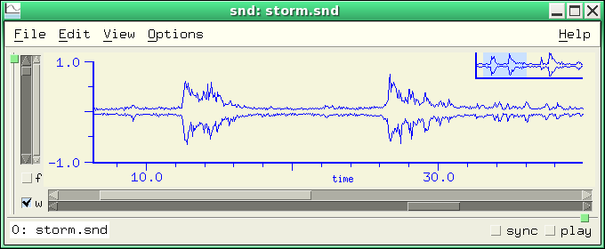with-interrupts (default: #t)
If with-interrupts is true, the Snd listener (in Gtk/Motif) adds a check for GUI activity to each computation called from the listener. This makes it possible to stop an infinite loop, or use the user interface while some long computation is running, but it also slows down that computation. To get the maximum performance, set this flag to false (#f).
with-menu-icons (default: #t)
with-menu-icons determines whether some menus display icons beside the item labels (in Gtk only). This sets both gtk-menu-images and gtk-button-images. There are a lot of these default settings in gtk (see GtkSettings.html). To set one from Scheme:
(with-let *gtk* (g_object_set (GPOINTER (gtk_settings_get_default)) "gtk-menu-images" #t))
To get the current value of one of these settings, you need to tell xg the expected return type. In the next example, we assume we're getting an integer:
> (with-let *gtk* (g_object_get (GPOINTER (gtk_settings_get_default)) "gtk-cursor-blink-time" #f)) 1200
with-pointer-focus (default: #f)
If with-pointer-focus is #t, whatever text or graph widget is underneath the mouse cursor is activated (this is sometimes known as "point-to-focus" mode).
with-relative-panes (default: #t)
If with-relative-panes is #t in the Motif version of Snd, a multichannel sound tries to retain the relative channel graph sizes when the outer sash (the overall sound size sash) changes. Mono sounds and the listener are not affected (perhaps they should be?).
with-smpte-label (default: #f)
with-smpte-label shows the current SMPTE frame number in a box in the upper left corner of the graph (see the picture above under add-mark-pane).
with-toolbar (default: #t (gtk), #f (motif))
with-toolbar places a toolbar at the top of the Snd window, just under the main menu.

with-tooltips (default: #t)
Set with-tooltips to #f to turn off tooltips.
with-tracking-cursor (default: #f)
This is #t if the cursor always follows along in the sound during playback. If it is #f, you get the tracking cursor displayed only when you ask for it (via control-click of the play button, for example). At the end of the play, the default is to return to the original (starting) cursor position. If you want the cursor to stay where it is, set with-tracking-cursor to :track-and-stay (#t = :track-and-return).
The interval (in seconds) between cursor updates is set by cursor-update-interval which defaults to 0.05. The accuracy of the cursor in reflecting the sound coming out the speakers depends on the amount of buffering in your audio system. If Snd's displayed location is off, set cursor-location-offset to reflect the number of samples of buffering you think you probably have. A positive cursor-location-offset delays the cursor's apparent progress (if playing forwards).
| tracking cursor |
|---|
play from the current cursor position with a tracking cursor: pfc |
zoom-focus-style (default: zoom-focus-active)
This determines what a zoom action focuses (centers) on. The choices are zoom-focus-left, zoom-focus-right, zoom-focus-active, zoom-focus-middle, or a function of 6 arguments. The function should return the new window left edge as a float. Its arguments are the current sound, channel number, zoom slider value (0.0 to 1.0), time domain window left and right edges in seconds, and the current total x axis size (seconds) corresponding to a slider value of 1.0.
(set! (zoom-focus-style) (lambda (snd chn zx x0 x1 range) (- x1 (* zx range))))
mimics zoom-focus-right. zoom-focus-active tries to focus on some object in the view: the cursor, a mix or mark, etc. See also Zoom options.
Several functions in Snd are "generic" in the sense that they can handle a wide variety of objects. The length function, for example, applies to strings and vectors, as well as lists. Objects specific to Snd include sounds, the selection, mixes, marks, samplers, regions, and players, all of which should be compared with equal?, not eq?.
channels obj
channels handles strings (mus-sound-chans), region-chans, the current selection (selection-chans), mus-channels, mixes, float-vectors, and vectors (always 1 channel), and sounds (as objects or as integers).
copy obj
copy returns a copy of its argument. It works with strings, lists, vectors, hash tables, float-vectors, sounds, the current selection, mixes, marks, bignums, and the non-gmp random state objects.
file-name obj
filename can replace mus-expand-filename, mus-file-name, and (s7 scheme's) port-filename, as well as handling mixes, regions, samplers, and the regular sound-oriented file-name.
fill! obj val
fill! fills obj with val (s7 only). fill! works with strings, vectors, hash-tables, float-vectors, lists, sounds, and the selection.
framples obj chn edpos
framples returns the number of "framples" in an object, that is, the number of samples per channel (a frample is a set of samples, representing each channel's value at a given sampling instant, a "sample frame" or a "frame of samples" in old time terminology).
The framples function overlaps the length function, but length of a string is string-length, whereas framples of a string treats the string as a sound file name and returns mus-sound-framples. framples can replace mus-sound-framples, mus-length, mix-length, region-framples, selection-framples, and the regular framples function that handles sound objects and integers as sound indices.
length obj
length handles list length, string-length, vector-length, framples (sound length), colormap-size, mus-length (generators), mix-length, transform-size, selection-framples, and region-framples.
maxamp obj chn
maxamp can handle a sound (via the regular maxamp function), string (treated as a sound file name, mus-sound-maxamp), generator (maxamp of the mus-data float-vector, if any), float-vector, region (region-maxamp), the current selection (selection-maxamp), vector, list, or mix object.
play object :start :end :channel :edit-position :out-channel :with-sync :wait :stop :srate :channels
play plays an object. The object can be a string (sound filename), a sound object or index, a mix, a region, the selection object, #f, a procedure, or a player. Not all the keyword arguments apply in all cases, though I hope to fill in the table of possibilities eventually. The full documentation is currently under play.
srate obj
srate handles strings (treated as file names: mus-sound-srate), regions (region-srate), the selection (selection-srate), and sounds (as objects or as integers).
sync obj
sync accesses the 'sync' field of a sound, mark, or mix.
When some user-interface action takes place, code is called that responds to that action; these functions are sometimes called callbacks; the variable that holds a list of such callbacks is known as a hook. For example, the hook that is checked when you click the sound's name in the status area is name-click-hook. We can cause that action to print "hi":
Scheme: (hook-push name-click-hook (lambda (hook) (snd-print "hi") (set! (hook 'result) #t)))
Ruby: $name_click_hook.add_hook!("print") do |snd| snd_print("hi"); true end
Forth: name-click-hook lambda: <{ snd }> "hi" snd-print drop #t ; add-hook!
The Scheme hook function is slightly different from the Forth and Ruby cases. For about 15 years, Snd used Guile-style
hooks which are essentially a list of functions, each called with the hook arguments ('snd' above). But now Scheme hooks
are functions that have three internal lists of functions. The internal functions (the things we add to hook-functions, for example)
take the hook's internal environment as their only argument ('hook' above), and then access the actual hook arguments
via (hook name). So, the examples are confusing because the situation is confused! To move between the
versions, match the Forth/Ruby argument name to the Scheme hook variable, so the function argument 'snd in Forth/Ruby
is (hook 'snd) in Scheme.
In Ruby and Forth, but not in Scheme, if there is more than one function attached to a hook, some of the hooks "or" the functions together; that is they run through the list of functions, and if any function returns something other than #f, the hook invocation eventually returns the last such non-#f value. A few hooks are "cascade" hooks; that is, each function gets the result of the previous function, and the final function's value is returned. In other cases the result returned by the hook is the result of the last function in the list. Whatever the hook combination choice, all the functions on the hook list are run on each invocation.
In Scheme, all functions are run, each takes one argument, the hook environment, and any return values are ignored. It is
up to the individual functions to track (hook 'result) if intermediate results matter.
There are several basic actions that involve a bunch of hooks. Here is a schematic view of some of these sequences.
Open filename
bad header?: bad-header-hook — can cancel request
no header?: open-raw-sound-hook — can cancel request
file ok:
open-hook — can change filename
file opened (no data read yet)
during-open-hook (can set prescaling etc)
data read, no graphics yet
after-open-hook
initial-graph-hook
Save current sound
before-save-as-hook — can cancel the request or set its output parameters
save-hook
sound saved
if any sample is clipped during save, clip-hook
after-save-as-hook
Play sound
when a play request occurs: start-playing-hook — can cancel the request, also start-playing-selection-hook
(any number of sounds can be playing at once)
as each sound ends: stop-playing-hook, stop-playing-selection-hook
Close sound
before-close-hook — can cancel close
close-hook (sound is still open)
sound closed
Save current Snd ("session") state
save-state-hook — can change output filename (crummy name is an historical artifact)
output save-state file opened
before-save-state-hook
Snd saves its state
after-save-state-hook
output closed
Exit Snd
before-exit-hook — can cancel exit request
exit-hook
Snd cleans up and exits
Here's the Ruby version of some of the hook-related functions:
$var_hook.remove_hook!("proc_name")
$var_hook.reset_hook!
$var_hook.run_hook do |prc| prc.call(1, 2, 3) end
$var_hook.call(1, 2, 3) # calls all procedures
require 'hooks'
$var_hook.show # prints the code of the procedure(s)
$va_hook.to_a
And some Forth examples, taken from Mike Scholz's documentation:
open-hook ' open-buffer 1 make-proc add-hook!
open-hook "open-buffer" remove-hook!
open-hook reset-hook!
open-hook hook->list
2 "A simple hook." create-hook my-new-hook
my-new-hook ' + 2 make-proc add-hook!
my-new-hook '( 2 3 ) run-hook
help my-new-hook
These hooks are extremely easy to add; if there's some user-interface action you'd like to specialize in some way, send me a note. hooks.scm has snd-hooks and reset-all-hooks, as well as other useful hook-related functions.
In the following list of hooks, the arguments after the hook name refer to the arguments to the functions invoked by
the hook (in Ruby and Forth). That is, after-apply-controls-hook (snd) means that the functions on the
after-apply-controls-hook list each take one argument, a sound. In Scheme, they refer to the hook variables accessible in the hook environment via (hook 'snd), for example.
after-apply-controls-hook (snd)
This hook is called when apply-controls finishes. add-amp-controls in snd-motif.scm uses this hook to reset any added amplitude sliders to 1.0.
after-graph-hook (snd chn)
This hook is called after a graph is updated or redisplayed. Use it to add your own finishing touches to the display; if added earlier they risk being erased by Snd as it redraws graphs.
after-lisp-graph-hook (snd chn)
This hook is called after a "lisp" graph is updated or redisplayed. The lisp-graph-hook functions are called before the actual graph is displayed, so if you want to add to a graph in some way, you need to use after-lisp-graph-hook. display-bark-fft in dsp.scm uses it to draw the x axis labels and ticks for various frequency scales.
after-open-hook (snd)
This hook is called just before a newly opened sound's window is displayed. It provides a way to set various sound-specific defaults. For example, the following causes Snd to default to locally sync'd channels (that is, each sound's channels are sync'd together but are independent of any other sound), united channels (all chans in one graph), and filled graphs (not line segments or dots, etc):
(hook-push after-open-hook
(lambda (hook)
(let ((snd (hook 'snd)))
(if (> (channels snd) 1)
(begin
(set! (sync snd) (+ 1 (sync-max)))
(set! (channel-style snd) channels-combined)
(set! (graph-style snd) graph-filled))))))
See also enved.scm, and various examples in snd-motif.scm.
after-save-as-hook (snd name dialog)
This hook is called after File:Save as. ('snd = sound index, 'name = full filename, 'dialog = #t if called from a dialog).
after-save-state-hook (name)
This hook is called after Snd has saved its state (save-state). 'name is the (otherwise complete) saved state program (a filename). See ws-save-state in ws.scm. It uses this sequence:
(let ((fd (open-output-file filename "a"))) ; "a" = append (format fd "~%~%;;; from ws.scm~%") ... (close-output-port fd))
after-transform-hook (snd chn scaler)
This hook is called just after an FFT (or spectrum) is calculated.
(define (report-fft-peak snd chn)
(if (and (transform-graph?)
(= (transform-graph-type) graph-once))
(status-report
(number->string (/ (* 2 (maxamp (transform->float-vector snd chn)))
(transform-size snd chn))))))
(hook-push after-transform-hook
(lambda (hook)
(report-fft-peak (hook 'snd) (hook 'chn))))
bad-header-hook (name)
This hook is called if a file has a bogus-looking header (that is, a header with what appear to be bad values such as a negative number of channels). If the hook returns #t, Snd does not try to open the file.
(hook-push bad-header-hook
(lambda (hook)
(set! (hook 'result) #t))) ; don't open bogus-looking files
If no header is found, open-raw-sound-hook is invoked instead ("raw" = "headerless").
before-close-hook (snd)
This hook is called when a file is about to be closed. If the hook returns #t, the file is not closed.
before-exit-hook ()
This hook is called upon a request to exit Snd. If the hook returns #t, Snd does not exit.
before-save-as-hook (snd name selection sampling-rate sample-type header-type comment)
This hook is called before save-sound-as or File:Save as. If the hook returns #t, the save is not performed. This hook provides a way to do last minute fixups (srate conversion for example) just before a sound is saved. The arguments to the hook function describe the requested attributes of the saved sound; 'snd' is the to-be-saved sound's index; 'name' is the output file's name; 'selection' is #t if we're saving the selection.
(hook-push before-save-as-hook
(lambda (hook)
(let ((index (hook 'snd))
(filename (hook 'name))
(sr (hook 'sampling-rate))
(dformat (hook 'sample-type))
(htype (hook 'header-type))
(comment (hook 'comment)))
(if (not (= sr (srate index)))
(let ((chns (channels index)))
(do ((i 0 (+ i 1)))
((= i chns))
(src-channel (* 1.0 (/ (srate index) sr)) 0 #f index i))
(save-sound-as filename index :header-type htype :sample-type dformat :srate sr :comment comment)
(do ((i 0 (+ i 1)))
((= i chns))
(undo 1 index i))
(set! (hook 'result) #t)))))) ; tell Snd that the sound is already saved
before-save-state-hook (name)
This hook is called before Snd saves its state (save-state). 'name' is the saved state file. If the hook returns #t, the save state file is opened in append mode (rather than create/truncate), so you can write preliminary stuff via this hook, then instruct Snd not to clobber it during the save process.
(hook-push before-save-state-hook
(lambda (hook)
(call-with-output-file (hook 'name)
(lambda (p)
(format p ";this comment will be at the top of the saved state file.~%~%")))
(set! (hook 'result) #t)))
before-transform-hook (snd chn)
This hook is called just before an FFT (or spectrum) is calculated. If the hook returns an integer, that value is used as the starting point (sample number) of the fft. Normally, the fft starts from the left window edge. To have it start at mid-window:
(hook-push before-transform-hook
(lambda (hook) ; 0.5 * (left + right) = midpoint
(set! (hook 'result)
(round (* 0.5 (+ (right-sample (hook 'snd) (hook 'chn))
(left-sample (hook 'snd) (hook 'chn))))))))
The following somewhat brute-force code shows a way to have the fft reflect the position of a moving mark:
(let ((fft-position #f))
(hook-push before-transform-hook
(lambda (hook)
(set! (hook 'result) fft-position)))
(hook-push mark-drag-hook
(lambda (hook)
(set! fft-position (mark-sample (hook 'id)))
(update-transform-graph))))
clip-hook (val)
This hook is called whenever a sample is about to be clipped while writing out a sound file. The hook can return the new value.
close-hook (snd)
This hook is called when a file is closed (before the actual close, so the index 'snd' is still valid).
(hook-push close-hook
(lambda (hook)
(play "wood16.wav")))
color-hook ()
This hook is called whenever one of the variables associated with the color dialog changes.
draw-mark-hook (id)
This hook is called before a mark is drawn. If the hook returns #t, the mark is not drawn. mark-sync-color in snd-motif.scm uses this hook to draw sync'd marks in some other color than the current mark-color.
draw-mix-hook (id old-x old-y x y)
This hook is called before a mix tag is drawn. If the hook returns either #t or a list, the mix tag is not drawn by Snd (the assumption is that the hook function drew something). old-x and old-y are the previous mix tag positions (in case you're using draw-mix-hook to draw your own mix tag as in musglyphs.scm). x and y give the current position. If the hook returns a list, its two elements (integers) are treated as the mix's tag x and y locations for subsequent mouse click hit detection.
drop-hook (name)
This hook is called each time Snd receives a drag-and-drop event, passing the hook functions the dropped filename. If the hook returns #t, the file is not opened by Snd. Normally if you drag a file icon to the menubar, Snd opens it as if you had called open-sound. If you drag the icon to a particular channel, Snd mixes it at the mouse location in that channel. To get Snd to mix the dragged file even from the menubar:
(hook-push drop-hook
(lambda (hook)
(mix (hook 'name))
(set! (hook 'result) #t))) ; return #t = we already dealt with the drop
during-open-hook (fd name reason)
This hook is called after a file is opened, but before its data has been read. 'reason' is an integer indicating why this file is being opened:
0: reopen a temporarily closed file (internal to Snd — normally invisible) 1: sound-open, File:open etc — the normal path to open a sound 2: copy reader — another internal case; this happens if a sound is played and edited at the same time 3: insert sound (File:Insert etc) 4: re-read after an edit (file changed, etc — an invisible editing case) 5: open temp file after an edit (another invisible editing case) 6: mix sound (File:Mix etc)
So, to restrict the hook action to the normal case where Snd is opening a file for the first time, check that 'reason' is 1, or perhaps 1, 3, or 6 (these read the external form of the data).
effects-hook ()
effects-hook is a convenience hook for the effects dialogs.
enved-hook (envelope point x y reason)
Each time a breakpoint is changed in the envelope editor, this hook is called; if it returns a list, that list defines the new envelope, otherwise the breakpoint is moved (but not beyond the neighboring breakpoint), leaving other points untouched. The kind of change that triggered the hook callback is indicated by the argument 'reason'. It can be enved-move-point, enved-delete-point, or enved-add-point. This hook makes it possible to define attack and decay portions in the envelope editor, or use functions such as stretch-envelope from env.scm:
(hook-push enved-hook
(lambda (hook)
(let ((env (hook 'envelope))
(pt (* 2 (hook 'point)))
(x (hook 'x))
(y (hook 'y))
(reason (hook 'reason)))
(if (and (= reason enved-move-point)
(> x 0.0)
(< x (envelope-last-x env)))
(let ((new-env (stretch-envelope env (env pt) x)))
(set! (new-env (+ pt 1)) y)
(set! (hook 'result) new-env))))))
In Forth/Ruby, if there are several functions on the hook, each gets the envelope result of the preceding function.
exit-hook ()
This hook is called upon exit.
graph-hook (snd chn y0 y1)
This hook is called each time a graph is updated or redisplayed. If it returns #t, the display is not updated. See examp.scm for many examples. If you want to add your own graphics to the display, use after-graph-hook.
(hook-push graph-hook
(let ((+documentation+ "set the dot size depending on the number of samples being displayed"))
(lambda (hook)
(let* ((snd (hook 'snd))
(chn (hook 'chn))
(dots (- (right-sample snd chn) (left-sample snd chn))))
(set! (dot-size snd chn)
(cond ((assoc dots '((100 . 1) (50 . 3) (25 . 5)) >) => cdr)
(else 8)))))))
help-hook (subject help-string)
This hook is called from snd-help with the current help subject and default help-string. Say we want the index.scm procedure html called any time snd-help is called (from C-? for example):
(hook-push help-hook (lambda (hook) (html (hook 'subject))))
initial-graph-hook (snd chn duration)
This hook is called the first time a given channel is displayed (when the sound is first opened). If the hook returns a list, the list's contents are interpreted as:
(list x0 x1 y0 y1 label ymin ymax)
(all trailing values are optional), where these numbers set the initial x and y axis limits and the x axis label. The default (an empty hook) is equivalent to:
(hook-push initial-graph-hook
(lambda (hook)
(set! (hook 'result) (list 0.0 0.1 -1.0 1.0 "time" -1.0 1.0))))
The 'duration' argument is the total length in seconds of the displayed portion of the channel, so to cause the entire sound to be displayed initially:
(hook-push initial-graph-hook
(lambda (hook)
(set! (hook 'result) (list 0.0 (hook 'duration)))))
To get other the data limits (rather than the default y axis limits of -1.0 to 1.0), you can use mus-sound-maxamp, but if that sound's maxamp isn't already known, it can require a long process of reading the file. The following hook procedure uses the maxamp data if it is already available or if the file is short:
(hook-push initial-graph-hook
(lambda (hook)
(let ((snd (hook 'snd))
(chn (hook 'chn))
(dur (hook 'duration)))
(if (or (mus-sound-maxamp-exists? (file-name snd))
(< (framples snd chn) 10000000))
(let* ((amp-vals (mus-sound-maxamp (file-name snd)))
(max-val (max 1.0 (amp-vals (+ (* chn 2) 1)))))
;; max amp data is list: (sample value sample value ...)
(set! (hook 'result) (list 0.0 dur (- max-val) max-val))) ; these are the new y-axis limits
(set! (hook 'result) (list 0.0 dur -1.0 1.0)))))) ; max amp unknown, so use defaults
key-press-hook (snd chn key state)
This hook is called upon key press while the mouse is in the lisp graph (the third graph, to the right of the time and fft graphs). If it returns #t, the key press is not passed to the main handler. 'state' refers to the control, meta, and shift keys. start-enveloping in enved.scm uses this hook to add C-g and C-. support to the channel-specific envelope editors.
lisp-graph-hook (snd chn)
This hook is called just before the lisp graph is updated or redisplayed (see display-db). If it returns a list of pixels (xm style), they are used in order by the list of graphs, rather than Snd's default colors. If it returns a thunk, that function is called rather than the standard graph routine:
(hook-push lisp-graph-hook
(lambda (hook)
(let ((snd (hook 'snd))
(chn (hook 'chn)))
(set! (hook 'result)
(lambda ()
(draw-string "hi"
(x->position 0.5 snd chn lisp-graph)
(y->position 0.0 snd chn lisp-graph)
snd chn))))))
For a fancy example, see display-bark-fft in dsp.scm.
listener-click-hook (position)
This hook is called when a click occurs in the listener; the 'position' argument is the position in the text (a character number) where the click occurred.
mark-click-hook (id)
This hook is called when a mark is clicked; return #t to squelch the default status area mark identification.
(hook-push mark-click-hook
(lambda (hook)
(let ((n (hook 'id)))
(if (not (defined? 'mark-properties)) (load "marks.scm"))
(info-dialog "Mark Help"
(format #f "Mark ~A~A:~% sample: ~D = ~,3F secs~A~A"
n
(let ((name (mark-name n)))
(if (> (string-length name) 0)
(format #f " (~S)" name)
""))
(mark-sample n)
(* 1.0 (/ (mark-sample n) (srate (car (mark-home n)))))
(if (zero? (mark-sync n))
""
(format #f "~% sync: ~A" (mark-sync n)))
(let ((props (mark-properties n)))
(if (pair? props)
(format #f "~% properties: '~A" props)
""))))
(set! (hook 'result) #t))))
mark-drag-hook (id)
This hook is called when a mark is dragged. If it returns #t, the mark position is not reflected in the status area.
(define (report-mark-location id)
;; print current mark location in status area
(let ((samp (mark-sample id))
(sndchn (mark-home id)))
(status-report
(format #f "mark ~A: sample: ~D (~,3F) ~A[~D]: ~,3F"
id samp
(exact->inexact (/ samp (srate (car sndchn))))
(short-file-name (car sndchn))
(cadr sndchn)
(sample samp (car sndchn) (cadr sndchn))))))
(hook-push mark-drag-hook
(lambda (hook)
(report-mark-location (hook 'id))
(set! (hook 'result) #t)))
mark-hook (mark snd chn reason)
This hook is called when a mark is added, deleted, or moved (but not while moving). 'reason' can be 0: add, 1: delete, 2: move (via set! mark-sample), 3: delete all marks, 4: release (after drag). In the "release" case, the hook is called upon button release before any edits (control-drag of mark) or sorting (simple drag), and if the mark-sync is not 0, the hook is called on each syncd mark.
(define (snap-mark-to-beat)
;; when a mark is dragged, its end position is always on a beat
(hook-push mark-hook
(lambda (hook)
(let ((mrk (hook 'id))
(snd (hook 'snd))
(chn (hook 'chn))
(reason (hook 'reason)))
(let ((mark-release 4))
(if (= reason mark-release)
(let* ((samp (mark-sample mrk))
(bps (/ (beats-per-minute snd chn) 60.0))
(sr (srate snd))
(beat (floor (/ (* samp bps) sr)))
(lower (floor (/ (* beat sr) bps)))
(higher (floor (/ (* (+ 1 beat) sr) bps))))
(set! (mark-sample mrk) (if (< (- samp lower) (- higher samp))
lower
higher)))))))))
mix-click-hook (id)
This hook is called when a mix tag is clicked (when the double-arrow is displayed over the tag); return #t to omit the default action which is to start the Mix dialog with the clicked mix. One example is mix-click-info in mix.scm. Here's an example that sets a mix's amps to 0 if you click it (see mix-click-sets-amp in mix.scm for a fancier version):
(hook-push mix-click-hook
(lambda (hook)
(set! (mix-amp (hook 'id)) 0.0)
(set! (hook 'result) #t)))
mix-drag-hook (id x y)
This hook is called when a mix is dragged.
(hook-push mix-drag-hook
(lambda (hook)
(status-report
(format #f "mix ~A at ~D: ~,3F"
(hook 'id)
(mix-position (hook 'id))
(exact->inexact (/ (mix-position (hook 'id)) (srate)))))))
A neat example is to set up an empty sound with a 1.0 in sample 0, mix in a float-vector containing one element of 0.5, then set up this mix-drag-hook:
(hook-push mix-drag-hook
(lambda (hook)
(update-transform-graph)))
and turn on the FFT graph. As you drag the mix, you can see the spectral effect of that moving value as a comb filter.
mix-release-hook (id samples)
This hook is called after a mix has been dragged by the mouse to a new position. 'samples' is the number of samples moved during the drag. If the hook returns #t, the final position of the mix is hook's responsibility. See snap-mix-to-beat in mix.scm.
mouse-click-hook (snd chn button state x y axis)
This hook is called upon a mouse button release or click (with various exceptions). If its function returns #t, the click is ignored by Snd.
(define (click-to-center snd chn x axis)
;; if mouse click in time domain graph, set cursor as normally, but also center the window
(and (= axis time-graph)
(let ((samp (floor (* (srate snd) (position->x x snd chn)))))
(set! (cursor snd chn) samp)
(set! (right-sample snd chn)
(- samp (floor (* .5 (- (left-sample snd chn) (right-sample snd chn))))))
(update-time-graph)
#t)))
(hook-push mouse-click-hook
(lambda (hook)
(set! (hook 'result) (click-to-center (hook 'snd) (hook 'chn) (hook 'x) (hook 'axis)))))
;;; this example disables button 2 -> insert selection
(hook-push mouse-click-hook
(lambda (hook)
(set! (hook 'result)
(and (= (hook 'axis) time-graph)
(= (hook 'button) 2)))))
The mouse scroll wheel is sometimes reported as buttons 4 and 5; in the next example, turning the wheel zooms the graph in or out:
(hook-push mouse-click-hook
(lambda (hook)
(let ((button (hook 'button))
(axis (hook 'axis)))
(if (and (= axis time-graph)
(memv button '(4 5))) ; mouse scroll wheel
(let ((midpoint (* 0.5 (apply + (x-bounds))))
(dur (/ (framples) (srate)))
(range (if (= button 4)
(* -0.25 (apply - (x-bounds))) ; zoom in
(abs (apply - (x-bounds)))))) ; zoom out
(set! (x-bounds) (list (max 0.0 (- midpoint range))
(min dur (+ midpoint range)))))))))
Here is a Forth example:
mouse-click-hook lambda: <{ snd chn button state x y axis -- }>
axis time-graph = if
$" freq: %.3f" '( snd chn #f cursor snd chn spot-freq ) string-format
snd #f status-report
else
#f
then
; add-hook!
mouse-drag-hook (snd chn button state x y)
This hook is called when the mouse is dragged within the lisp graph (see enved.scm).
mouse-enter-graph-hook (snd chn)
This hook is called when the mouse enters a channel's drawing area (graph pane).
(hook-push mouse-enter-graph-hook
(lambda (hook)
(snd-print (format #f "~A[~A]" (short-file-name (hook 'snd)) (hook 'chn)))))
mouse-enter-label-hook (type position label)
This hook is called when the mouse enters a file viewer or region label. The 'type' is 1 for view files list, and 2 for regions. The 'position' is the scrolled list position of the label. The label itself is 'label'. We can use the finfo procedure in examp.scm to popup file info as follows:
(hook-push mouse-enter-label-hook
(lambda (hook)
(if (not (= (hook 'type) 2))
(info-dialog (hook 'label) (finfo (hook 'label))))))
See also files-popup-info in nb.scm.
mouse-enter-listener-hook (widget)
This hook is called when the mouse enters the listener pane. This hook, along with the parallel graph hook makes it possible to set up Snd to behave internally like a window manager with pointer focus. That is, to ensure that the pane under the mouse is the one that receives keyboard input, we can define the following hook procedures:
(hook-push mouse-enter-graph-hook
(lambda (hook)
(if (sound? (hook 'snd))
(focus-widget (car (channel-widgets (hook 'snd) (hook 'chn)))))))
(hook-push mouse-enter-listener-hook
(lambda (hook)
(focus-widget (hook 'widget))))
mouse-enter-text-hook (widget)
This hook is called when the mouse enters a text widget (this is the third of the pointer focus hooks).
(hook-push mouse-enter-text-hook
(lambda (hook)
(focus-widget (hook 'widget))))
mouse-leave-graph-hook (snd chn)
This hook is called when the mouse leaves a channel's drawing area (graph pane).
mouse-leave-label-hook (type position name)
This hook is called when the mouse exits one of the labels covered by mouse-enter-label-hook. See nb.scm.
mouse-leave-listener-hook (widget)
This hook is called when the mouse leaves the listener pane.
mouse-leave-text-hook (widget)
This hook is called when the mouse leaves a text widget.
mouse-press-hook (snd chn button state x y)
This hook is called upon a mouse button press within the lisp graph (see enved.scm). The 'x' and 'y' values are relative to the lisp graph axis (as if the raw mouse pixel position was passed through position->x and position->y).
mus-error-hook (type message)
This hook is called upon mus-error. If it returns #t, Snd ignores the error (it assumes you've handled it via the hook). Both mus_error and mus_print run this hook; in the mus_print case, the 'type' is mus-no-error (0). You can redirect mus_print output from stderr (the default) to stdout via:
(hook-push mus-error-hook
(lambda (hook)
(if (= (hook 'type) 0)
(begin
(display (hook 'message))
(set! (hook 'result) #t)))))
To decode the 'type' argument, see mus-error-type->string.
name-click-hook (snd)
This hook is called when the sound name is clicked (in the label in the status area region of the sound's pane). If the function returns #t, the usual highly informative status area babbling is squelched.
(hook-push name-click-hook
(lambda (hook) ; toggle read-only
(set! (read-only (hook 'snd)) (not (read-only (hook 'snd))))
(set! (hook 'result) #t)))
new-sound-hook (name)
This hook is called whenever a new sound file is being created. sound-let in ws.scm uses this hook to keep track of newly created temporary sounds so that it can delete them once they are no longer needed.
new-widget-hook (widget)
This hook is called each time a dialog or a new set of channel or sound widgets is created. This is used in misc.scm (paint-all) to make sure all newly created widgets have the same background pixmaps.
open-hook (name)
This hook is called before a sound file is opened. If the function returns #t, or the sound is not readable (bad header, etc) the file is not opened and any corresponding after-open-hook functions are not called. If it returns a string (a filename), that file is opened instead of the original one.
(hook-push open-hook
(lambda (hook)
(let ((filename (hook 'name)))
(if (and (= (mus-sound-header-type filename) mus-raw)
;; check for "OggS" first word, if found, translate to something Snd can read
(call-with-input-file filename
(lambda (fd)
(equal? (read-string 4 fd) "OggS"))))
(let ((aufile (string-append filename ".au")))
(if (file-exists? aufile) (delete-file aufile))
(system (format #f "ogg123 -d au -f ~A ~A" aufile filename))
(set! (hook 'result) aufile)))))) ; now open-sound will read the new .au file
open-raw-sound-hook (name state)
This hook is called each time open-sound encounters a headerless file. Its result can be a list describing the raw file's attributes (thereby bypassing the Raw File Dialog and so on): (list chans srate sample-type data-location data-length) where trailing elements can be omitted ('data-location' defaults to 0, and 'data-length' defaults to the file length in bytes). In Ruby and Forth, if there is more than one function on the hook list, functions after the first get the on-going list result as the 'state (the empty list is the default).
(hook-push open-raw-sound-hook
(lambda (hook)
(set! (hook 'result) (list 1 44100 mus-lshort))))
Return () to accept all the current raw header defaults; return #f to fallback on the Raw File Dialog. The raw header defaults are stereo, 44100 Hz, big endian short data; these values can be changed in the Raw File Dialog, by calling open-raw-sound with explicit arguments, or via mus-header-raw-defaults. If the hook returns #t, open-sound returns without opening the file.
orientation-hook ()
This hook is called whenever one of the variables associated with the orientation dialog changes.
output-comment-hook (comment)
This hook is called in the Save-As dialog to set the default output comment value. 'str' is the current sound's comment. If there is more than one hook function, each function's result is passed as input to the next function in the list.
(hook-push output-comment-hook
(lambda (hook) ; append a time-stamp
(set! (hook 'result)
(string-append (hook 'comment)
": written "
(strftime "%a %d-%b-%Y %H:%M %Z" (localtime (current-time)))))))
;; in Ruby: format("%s: written %s", comment, Time.new.localtime.strftime("%d-%b %H:%M %Z"))
play-hook (size)
This hook is called each time a buffer is about to be filled for the DAC. The buffer size is 'size'. See enved.scm and marks.scm.
read-hook (text)
This hook is called each time a line is typed into the listener (it is triggered by the carriage return).
save-hook (snd name)
This hook is called each time a sound ('snd') is about to be saved. If it returns #t, the file is not saved. 'name' is #f unless the file is being saved under a new name (as in save-sound-as). See autosave.scm.
save-state-hook (name)
This hook is called each time the save-state mechanism is about to create a new temporary file to save some edit history sample data; that is, each channel's edit history data is saved in a separate temporary file, and this hook provides a way to specify the name of that file. 'name' is the temporary file name that will be used unless the hook function returns a different one (as a string). This hook provides a way to keep track of which files are used in a given saved state batch, so that later cleanup is easier to manage.
select-channel-hook (snd chn)
This hook is called when a channel is selected (after the sound has been selected). The function arguments are the sound's index and the channel number.
select-sound-hook (snd)
This hook is called when a sound is selected. The argument is the about-to-be-selected sound.
snd-error-hook (message)
This hook is called upon snd-error. If the listener is closed, it is also called upon any Scheme, Ruby, or Forth error. If it returns #t, Snd flushes the error (it assumes you've dealt with it via the hook).
(hook-push snd-error-hook
(lambda (hook)
(play "bong.snd")))
snd-warning-hook (message)
This hook is called upon snd-warning. If it returns #t, Snd flushes the warning (it assumes you've reported it via the hook).
(define without-warnings
(lambda (thunk)
(let ((no-warning (lambda (hook) (set! (hook 'result) #t))))
(hook-push snd-warning-hook no-warning)
(thunk)
(hook-remove snd-warning-hook no-warning))))
start-playing-hook (snd)
This hook is called when a sound is about to be played. If its function returns #t, Snd does not play. We can use this hook to replace "play" with "play selection" if the selection is active:
(hook-push start-playing-hook
(lambda (hook)
(if (and (selection?)
(selection-member? (hook 'snd)))
(begin
(play (selection))
(set! (hook 'result) #t))))) ; there's a selection so don't play the entire sound
start-playing-selection-hook ()
This hook is called when the selection is about to be played. If its function returns #t, Snd does not play the selection.
stop-playing-hook (snd)
This hook is called when a sound finishes playing. stop-playing-hook may be called more often than start-playing-hook.
stop-playing-selection-hook ()
This hook is called when the selection finishes playing.
update-hook (snd)
update-hook is called just before a sound is updated ("update" means the sound is re-read from the disk, flushing the current version; this is useful if you overwrite a sound file with some other program, while viewing it in Snd). The update process can be triggered by a variety of situations, not just by update-sound. The hook is passed the sound's index. If it returns #t, the update is cancelled (this is not recommended!); if it returns a procedure of one argument, that procedure is called upon completion of the update operation; its argument is the (possibly different) sound. Snd tries to maintain the index across the update, but if you change the number of channels the newly updated sound may have a different index. add-mark-pane in snd-motif.scm uses the returned procedure to make sure the mark pane is reactivated right away when a sound is updated. The basic idea is:
(hook-push update-hook
(lambda (hook)
(set! (hook 'result)
(lambda (updated-snd) ; this code executed when update is complete
(snd-print "ok!")))))
I use update-hook to make sure the y axis bounds reflect the new maxamp, if it is greater than 1.0:
(hook-push update-hook
(lambda (hook)
(let ((old-snd (hook 'snd))) ; (hook 'snd) is the sound about to be updated
(set! (hook 'result)
(lambda (snd)
(do ((i 0 (+ i 1)))
((= i (channels snd)))
(let ((mx (maxamp snd i)))
(if (> mx 1.0)
(set! (y-bounds snd i) (list (- mx) mx))
(if (and (> (cadr (y-bounds old-snd)) 1.0) ; previous (pre-update) version was > 1.0
(<= mx 1.0)) ; but current is not, so reset axes
(set! (y-bounds snd i) (list -1.0 1.0)))))))))))
view-files-select-hook (dialog name) [Motif only]
This hook is called each time a file is selected in a View Files dialog's files list.
edit-hook (snd chn) undo-hook (snd chn) after-edit-hook (snd chn)
These are functions that return the hooks in question associated with the specified channel. In Ruby and Forth the functions on these hooks are thunks — they should take no arguments. edit-hook is called just before any attempt to edit the channel's data; if it returns #t, the edit is cancelled. So,
Scheme: (hook-push (edit-hook hook) (lambda (hook) (set! (hook 'result) #t)))
Ruby: edit_hook(snd, chn).add_hook!(\"stop-edit\") do | | true end
Forth: snd chn edit-hook lambda: <{ }> #t ; add-hook!
halts any attempt to edit the data; this is even more restrictive than setting the read-only flag because the latter only refuses to overwrite the current data. undo-hook is called just after any undo, redo, or revert that affects the channel. after-edit-hook is called after an edit, but before after-graph-hook (add-mark-pane in snd-motif.scm uses this hook to update a mark list after each edit so that the displayed mark positions are correct). You can use edit-hook to set up protected portions of the edit history:
(define* (protect snd chn)
(let ((edit-pos (edit-position snd chn))
(hook (edit-hook snd chn)))
(set! (hook-functions hook)
(list
(lambda ()
(let ((val (< (edit-position snd chn) edit-pos)))
(if val (status-report "protected"))
(set! (hook 'result) val)))))))
(define* (unprotect snd chn)
(set! (hook-functions (edit-hook snd chn)) ()))
enved.scm uses several of these hooks to implement an envelope editor in lisp. add-mark-pane in snd-motif.scm uses them to make sure the mark list reflects the current edit history location. See also autosave.scm. It is possible for after-edit-hook to be called more often that edit-hook, or vice-versa; edit-hook may be called more than once on a given attempt to edit; if a long computation is required Snd may check edit-hook ahead of time to avoid unnecessary work.
Snd presents its various data structures as a list of sounds, each with a list of channels, each with lists of edits, marks, and mixes. The sound data itself is accessed through a variety of structures and functions, each aimed at a particular kind of use. The accessors from lowest level up are: samplers (one sample at a time iterators) and frample-readers (a "frample" is a multichannel sample), channel-at-a-time blocks (float-vectors, map-channel, etc), multichannel blocks (map-sound, etc), a few historical leftovers that follow the "sync" field (scale-to, etc), and finally the top-level operations such as save-sound-as (these are used in the File menu, etc). In the following sections, I'll start with the lowest level and work upwards, more or less. But before launching into samplers, I need to explain a few things about the following documentation.
Each sound is an object in Snd, and has an associated index. To refer to that sound, you can use either the object or the index. In the argument lists below, 'snd' as an argument refers to either the sound object or its index. It normally defaults to the currently selected sound. Similarly, 'chn' is the channel number, starting from 0, and defaults to the currently selected channel. So if there's only one sound active, and it has only one channel, (cursor), (cursor 0), (cursor 0 0), and (cursor (integer->sound 0)) all refer to the same thing. If you want to refer to the currently selected sound explicitly, use selected-sound.
In many cases, the 'snd', 'chn', and 'reg' arguments
can be #t which
means "all"; if 'snd' is #t, all sounds are included.
(expand-control #t)
returns a list of the current
control panel expansion settings of all sounds, and
(set! (transform-graph? #t #t) #t)
turns on the fft display in all channels of all sounds.
When an error occurs, the function throws a tag such as 'no-such-sound, 'no-active-selection, etc. All the functions that take sound and channel args ('snd chn' below) can return the errors 'no-such-sound and 'no-such-channel; all the mix-related functions can return 'no-such-mix; all the region-related functions can return 'no-such-region; all selection-oriented functions can return 'no-active-selection. To reduce clutter, I'll omit mention of these below.
The simplest data access function is sample which returns the sample at a given position in a sound's channel. This simplicity, however, comes at a price in computation: if the desired sample is not in Snd's in-core (already loaded) view of the data, it has to go get the sample, which can sometimes require that it open, read, and close a sound file. The result is that sample can bring your code to a grinding halt. There are two alternatives, leaving aside the scanning and mapping functions mentioned below. One involves keeping the buffer of data around explicitly (channel->float-vector), and the other involves the use of a special object known as a sampler. The sampler returns the next sample in its sound each time it is called; this kind of access is sometimes called an "enumerator" (Ruby) or perhaps "iterator" (Gtk+). The buffer approach (channel->float-vector in expsrc) is better if you're jumping around in the data, the sample-by-sample approach if you're treating the data as a sequence of samples. To get a sampler, you create a reader (via make-sampler) giving it the start position, the sound and channel to read, and the initial read direction, then get data via read-sample (which remembers the read direction passed to make-sampler), or next-sample (read forward) and previous-sample (read backward); when done, you can close the reader with free-sampler, but it's usually not necessary; the garbage collector will take care of it if you forget (but, sigh, the GC can be dilatory at times).
There is a similar set of functions giving access to the mix data. make-mix-sampler returns a mix reader for the desired mix, mix-sampler? returns #t if its argument in a mix sampler, and read-mix-sample returns the next sample (before it is mixed into the output).
copy-sampler obj
copy-sampler returns a copy of 'obj' which can be any kind of sampler.
free-sampler obj
free-sampler releases the sampler 'obj'. In most cases, you don't need to call this function because the garbage collector handles the sampler object, but it doesn't hurt anything (but don't try to use a sampler after you've freed it!). If you're using zillions of samplers, sometimes freeing the samplers explicitly can reduce demands on memory.
make-mix-sampler mix (beg 0)
make-mix-sampler creates a mix-sampler reading 'mix' starting (in the mix input) at 'beg'. See mix->float-vector in mix.scm.
make-region-sampler start reg chn (dir 1)
make-region-sampler creates a sampler reading channel 'chn' of the region 'reg' starting at sample 'start', and reading forward if 'dir' is 1, backwards if 'dir' is -1. It is not safe to assume that this reader will return zeros beyond the region boundaries.
make-sampler start snd chn dir edpos
make-sampler creates a sampler reading the given channel starting at sample 'start' with initial read direction 'dir' (1=forward, -1=backward). 'edpos' is the edit history position to read; it defaults to the current edit.
> (open-sound "oboe.snd") #<sound 0> > (define reader (make-sampler 1000)) reader > reader #<sampler: oboe.snd[0: 0] from 1000, at 1000, forward> > (read-sample reader) 0.0328369140625 > (sample 1000) 0.0328369140625 > (next-sample reader) 0.0347900390625 > (sample 1001) 0.0347900390625 > (sampler-home reader) (#<sound 0> 0) > (sampler-position reader) 1002
One use of 'edpos' is to get the difference between two edits:
(define snd-diff
(lambda () ;assume mono, get diff between current state and previous
(let* ((index (selected-sound))
(edit-pos (edit-position index))
(previous-edit (make-sampler 0 0 index 1 (- edit-pos 1))))
(lambda (x)
(- x (read-sample previous-edit)) #f))))
(map-channel (snd-diff))
Once the reader has been set up to read at a given edit position, subsequent edits won't affect it. One sequence that takes advantage of this is: make-sampler, scale-by 0, then run an overlap-add process on the data from before the scaling.
'snd' can be a filename (a string); in this way a sampler can read external sounds without going to the trouble of loading them into Snd.
(define reader (make-sampler 100 "oboe.snd"))
'snd' also can be a mix or region. make-sampler is probably the most useful function in Snd; there are lots of examples in the Scheme, Ruby, and Forth files.
mix-sampler? obj
mix-sampler? returns #t if 'obj' is a mix-sampler.
next-sample obj
next-sample returns the next sample (reading forward) read by the sampler 'obj'.
previous-sample obj
previous-sample returns the previous sample in the stream read by the sampler 'obj'.
read-mix-sample obj
read-mix-sample returns the next sample read by the mix-sampler 'obj'.
read-region-sample obj
read-region-sample returns the next sample read by the region-sampler 'obj'.
(define* (region->float-vector reg (chn 0))
(cond ((not (region? reg))
(error 'no-such-region (list "region->float-vector" reg)))
((< chn (channels reg))
(let ((reader (make-region-sampler 0 reg chn))
(len (region-framples reg)))
(do ((data (make-float-vector len))
(i 0 (+ i 1)))
((= i len) data)
(set! (data i) (reader)))))
(else
(error 'no-such-channel (list "region->float-vector" reg chn)))))
read-sample obj
read-sample returns the next sample read by the sampler 'obj', reading in the direction set by make-sampler.
read-sample-with-direction obj dir
read-sample-with-direction returns the next sample read by the sampler 'obj', reading in the direction set by 'dir' (1 = forward, -1 = backward). This combination of next-sample and previous-sample is intended mainly for src.
region-sampler? obj
region-sampler? returns #t if 'obj' is a region sampler.
sampler-at-end? obj
sampler-at-end? returns #t if the sampler 'obj' (any kind of reader) is at the end of the sound (or whatever it is reading), and hence is returning 0.0 each time it is called. When the last "real" sample is returned, the at-end? flag is still false; when it becomes true, the sampler returns a 0.0 sample. See locate-zero in examp.scm, or linear-src-channel in dsp.scm.
sampler-home obj
sampler-home returns information describing the source of the data the sampler 'obj' is reading. if 'obj' is a sound sampler, it returns a list with the sound and channel number associated with 'obj'. If 'obj' is a mix reader, it returns the mix. Finally, if 'obj' is a region reader, it returns a list with the region.
sampler-position obj
sampler-position returns the current (sample-wise) location of the sampler 'obj' (any kind of reader).
sampler? obj
sampler? returns #t if 'obj' is a sampler.
If your extension language supports it, the read-sample functions can be omitted: (reader) is the same as (read-sample reader).
There is a Snd-specific CLM-style generator that redirects CLM instrument input (via in-any, ina, etc) to Snd data, snd->sample.
make-snd->sample snd
make-snd->sample creates a Snd data reader for use with CLM's in-any, file->sample, etc.
snd->sample gen frample chan
snd->sample gets the next sample from the data accessed by 'gen', similar to file->sample. If *reverb* is a snd->sample generator, for example, ina and file->sample actually call snd->sample.
snd->sample? obj
snd->sample? returns #t if 'obj' is a snd->sample generator.
These are arrays of floats. In s7, use "float-vector", and in Forth and Ruby use "vct".
list->float-vector lst list->vct lst
return a new float-vector with elements of list 'lst' (equivalent to the float-vector function).
make-float-vector len (initial-element 0.0) make-vct len (initial-element 0.0)
make-float-vector creates a float-vector of size 'len'.
float-vector :rest args vct :rest args
float-vector is equivalent to list->float-vector with 'args' as the list: (float-vector 0.0 0.1 0.2).
float-vector? v vct? v
float-vector? returns #t if 'v' is a float-vector.
float-vector-abs! v vct-abs! v
float-vector-abs! replaces each element of 'v' with its absolute value.
float-vector-add! v1 v2 (off 0) vct-add! v1 v2 (off 0)
float-vector-add! performs element-wise add: v1[i + off] += v2[i], returning 'v1'.
copy v vct-copy v
float-vector-copy returns a copy of the float-vector 'v'.
| Copying |
|---|
copy file: in Scheme: copy-file, in Ruby: File.copy or File.syscopy |
float-vector-equal? v1 v2 diff vct-equal? v1 v2 diff
float-vector-equal? is an element-wise relative difference check. If (abs(v1[i] - v2[i]) / (max (abs v1[i]) (abs v2[i]))) > diff, it returns false. Otherwise it returns the maximum relative difference encountered. If v1 and v2 are of different lengths, the overlapping portion is checked.
float-vector-fill! v val vct-fill! v val
float-vector-fill! sets each element of 'v' to 'val': v[i] = val. It returns 'v'.
float-vector-length v vct-length v
float-vector-length returns the length of 'v'.
float-vector-max v vct-max v
float-vector-max returns the maximum value of the elements of 'v'.
float-vector-min v vct-min v
float-vector-min returns the minimum value of the elements of 'v'.
float-vector-move! v new old backwards vct-move! v new old backwards
float-vector-move moves a block of values within a float-vector: v[new++] = v[old++], or if 'backwards' is #t: v[new--] = v[old--]. It returns 'v'.
float-vector-multiply! v1 v2 vct-multiply! v1 v2
float-vector-multiply! performs element-wise multiply of two float-vectors: v1[i] *= v2[i]. It returns 'v1'.
float-vector-offset! v val vct-offset! v val
float-vector-offset! adds 'val' to each element of 'v': v[i] += val. It returns 'v'.
float-vector-peak v vct-peak v
float-vector-peak returns the maximum absolute value of the elements of 'v'.
float-vector-ref v pos vct-ref v pos
float-vector-ref returns the element 'pos' in 'v': v[pos].
float-vector-reverse! v size vct-reverse! v size
float-vector-reverse! reverses the elements of 'v' (in-place), returning 'v'. If 'size' is given, the reversal centers around it.
float-vector-scale! v scl vct-scale! v scl
float-vector-scale! multiplies each element of 'v' by 'scl': v[i] *= scl. It returns 'v'.
float-vector-set! v pos val vct-set! v pos val
float-vector-set! sets the float-vector 'v' element at 'pos' to 'val': v[pos] = val. In Scheme, this is the same as (set! (v pos) val).
float-vector-subtract! v1 v2 vct-subtract! v1 v2
float-vector-subtract! performs an element-wise subtract: v1[i] -= v2[i]. It returns 'v1'.
float-vector-subseq v start (end len) nv vct-subseq v start (end len) nv
float-vector-subseq returns a new float-vector (or 'nv' if given) with the elements of 'v' between 'start' and 'end' inclusive. 'end' defaults to the end of 'v'.
float-vector+ obj1 obj2 vct+ obj1 obj2
float-vector+ combines float-vector-add! and float-vector-offset!, depending on the type of its arguments.
float-vector* obj1 obj2 vct* obj1 obj2
float-vector* combines float-vector-multiply! and float-vector-scale!, depending on the type of its arguments.
float-vector->channel v (beg 0) dur snd chn edpos origin vct->channel v (beg 0) dur snd chn edpos origin
float-vector->channel sets the samples from 'beg' to 'beg' + 'dur' from the values in 'v'. This changes (edits) the channel, so 'origin' provides a way to name the edit (for the edit history list and whatnot).
float-vector->list v vct->list v
float-vector->list returns a list with elements of 'v'.
float-vector->string v vct->string v
float-vector->string returns a string describing 'v'.
vct->vector v
vct->vector returns a vector with the elements of 'v'.
vector->vct vect
vector->vct returns a vct with elements of vector 'vect'.
In Ruby, vcts partake in the Enumerable and Comparable classes, and have a variety of additional methods: map, each, <=>, etc. See vct.c and the Ruby documentation for a complete list.
:v1
#<vct[len=10]: 0.100 0.100 0.100 3.000 0.100 0.100 0.100 0.100 0.100 0.100>
:v1.find_all {|x| x > 1.0 }
[3.0, 4.0]
:v1.max
4.0
:v2 = make_vct(10, 0.1)
#<vct[len=10]: 0.100 0.100 0.100 0.100 0.100 0.100 0.100 0.100 0.100 0.100>
:v2 < v1
true
All of the underlying sound library (Sndlib) functions are available, as well as most of CLM (sndclm.html). See play.scm. Much of the mus-audio interface is changing. In particular, I'm removing the input side of the audio code. The most important Sndlib functions for Snd are:
mus-alsa-buffers
mus-alsa-buffers is the number of buffers ("periods") used in ALSA; you can also use the environment variable MUS_ALSA_BUFFERS. The default setting is 3. These ALSA variables only matter if you built Snd with the configure switch --with-alsa.
mus-alsa-buffer-size
mus-alsa-buffer-size is the buffer size used in ALSA. You can also use the environment variable MUS_ALSA_BUFFER_SIZE. The defaut setting is 1024.
mus-alsa-device
This is the ALSA audio device; it defaults to "default". The matching environment variable is MUS_ALSA_DEVICE. If the ALSA "default" device can't be found, we also look for "plughw:0" and "hw:0". The "0" is apparently a card number or something. On my machine where the internal sound card is worse than useless, I have an EMI 2|6 connected to a USB port. Its ALSA name seems to be "hw:1" on a good day.
mus-alsa-capture-device
This is the ALSA capture device. The matching environment variable is MUS_ALSA_CAPTURE_DEVICE.
mus-alsa-playback-device
This is the ALSA audio playback device. The matching environment variable is MUS_ALSA_PLAYBACK_DEVICE.
mus-alsa-squelch-warning
Set mus-alsa-squelch-warning to #t to squelch warnings from ALSA about srate mismatches.
mus-bytes-per-sample sample-type
mus-bytes-per-sample returns the number of bytes that 'sample-type' uses to encode one sample of sound.
> (mus-bytes-per-sample mus-bdouble) 8
mus-clipping
mus-clipping is the default low-level clipping choice while accessing sound data. Its default is #f which makes clipping very obvious (it will cause wrap-around). If you're using the standard Snd file accessors, you probably want to use clipping, not this function. See also clip-hook.
mus-error-type->string error
mus-error-type->string returns a brief string description of 'error' (a mus-error return type). This is only useful in mus-error-hook, and it's not very useful even there.
mus-expand-filename name
mus-expand-filename fills out the filename 'name' to include its 'absolute' pathname; that is, it replaces '~' with the current home directory, and whatever else seems appropriate.
> (mus-expand-filename "oboe.snd") "/home/bil/cl/oboe.snd"
mus-file-clipping fd
This is the clipping choice for the file referred to by 'fd. The default is #f which makes clipping very obvious (it will cause wrap-around). See also clip-hook.
mus-header-raw-defaults
mus-header-raw-defaults returns a list: '(srate chans sample-type), the current raw header defaults. These can be set:
(set! (mus-header-raw-defaults) (list 22050 4 mus-lint))
mus-header-type-name type
mus-header-type-name converts 'type', an integer, to a string, e.g. "AIFF". Some of the sndlib header types are:
mus-next mus-aifc mus-riff mus-rf64 mus-nist mus-raw mus-ircam mus-aiff mus-caff mus-bicsf mus-soundfont mus-voc mus-svx mus-unsupported
This function just decodes a sndlib header type identifier.
> (mus-header-type-name (mus-sound-header-type "oboe.snd")) "Sun/Next"
The default sound output header choice is default-output-header-type, a sound file's header type is mus-sound-header-type, the CLM (with-sound) header default is *clm-header-type*, and an opened sound's header type is header-type.
mus-header-type->string type
mus-header-type->string converts 'type', an integer, to a string, e.g. "mus-aifc".
mus-oss-set-buffers num size
In Linux (OSS), this sets the number and size of the OSS fragments. The default (as of 21-May-01) is to accept whatever OSS chooses: I believe this is normally equivalent to (mus-oss-set-buffers 16 12). This default makes the control panel controls very sluggish. Snd used to call (mus-oss-set-buffers 4 12) as its default, but this seems to cause trouble for a variety of new sound cards. My initialization file includes (mus-oss-set-buffers 2 12).
mus-sample-type-name format
mus-sample-type-name converts 'format' from an integer to an explanatory string, e.g. "16-bit big endian linear".
mus-bshort mus-lshort mus-mulaw mus-alaw mus-byte mus-lfloat mus-bint mus-lint mus-b24int mus-l24int mus-ubshort mus-ulshort mus-ubyte mus-bfloat mus-bdouble mus-ldouble mus-unknown
There are also "unscaled" versions of the floating point types, and "normalized" versions of the integers.
mus-sample-type->string format
mus-sample-type->string converts 'format' from an integer to a string, e.g. "mus-mulaw".
> (mus-sample-type->string mus-bdouble) "mus-bdouble"
mus-sound-chans filename
This is the number of channels in 'filename'. This value can be set (as can the others like it mentioned below); the assignment refers to the table of sound file data maintained by sndlib. The file itself is not touched, but any subsequent reference to it in Snd will assume the new value. In the mus-sound-chans case, say we have a sound file whose header claims it has 43 channels, but we know it only has 2:
(set! (mus-sound-chans "43chans.snd") 2)
tells Snd that it has 2 channels no matter what the header says.
mus-sound-comment filename
mus-sound-comment returns the comment in the header of the file 'filename'.
> (with-sound (:comment "this is a comment") (fm-violin 0 1 440 .1)) "test.snd" > (mus-sound-comment "test.snd") "this is a comment"
mus-sound-data-location filename
This is the location in bytes of the first sample in the file 'filename'.
mus-sound-datum-size filename
This returns the size in bytes of each sample in 'filename'. It is equivalent to (mus-bytes-per-sample (mus-sound-sample-type filename)).
mus-sound-duration filename
This returns the duration in seconds of the sound data in the file 'filename'.
> (mus-sound-duration "oboe.snd") 2.30512475967407
mus-sound-forget filename
mus-sound-forget removes the file 'filename' from the sndlib sound cache.
mus-sound-framples filename
mus-sound-framples returns the number of framples of sound data in the file 'filename' according to its header (this number is occasionally incorrect in mus-next headers).
mus-sound-header-type filename
This returns the header type (e.g. mus-aifc) of the file 'filename'.
> (mus-header-type->string (mus-sound-header-type "oboe.snd")) "mus-next"
mus-sound-length filename
mus-sound-length returns the number of bytes of sound data in the file 'filename'.
mus-sound-loop-info filename
This function refers to the "loop" info that is sometimes found in some headers (aifc, wav etc). mark-loops in examp.scm uses mus-sound-loop-info to place a mark at each loop point.
> (mus-sound-loop-info "~/sf1/forest.aiff") (24981 144332 0 0 60 0 1 0)
The loop info is a list of up to 4 points, the first two (start, end = 24981 144332 above) refer to the sustain loop, and the second two (0 0 above) refer to the release. The 5th and 6th list entries are the base note and detune values (60 0 above). For historical reasons, the 7th and 8th entries are the sustain and release modes (1 0 above). The looper instrument uses this function to implement a sort of "freeze" function. See also sound-loop-info.
mus-sound-mark-info filename
This function refers to the "mark" info that is sometimes found in aifc and aiff headers. It returns a list of lists (or an empty list if there are no marks), each inner list being (mark-id mark-position). The mark-id is a number that identifies it for use with mus-sound-loop-info, and the mark-position is its sample number in the file. Normally, this information is already included in the mus-sound-loop-info list:
> (mus-sound-mark-info "/home/bil/sf1/forest.aiff") ((4 1) (3 0) (2 144332) (1 24981)) > (mus-sound-loop-info "/home/bil/sf1/forest.aiff") (24981 144332 0 0 60 0 1 0)
mus-sound-maxamp filename
mus-sound-maxamp returns a list of max amps and locations thereof. The corresponding set! affects only the sndlib table of sound file info, not the sound file itself, as in all such cases.
> (mus-sound-maxamp "oboe.snd") (24971 0.147247314453125) ;; oboe's maxamp is .147 first encountered at sample 24971 > (mus-sound-maxamp "2a.snd") (933 0.0999755859375 2827 0.0999755859375) ;; 2a's maxamps are 0.1 in each channel at sample 933 in chan 0, 2827 in chan 1
mus-sound-maxamp-exists? filename
This function returns #t if the sound's maxamp data is available in the sound cache; if it isn't, a call on mus-sound-maxamp has to open and read the data to get the maxamp.
> (mus-sound-maxamp-exists? "/home/bil/test/sound/away.snd") #f > (mus-sound-maxamp "/home/bil/test/sound/away.snd") (14562264 0.463623046875 14557044 0.404571533203125) > (mus-sound-maxamp-exists? "/home/bil/test/sound/away.snd") #t
mus-sound-preload filename
mus-sound-preload loads a sound file into memory, and uses that copy of it thereafter. If the sound data is stored in some odd format, and you use that file a lot, this can save some time.
mus-sound-prune
mus-sound-prune removes all defunct (non-existent) files from the sound cache. This is primarily intended for internal testing (snd-test.scm).
mus-sound-report-cache file
This function prints the current sound header data table to the file given or stdout if none is specified.
mus-sound-samples filename
mus-sound-samples returns the number of samples in the sound file 'filename' according to its header.
> (mus-sound-samples "oboe.snd") 50828
mus-sound-sample-type filename
mus-sound-sample-type returns the sample type (e.g. mus-bshort) of the file 'filename'.
> (mus-sample-type->string (mus-sound-sample-type "oboe.snd")) "mus-bshort"
mus-sound-srate filename
mus-sound-srate returns the sampling rate of 'filename'.
mus-sound-type-specifier filename
This is the original type indication of 'filename'. This is only useful in internal testing.
mus-sound-write-date filename
This returns the sound's write date:
> (strftime "%d-%b %H:%M %Z" (localtime (mus-sound-write-date "oboe.snd"))) "18-Oct 06:56 PDT"
See Sndlib for more information on these functions. When called from Snd, these throw 'mus-error upon encountering an error, rather than returning -1 like the underlying sndlib functions.
The following function uses the sndlib functions to mimic the 'info' popup menu option (see examp.scm for a version that uses format):
(define info
(lambda (file)
(string-append
file
": chans: " (number->string (channels file))
", srate: " (number->string (srate file))
", " (mus-header-type-name (mus-sound-header-type file))
", " (mus-sample-type-name (mus-sound-sample-type file))
", len: " (number->string
(/ (mus-sound-samples file)
(channels file) (srate file))))))
A mark is an object that refers to a particular sample. Each mark has an associated sample number (mark-sample), name (mark-name), and sync value (mark-sync). See Marks in snd.html for an overview and key bindings associated with marks. See also the hooks section above for various mark-related hooks.
add-mark sample snd chn name sync
add-mark adds a mark at the position 'sample', returning the new mark.
> (define m1 (add-mark 1234)) m1 > m1 #<mark 0> > (mark-sample m1) 1234
The mark-name can be set via 'name', and the mark-sync field via 'sync'. If 'sample' is beyond the end of the data, add-mark throws 'no-such-sample. There is also the form add-mark! which returns #f if the sample number is beyond the current last sample, rather than throwing the 'no-such-sample error.
delete-mark mark
delete-mark deletes the mark. Mark additions and deletions follow the edit list, so if the deleted mark was present in an earlier edit, and you undo to that point, the mark comes back to life.
delete-marks snd chn
This function deletes all marks in the given channel. It could be defined in Scheme as:
(for-each delete-mark (marks (or snd (selected-sound)) (or chn (selected-channel))))
find-mark samp snd chn edpos
find-mark returns the mark at sample 'samp' or #f if none is found. If 'samp' is a string, rather than an integer, find-mark looks for a mark of that name. mark-name->id in marks.scm finds a named mark in any channel (a global version of find-mark).
integer->mark i
In olden times, a mark was handled in Snd code as an integer; nowadays, it's an object. Originally I said, "this function, and its companion mark->integer, exist mainly to convert old code to the current style", but that was premature. The mark-as-integer approach was handy because it's easy to type the mark's identifying integer. I changed from integers to mark objects to make it possible to treat marks in the various generic functions, but that meant that if you forget to save the mark object in some handy variable, you end up typing "integer->mark" over and over. One way out is to define a #-reader that sees something like "#m12" and expands that into (integer->mark 12):
> (set! *#readers*
(cons (cons #\m (lambda (str)
(integer->mark (string->number (substring str 1)))))
*#readers*))
((#\m . #<lambda (str)>))
> #m1
#<mark 1>
> (mark-sample #m1)
38694
mark->integer mark
This is the counterpart to integer->mark.
mark-color
This sets the color of mark indicator; the default is red. mark-sync-color uses mark-color to display all sync'd marks with some distinctive color.
mark-context
This is the graphics context to use to draw a mark (XOR mode).
mark-home mark
mark-home is a list with the sound and channel that hold the mark.
> (marks 0 0) ; what marks are in snd 0, chn 0? (#<mark 0>) ; just one > (mark-home (car (marks 0 0))) ; what is that mark's snd/chn? (#<sound 0> 0)
mark-name mark
This is the name of the mark.
> (define m1 (add-mark 1234 0 0 "a name")) m1 > (mark-name m1) "a name" > (set! (mark-name m1) "a new name") "a new name" > (mark-name m1) "a new name"
mark-properties mark
mark-properties is a property list associated with a mark. mark-property reads and writes this list.
mark-property key mark
mark-property accesses the property 'key' in the property list associated with the mark.
> (set! (mark-property :weight m0) 2.5) ; m0 is the mark 2.5 > (mark-property :weight m0) 2.5
mark-sample mark edpos
mark-sample is the sample number (a location) marked by the mark at edit history position 'edpos'.
> (mark-sample m1) 1234 > (set! (mark-sample m1) 4321) 4321 > (mark-sample m1) 4321
It might be more consistent with other Snd names to call this mark-position, but I wanted to emphasize that a mark follows its sample around as a sound is edited; that is, it marks a sample, not a position in the sound. Say we have three named marks in a speech excerpt (see below), then delete the initial spoken word ("now"); each mark backs up with the deletion so that it continues to point to its original sample:
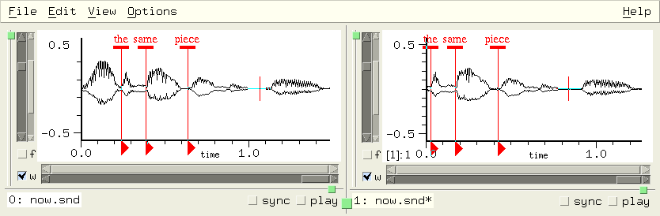mark-sync mark
This is the mark's sync field (the default is 0). The sync value provides a way to group marks for simultaneous changes. Marks that share the same sync value (if not 0), move together when any one of them is dragged, play together if clicked, etc. To find which marks share a given sync value, use syncd-marks; to find an unused sync value use mark-sync-max.
Marks that are syncd together can be used for insertions, and deletions, and can set arbitrary groups of play points. But it's a bit tedious to type (set! (mark-sync ...)...) for each of the marks you want in the group. The following code example uses the mark-click-hook instead; you type (start-sync), then click each of the marks that you want grouped together, then (stop-sync).
(define mark-sync-number 0) (define (start-sync) (set! mark-sync-number (+ (mark-sync-max) 1))) (define (stop-sync) (set! mark-sync-number 0)) (define (click-to-sync id) (set! (mark-sync id) mark-sync-number) #f) (hook-push mark-click-hook click-to-sync)
Now control-click and drag one of them, and all of them move together deleting data, or inserting zeros; or click the "play" triangle, and all of them play together starting from their respective samples.
mark-sync-max
This is the maximum mark sync value seen so far.
mark-tag-height
When a mark is drawn, it has a horizontal rectangle at the top, then a vertical line, then a triangle. The line marks the marked sample, the triangle can be clicked to play from the mark, and the rectangle can be clicked or dragged. The mark-tag-height refers to the vertical thickness of that tag in pixels; its default is 4.
mark-tag-width
This is the mark tag width in pixels; it defaults to 10.
marks snd chn edpos
This function returns a list of mark ids in the given channel at the edit history position 'edpos'. If 'chn' and 'edpos' are omitted, a list of lists is returned, each inner list representing a channel of 'snd'. If 'snd' is also omitted, a list of lists of lists is returned, representing each sound and its channels.
(define (how-many-marks-in-channel snd chn) (length (marks snd chn))) (define (how-many-marks-in-sound snd) (apply + (map length (marks snd)))) (define (how-many-marks) (apply + (map how-many-marks-in-sound (sounds))))
If the marks function is called without any argument, or with just a sound, it returns a list of lists; each inner list is the list of current marks active in that channel, ordered by sample number. If the channel argument is specified, marks returns just the list of marks. If the edit history position is given, the list of marks reflects the marks active at that point in the edit history. See describe-mark in marks.scm.
Say we have two sounds open, 2 marks in the first (a mono sound), and one in the second channel of the second (a stereo sound):
> (marks 0 0) (#<mark 1> #<mark 0>) ; these are mark id's, as returned by the add-mark function for example > (marks 1) (() (#<mark 2>)) ; no mark in channel 0, one in channel 1 > (marks) (((#<mark 1> #<mark 0>)) (() (#<mark 2>)))
mark? obj
mark? returns #t if 'obj' is a mark and is active (that is, if it is present in a currently open channel).
save-marks snd filename
save-marks saves the given sound's marks, writing a Scheme, Ruby, or Forth source file named either 'filename' or <sound's file-name>.marks. It returns the file name or #f if there are no marks to save.
show-marks
show-marks is #t if marks are being displayed.
syncd-marks sync
syncd-marks returns a list of marks that share the mark-sync value 'sync'.
(define (move-syncd-marks sync diff)
(for-each
(lambda (m)
(set! (mark-sample m) (+ (mark-sample m) diff)))
(syncd-marks sync)))
See marks.scm for more examples including:
| Marks |
|---|
find mark in any sound: mark-name->id |
Other examples can be found in Dave Phillips' marks-menu.scm, snd-motif.scm (add-mark-pane), edit-menu.scm (trim from mark, etc), examp.scm (move window to correspond to mark, looping).
Mixing operations have a lot of extra support built into Snd. In nearly every mixing function, you can request a "mix tag" (or set that request globally via with-mix-tags). If the mix operation is tagged, you can then operate on that data through a number of functions, the Mix Dialog, various hooks, and various mouse-related actions.
A mix is an object that represents a channel (one channel in and one channel out) of a sound mix. Various mixing functions create these objects (mix-float-vector for example). In the old days, mixes were identified by integers, so for conversion you can use mix->integer and integer->mix. Say we have a mix object stored in the variable "id":
> (set! (mix-amp id) .5) .5
This sets the mix's amplitude scaler to .5.
integer->mix i
In olden times, a mix was handled in Snd code as an integer; nowadays, it's an object. This function, and its companion mix->integer, exist mainly to convert old code to the current style.
mix->integer mix
This is the counterpart to integer->mix.
mix file samp in-chan snd chn with-mix-tags auto-delete
mix is one of the basic mixing functions. It mixes the 'in-chan' channel of the file 'file' into the given channel starting at 'samp' in the output channel, and returns a list with the mix. If 'in-chan' is #t, all input channels are mixed into successive output channels, and mix returns a list of the mixes.
If 'with-mix-tags' is #f (the default is #t), the data is mixed without creating any mix objects.
(mix "test.snd") ; add channel 0 of test.snd to the current sound at sample 0 (mix "test.snd" 0 #t) ; same but add all channels of test.snd into successive output channels (mix "test.snd" 0 1) ; add channel 1 of test.snd to channel 0 of the current sound (mix "test.snd" 0 0 #f 1) ; add channel 0 of test.snd to channel 1 of the current sound (mix "test.snd" 0 3 #f 1 #f) ; add channel 3 of test.snd to channel 1 of the current sound, without a mix tag
The input file ('file') is not deleted by Snd unless 'auto-delete' is #t (or 1 or 3). auto-delete can be a boolean (#f = don't delete), or and integer: 0=don't delete, 1=delete, 3=delete but keep track of multichannel inputs.
In the next example, we mix in two sounds:
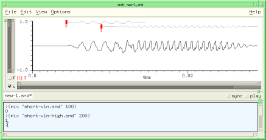Now we can drag either of the red tags to move the mixed sounds, call up the View:Mixes dialog to edit them, or use the functions in this section. For example, we'll set the amplitude of the first and the position of the second:
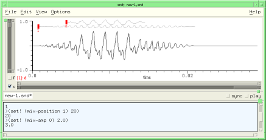We can use dlocsig in conjunction with mix to move the mixed-in sound:
(if (not (provided? 'snd-dlocsig.scm)) (load-from-path "dlocsig.scm"))
(if (not (provided? 'snd-ws.scm)) (load-from-path "ws.scm"))
(define (mix-move-sound start-time file path)
"mix file at start-time in the currently selected sound following the given dlocsig path"
(let* ((duration (mus-sound-duration file))
(rd (make-sampler 0 file))
(start (seconds->samples start-time))
(tmp-sound (with-temp-sound (:channels (channels) :srate (srate file))
;; We use with-temp-sound here rather than sound-let because mix normally expects its input file to
;; be around until it decides it doesn't need it anymore, but sound-let deletes all its temp files.
;; We use with-temp-sound rather than with-sound because the latter would want to open the output
;; file in Snd; this could be turned off by including the :to-snd #f argument.
(let* ((vals (make-dlocsig :start-time 0
:duration duration
:path path))
(dloc (car vals))
(beg (cadr vals))
(end (caddr vals)))
(do ((i beg (+ i 1)))
((= i end))
(dlocsig dloc i (read-sample rd)))))))
;; now tmp-sound is the name of a temp sound file that moves 'file' in a spiral
(mix tmp-sound start #t #f #f (with-mix-tags) #t)))
;;; (mix-move-sound 0 "oboe.snd" (make-spiral-path :turns 3))
mixes snd chn
mixes returns a list of the mix objects associated with the given channel. If the channel argument is omitted, you get a list of lists, each inner list referring to a single channel of that sound. If the sound is also omitted, you get a list of lists of lists, the outer list referring to each sound, each inner list to that sound's channels. Say we have two sounds open, 2 mixes in the first (a mono sound), and 1 mix in the second channel of the second (a stereo sound):
> (mixes 0 0) (#<mix 0> #<mix 2>) ; these are mix objects, as returned by the mix function for example > (mixes 1) (() (#<mix 1>)) ; no mix in channel 0, one in channel 1 > (mixes) (((#<mix 0> #<mix 2>)) (() (#<mix 1>)))
mix-amp mix
mix-amp is the amplitude scaler applied to the mix. To make mix mx half as loud:
(set! (mix-amp mx) .5)
mix-amp-env mix
mix-amp-env is the amplitude envelope applied to the mix (a list of breakpoints). To reset this to its default (null) state, use #f.
(set! (mix-amp-env mx) '(0 0 1 1))
sets mix mx's envelope to a ramp.
mix-color mix
This is the color of mix waveforms; it defaults to dark-gray. If you want to set just a particular mix's color, pass the mix object as the 'mix' argument: (set! (mix-color) red) sets all mix waveforms to red; but (set! (mix-color mx) red) sets only mix mx's waveform to red.
mix-length mix
mix-length returns the mix's length in samples.
mix-home mix
mix-home returns a list containing the mix's output sound and channel number, and the input original filename (if any), and input channel.
> (define mx (mix "pistol.snd" 1000)) #<mix 0> > (mix-home mx) (#<sound 0> 0 "/home/bil/cl/pistol.snd" 0) ;; (list output-sound-index output-channel input-filename input-channel) > (set! mx (mix-float-vector (make-float-vector 100 .1) 2000)) #<mix 1> > (mix-home mx) (#<sound 0> 0 #f 0) ;; #f: no input file
mix-name mix
mix-name is the mix's name, if any. The mix name is displayed near the mix tag. See also mix-name->id. Here's an example that uses the mix name and the tag location (mix-tag-y) to provide some pitch feedback:
(if (not (provided? 'snd-v.scm)) (load-from-path "v.scm"))
(if (not (provided? 'snd-ws.scm)) (load-from-path "ws.scm"))
(define (frequency->tag-y freq lo octs) ; tag height dependent on freq
(round (* 100 (- 1.0 (/ (log (/ freq lo)) (* (log 2.0) octs))))))
(let ((violin-sync 1)
(violin-color (make-color 0 0 1)) ; blue
(cello-sync 2)
(cello-color (make-color 0 1 0)) ; green
(index (new-sound "test.snd" :channels 1 :size (* 44100 22))))
(define (violin beg dur freq amp)
(let ((id (mix (with-temp-sound () ; write instrument output to temp sound
(fm-violin 0 dur (->frequency freq #t) amp)) ; our favorite FM instrument
(->sample beg) 0 index 0 ; mix start, file in-chan, sound, channel
#t #t))) ; mix with tag and auto-delete
(if (symbol? freq)
(set! (mix-name id) (symbol->string freq)))
(set! (mix-sync id) violin-sync)
(set! (mix-color id) violin-color)
(set! (mix-tag-y id) (frequency->tag-y (->frequency freq #t) (->frequency 'c2) 3))))
(define (cello beg dur freq amp)
(let ((id (mix (with-temp-sound ()
(fm-violin 0 dur (->frequency freq #t) amp :fm-index 1.5))
(->sample beg) 0 index 0
#t #t)))
(if (symbol? freq)
(set! (mix-name id) (symbol->string freq)))
(set! (mix-sync id) cello-sync)
(set! (mix-color id) cello-color)
(set! (mix-tag-y id) (frequency->tag-y (->frequency freq #t) (->frequency 'c2) 3))))
(as-one-edit
(lambda ()
(violin 0 1 'e4 .2) (violin 1 1.5 'g4 .2) (violin 2.5 .5 'g3 .2)
(cello 0 1 'c3 .2) (cello 1 1.5 'e3 .2) (cello 2.5 .5 'g2 .2)
(violin 3 3 'f4 .2)
(cello 3 3 'd3 .2)
(violin 6 1 'e4 .2) (violin 7 1 'g3 .2) (violin 8 1 'e4 .2)
(cello 6 1 'c3 .2) (cello 7 1 'g2 .2) (cello 8 1 'c3 .2)
(violin 9 3 'd4 .2)
(cello 9 3 'b2 .2))))
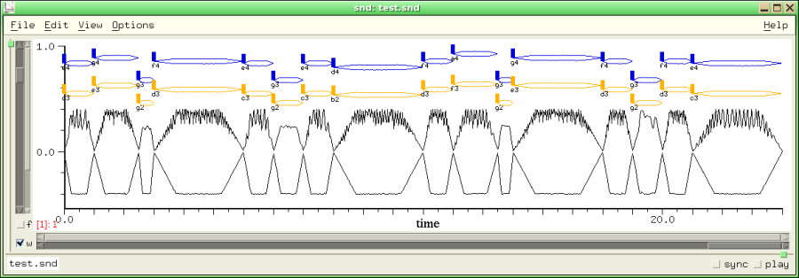
But note names are a bother to read; musglyphs.scm has code to display notes using CMN glyphs. Here we use the draw-mix-hook to display our notes as a score:
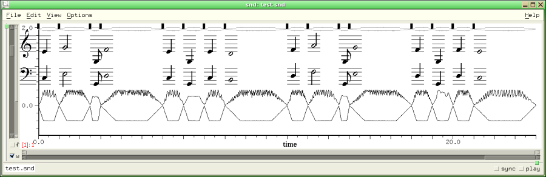In more complex cases, using a mix per note fills the screen with mix tags; it's probably cleaner to use multiple output files, collecting related notes in one file, then mixing these at the end:
;; open two output files, one for the violin notes, the other for the cellos
;; then mix them into "test.snd"
(let ((violins (make-sample->file "violins.snd" 1 mus-lfloat mus-next))
(cellos (make-sample->file "cellos.snd" 1 mus-lfloat mus-next)))
(define (violin beg dur freq amp)
(with-temp-sound (:continue-old-file #t :output "violins.snd")
(fm-violin beg dur (->frequency freq #t) amp)))
(define (cello beg dur freq amp)
(with-temp-sound (:continue-old-file #t :output "cellos.snd")
(fm-violin beg dur (->frequency freq #t) amp :fm-index 1.5)))
(violin 0 1 'e4 .2) (violin 1 1.5 'g4 .2) (violin 2.5 .5 'g3 .2)
(cello 0 1 'c3 .2) (cello 1 1.5 'e3 .2) (cello 2.5 .5 'g2 .2)
;; etc
(new-sound "test.snd" :channels 1) ; our overall output file
(mix "violins.snd")
(mix "cellos.snd")
(mus-close violins)
(mus-close cellos))
See also with-mixed-sound in ws.scm.
mix-position mix
mix-position is the current starting position (a sample number) of 'mix'. To move mix mx so that it starts at sample 200 in the output:
(set! (mix-position mx) 200)
mix-properties mix
mix-properties is a property list associated with a mix. mix-property reads and writes this list.
mix-property key mix
mix-property associates a property with a mix.
> (set! (mix-property :info mx) "this is a mix") "this is a mix" > (mix-property :info mx) "this is a mix"
mix-region samp reg snd chn reg-chan
mix-region mixes region 'reg's' channel 'reg-chan' into the given channel starting at sample 'samp' ('samp' defaults to the cursor sample). It returns a list of the new mixes.
mix-selection beg snd chn selection-chan
mix-selection mixes the current selection's channel 'selection-cha' into the given channel starting at 'beg', returning a list of the new mixes. The Edit:Mix selection menu choice is essentially (mix-selection (cursor)).
mix-speed mix
mix-speed is the speed (resampling ratio) of 'mix'; 1.0 (the default) means no resampling takes place; 2.0 causes the mix data to be read twice as fast.
mix-sync mix
mix-sync is an integer, like sync that you can use to group mixes. See mix.scm for many examples. Mix objects that share a non-zero sync value drag together, and are edited together in the mix dialog.
mix-sync-max
This is the maximum mix sync value seen so far.
mix-tag-height
This is the mix tag height (the vertical extent of the tag rectangle) in pixels (the default is 14).
mix-tag-width
This is the mix tag width in pixels (the default is 6).
mix-tag-y mix
This is the mix tag y (vertical) offset; 0 (the default) is the top of the graph, so higher tag-y values position the tag lower in the graph. For example, if you know the frequency of the mix sound, you can reflect that in the tag height with:
(set! (mix-tag-y mix-id) (round (* 100 (- 1.0 (/ (log (/ freq 40.0)) (log 2.0) 7)))))
See, for example, check-mix-tags in sndscm.html.
mix-float-vector v beg snd chn with-mix-tags origin
mix-float-vector is one of the basic mixing functions. It mixes the contents of 'v' into the given channel starting at sample 'beg'. If 'with-mix-tags' is #f (the default is #t), the data is mixed without creating any mix tags. mix-float-vector returns the id of the new mix, or -1 (a simple mix, no tag).
mix-waveform-height
This is the maximum height in pixels of mix waveforms. The default is 20 (see show-mix-waveforms).
mix? obj
mix? returns #t if 'obj' is a mix object and it is accessible in a channel's edit list.
save-mix mix filename
save-mix saves a given mix's data in the file 'filename'.
with-mix-tags
If with-mix-tags is #f (the default is #t), newly mixed data does not have a mix id or tag associated with it.
| Mixing |
|---|
mix sound file: mix or drag-and-drop it where you want it mixed |
A region is a saved portion of sound data. Use the View:Region browser to inspect, edit, and save regions. As regions are defined, the new ones are pushed on a stack, and if enough regions already exist, old ones are pushed off (and deleted) to make room.
forget-region reg
forget-region deletes region 'reg', removing it from the region stack. This does not affect any of the active sounds; it just tells Snd that you no longer need any access to one of the current regions. To delete all regions,
(for-each forget-region (regions))
I called this forget-region because delete-region seemed ambiguous, especially given delete-selection.
insert-region reg beg snd chn
insert-region inserts region 'reg' at sample 'beg' in the given channel. The following function uses insert-region (and other region functions) to rotate the samples in a channel:
(define* (rotate-channel (samps 1) snd chn)
(let ((ind (or snd (selected-sound) (car (sounds))))
(chan (or chn (selected-channel) 0)))
(let ((reg (make-region 0 (- samps 1) ind chan)))
(as-one-edit
(lambda ()
(delete-samples 0 samps ind chan)
(insert-region reg (framples ind chan))))
(forget-region reg))))
integer->region i
In olden times, a region was handled in Snd code as an integer; nowadays, it's an object. This function, and its companion region->integer, exist mainly to convert old code to the current style.
make-region beg end snd chn
make-region creates a new region spanning the samples 'beg' to 'end' in the given channel. It returns the new region. If no arguments are given, the current selection is used. If 'chn' is #t, all chans are included, taking the sync fields into account.
make-region-sampler reg start chn (dir 1)
This creates a sampler reading the region's channel 'chn' starting at sample 'start' within that region. 'dir' can be 1 (read forwards) or -1 (read backwards).
mix-region reg samp snd chn
mix-region mixes region 'reg' into the given channel starting at sample 'samp' (defaulting to the cursor location). It returns a list of mixes, one for each channel mixed.
region-chans reg
This returns the number of channels in the region 'reg'.
region-framples reg (chan 0)
region-framples returns the number of framples in the region 'reg'.
> (make-region 100 200) #<region 1> > (region-framples (integer->region 1)) 101
region-graph-style
region-graph-style is the graph drawing choice for the region dialog's graph. The choices are:
graph-lines graph-dots graph-filled graph-lollipops graph-dots-and-lines
graph-lines is the default.
region-home reg
This returns a list with the name of the source file for the given region, its start time in the original data, and its length in framples.
region->integer region
This is the counterpart to integer->region.
region-maxamp reg
region-maxamp is the peak amplitude of the samples in the region 'reg'.
> (region-maxamp (integer->region 1)) 4.8828125e-4
region-maxamp-position reg
region-maxamp-position returns the location (a sample number) of the peak amplitude of the region 'reg'.
region-position reg chan
region-position returns the begin time of the region's channel 'chan' in the original sound.
> (make-region 1000 2000) 2 > (region-position (integer->region 2)) 1000
region-sample reg samp chan
region-sample returns the value of the sample 'samp' in channel 'chan' of the region 'reg'.
region->float-vector reg samp samps chan v
region->float-vector returns a float-vector containing 'samps' samples starting at 'samp' in channel 'chan' of the region 'reg'. If 'v' (a float-vector) is provided, it is filled, rather than creating a new one.
(define (region-rms n)
(let* ((data (region->float-vector (integer->region 0) 0 #f n))
(len (length data)))
(sqrt (/ (dot-product data data len) len))))
region-srate reg
region-srate returns the sampling rate of the data that makes up the region 'reg'.
regions
regions returns a list of active regions. The most recently created region is (car (regions)). (map region-framples (regions)) returns a list of region lengths. The maximum length of this list is set by max-regions.
region? reg
region? returns #t if the region 'reg' exists. There is a limit to how many regions Snd tries to keep track of (max-regions); when necessary, the least-recently created region is deleted.
save-region reg :file :sample-type :header-type :comment
save-region saves the region 'reg' in 'file' in the given sample type and header type. It returns the output filename. The following calls are equivalent:
(save-region reg "reg0.snd") (save-region reg :file "reg0.snd" :header-type mus-next) (save-region reg "reg0.snd" mus-bfloat mus-next "a comment") (save-region reg :file "reg0.snd" :comment "a comment" :sample-type mus-bfloat)
| Regions |
|---|
Max length of region list: max-regions |
convolve-selection-with file amp
convolve-selection-with convolves the current selection with 'file', replacing the selection with the result. 'amp' sets the maxamp of the result.
delete-selection
delete-selection deletes the selection, equivalent to the Edit:Delete selection menu choice.
delete-selection-and-smooth
delete-selection-and-smooth deletes the selection, then tries to make the splice smooth.
env-selection envelope env-base
env-selection applies 'envelope' to the selection. (as an amplitude envelope). 'envelope' can also be a CLM env generator; in this case, 'env-base' is ignored. These are equivalent:
(env-selection '(0 0 1 1 2 0)) (env-selection (make-env '(0 0 1 1 2 0) :length (selection-framples)))
filter-selection env order truncate
filter-selection applies an FIR filter of order 'order' and frequency response 'env' to the selection. 'env' can be the filter coefficients themselves in a float-vector with at least 'order' elements, or a CLM filtering generator (see filter-sound). If 'truncate' is #t (the default), the filter output is truncated at the selection end. If 'truncate' is #f, the extra output ('order' samples worth) is mixed into the stuff following the selection.
insert-selection beg snd chn
insert-selection inserts a copy of the selection starting at 'beg' in the given channel (that is, it pastes in the selection as a block). The Edit:Insert selection menu choice is essentially (insert-selection (cursor)).
mix-selection beg snd chn selection-channel
mix-selection mixes (adds) a copy of the selection starting at 'beg' in the given channel, and returns a list of the new mixes. The Edit:Mix selection menu choice is (mix-selection (cursor)).
reverse-selection
reverse-selection reverses the selection.
save-selection :file :srate :sample-type (:header-type mus-next) :comment :channel
save-selection saves the selection in 'file'. If 'channel' is given, it saves only that channel.
(define brksnd
(let ((+documentation+ "(brksnd dur base) divides the current sound into dur-sized pieces,
saving them in files named 'base'.n: (brksnd 1.0 \"sec\")"))
(lambda (dur base)
(let ((hop (floor (* (srate) dur)))
(len (framples)))
(let-temporarily (((sync) 1)) ; save all chans
(do ((i 0 (+ i hop))
(j 0 (+ j 1)))
((>= i len))
(make-selection i (+ i hop)) ; in extensions.scm
(save-selection (string-append base "." (number->string j)))))))))
(define* (extract-channels :rest chans)
;; extract a list of channels from the current sound and save as test.snd: (extract-channels 0 2)
(let ((snd (or (selected-sound) (car (sounds)))))
(if (sound? snd)
(begin
(for-each
(lambda (chan)
(set! (selection-member? snd chan) #t)
(set! (selection-position snd chan) 0)
(set! (selection-framples snd chan) (framples snd chan)))
chans)
(save-selection "test.snd")))))
scale-selection-by scalers
scale-selection-by scales (multiplies) the selection by 'scalers' which can be either a float, a list of floats, or a float-vector. In a multichannel selection, each member of the float-vector or list is applied to the next channel in the selection. (scale-selection-by '(0.0 2.0)) scales the first channel by 0.0, the second (if any) by 2.0. (scale-selection-by 2.0) scales all channels by 2.0. Normally the order of channels follows the order of the sounds.
scale-selection-to norms
scale-selection-to normalizes the selection to peak amplitude 'norms' which can be either a float, a list of floats, or a float-vector.
select-all snd chn
This function selects all samples in the given channel. If a region is created, it returns the new region.
selection
selection returns an object representing the current selection, or #f if there is no active selection. The object can be passed to the generic functions to refer to the current selection:
> (define selobj (selection)) selobj > selobj #<selection 1> > (selection-chans) 1 > (channels selobj) 1
selection-chans
selection-chans returns the number of channels in the current selection.
selection-framples snd chn
selection-framples returns the number of framples in the current selection (its length in samples). You can set this to move the selection end point:
> (select-all) ; grab all of current channel #<region 1> > (selection-framples) 55240 > (set! (selection-framples) 10000) ; unselect all but the starting 10000 10000 > (selection-framples) 10000 > (set! (selection-framples) (* 2 (selection-framples))) ; double the selection length 20000
See also make-selection.
selection-maxamp snd chn
selection-maxamp returns the peak amplitude of the selection in the given channel. If no arguments are passed, selection-maxamp returns the overall selection maxamp. I use this to provide a view of the selection amplitude envelope in the envelope editor. If you select 'selection' and 'wave' in that dialog, it displays a copy of whatever is in the main channel graph, so to get a display that makes it easy to "connect the dots", I use C-x m:
(bind-key #\m 0
(lambda ()
(set! (y-bounds (selected-sound) (selected-channel)) (list 0 (selection-maxamp))))
#t)
(bind-key #\m 4
(lambda ()
(set! (y-bounds (selected-sound) (selected-channel)) (list -1.0 1.0)))
#t)
The second key binding (C-x C-m), undoes the previous C-x m. Another useful key binding in this regard is C-x v, the built-in command to fill the current window with the selection.
selection-maxamp-position snd chn
selection-maxamp-position returns the location (a sample number) of the peak amplitude of the selection in the given channel.
selection-member? snd chn
selection-member? returns #t if the given channel has data that is currently selected. This is mostly useful when adding a channel to the current selection; see make-selection in extensions.scm. If 'snd' is #t and the new value is #f, the entire selection is deactivated.
(set! (selection-member? #t) #f)
i.e. equivalent to unselect-all.
selection->mix
selection->mix turns the current selection into a mix, or into several sync'd mixes if the selection has more than one channel.
selection-position snd chn
selection-position is the sample where selection begins. You can set this to move the selection's starting point to some arbitrary sample. If changed, the selection end point stays the same, while the length (selection-framples) changes to reflect the moved origin. See make-selection in extensions.scm.
selection-srate
This function returns the selection srate. There's some arbitrariness in this if the sounds that make up the selection have different sampling rates.
selection? obj
selection? returns #t if there is a selection. If some 'obj' is passed, selection? returns #t is obj is a selection object, and there is a selection.
> (select-all) #<region 2> > (selection?) #t > (set! (selection-member? #t) #f) #f > (selection?) #f
show-selection
show-selection finds the bounds of the current selection (in all channels), and sets the time domain view to show it.
smooth-selection
smooth-selection applies a smoothing function to the selection, producing a sinusoid between the selection end points. In normal use, you'd bind this function to some key, select a portion (say a few samples) of a sound around a click, then smooth it by typing that key.
src-selection num-or-env base
src-selection applies sampling rate conversion to the selection; this is the same as src-sound but as applied to the selection.
unselect-all
If there is currently a selection, this deactivates (unselects) it.
| Selections |
|---|
show the current selection: show-selection |
The selected portion can be chosen, independent of any region, by setting selection-position and selection-framples. It's easy to extend the notion of a selection to an arbitrary list of sound portions:
(define (make-section . members) ;; each member is '(beg dur snd chn) (cons 'Section members)) (define (section-for-each func section) ;; call func on each member of the section (as-one-edit (lambda () (for-each func (cdr section))))) ;; an example that scales each member of the section by .5 (section-for-each (lambda (sect) (apply scale-channel (cons .5 sect))) (make-section (list 0 10000 0 0) (list 30000 10000 0 0)))
This is the heart of Snd; we've waded through all the ancillary junk, and we've finally reached the functions that actually edit sounds! Most of these functions take both a sound and a channel number. When the function refers to a variable that can be set locally on a sound (zero-pad, for example), the 'snd' and 'chn' arguments can be #t, referring to all current sounds or all channels of a sound. In cases where it makes sense, if the 'snd' argument is omitted, the reference is to the global default value. So, (set! (amp-control-bounds) '(0.0 2.0)) sets the global amp control (slider) bounds to be between 0.0 and 2.0, whereas (set! (amp-control-bounds snd) '(0.0 2.0)) sets it only for the sound referred to by 'snd'.
Many of the procedures also have an 'edpos' argument (standing for "edit position"). It always defaults to the current edit history position. If specified, it can be either an edit history position (to which the operation is applied), or the constant current-edit-position.
For not-very-good historical reasons (it took me awhile to decide how to organize things), some of the procedures here are unnecessarily inconsistent in what arguments they accept, whether a channel of #t signals application to all channels or just the selected one, whether the sync field is followed, and so on. Rather than make a bunch of backwards incompatible changes, I decided to add a bunch of more-or-less synonymous functions that regularize these calls. The replacements always take arguments in the order begin time, duration (not end sample), sound, channel number, and edit position, possibly preceded by one argument, and sometimes followed by an edit history name or 'ring time' (overlap). The sync field is ignored, an unspecified sound argument applies only to the current sound, and an unspecified channel argument applies only to the current channel. The following substitutions can be made:
convolve-with file amp s c e clm-channel convolve-gen beg dur s c e env-sound env beg dur base s c e env-channel env beg dur s c e filter-sound env order s c e filter-channel env order beg dur s c e trunc insert-silence beg dur s c pad-channel beg dur s c e insert-sound file beg filechn s c e insert-channel filedat beg dur s c e mix file beg filechn s c with-tags mix-channel filedat beg dur s c e redo edits s c redo-channel edits s c reverse-sound s c e reverse-channel beg dur s c e scale-by scls s c scale-channel scl beg dur s c e scale-to scls s c normalize-channel norm beg dur s c e set-samples beg dur data s c trunc origin fchan float-vector->channel v beg dur s c e smooth-sound beg dur s c smooth-channel beg dur s c e src-sound num base s c e src-channel ratio-or-env beg dur s c e undo edits s c undo-channel edits s c apply-ladspa reader dat dur origin snd chn ladspa-channel dat beg dur s c e
Another case that might deserve "regularization" is make-sampler which confusingly interpolates the direction argument between the channel and edit-position:
(define* (read-channel (beg 0) snd chn edpos (direction 1)) (make-sampler beg snd chn direction edpos))
The edit position argument can cause ambiguity in a few cases. What should Snd do with: (pad-channel 100 0 snd chn 2)? It currently treats any 0-length operation as a no-op, so the edit history is not changed by this function call. However, in a similar situation (where the current edit counter is greater than 2, so this code is reaching back into the edit history list): (scale-channel 1.0 0 #f snd chn 2) Snd essentially copies the state of the channel at that edit position, and puts it in the current edit position. There's never any good reason to do this, so if it looks like a no-op, do it a different way.
add-player player start end edpos stop-proc out-chan
add-player adds 'player' to the play-list (see make-player). If 'edpos' is given, play at that edit position. 'stop-proc' can be a procedure of one argument; it is called when the play process stops and passed the reason the play is stopping; it will be 0 if the play completed normally (the other possibilities are listed here, but they really aren't interesting). The 'out-chan' argument is the audio output channel to send the data to; it defaults to the channel number of the player's channel in the containing sound (that is, the default is to send channel 1 data to channel 1 of the DAC, and so on). See play-with-envs in enved.scm, play-syncd-marks in marks.scm, or start-dac in play.scm.
axis-info snd chn grf
axis-info returns a list describing the specified axis:
(list left-sample right-sample
x0 y0 x1 y1 x-min y-min x-max y-max
x0-position y0-position x1-position y1-position y-offset
xlabel ylabel new-peaks)
This can be useful if you're drawing arbitrary figures in a graph. 'grf' defaults to time-graph; the other choices are transform-graph and lisp-graph. 'x0' is the time in seconds corresponding to the left-sample (the left edge of the graph). Similarly 'y0' is the lower y axis limit as a sample value (i.e. -1.0). 'x-max' is the sound's duration in seconds ('x-min' is always 0.0). The "positions" are pixel values, in drawing area coordinates; these give the position of the graph in the drawing area. 'y-offset' refers to "united" graphs where several channels share one drawing area. You can use it to translate mouse coordinates to channel number in that situation. For example, x->position could be:
(define (x->position-1 x snd chn)
(let* ((axinfo (axis-info snd chn time-graph))
(x0 (axinfo 2))
(x1 (axinfo 4))
(axis-left (axinfo 10))
(axis-right (axinfo 12)))
(floor
(+ axis-left
(* (- x x0)
(/ (- axis-right axis-left)
(- x1 x0)))))))
Here's a key binding that uses axis-info to save every channel's graph position upon "Page Down", then restore that state upon "Page Up":
(bind-key "Page_Down" 0 (lambda () (let ((last-page-state (map (lambda (snd) (let ((data (list snd (file-name snd)))) (do ((i 0 (+ i 1))) ((= i (channels snd)) data) (set! data (append data (list (cons i (axis-info snd i)))))))) (sounds)))) (bind-key "Page_Up" 0 (lambda () (for-each (lambda (lst) (let ((snd (lst 0)) (name (lst 1))) (if (and (sound? snd) (string=? (file-name snd) name)) (for-each (lambda (chan-data) (let ((chn (chan-data 0)) (x0 (chan-data 3)) (x1 (chan-data 5)) (y0 (chan-data 4)) (y1 (chan-data 6))) (set! (x-bounds snd chn) (list x0 x1)) (set! (y-bounds snd chn) (list y0 y1)))) (cddr lst))))) last-page-state))))))
beats-per-measure snd chn
The x axis labelling of the time domain waveform can be in measures (x-axis-style = x-axis-in-measures); this variable sets the number of beats per measure. The default is 4.
beats-per-minute snd chn
The x axis labelling of the time domain waveform can be in beats (x-axis-style = x-axis-in-beats) or in measures (x-axis-in-measures); this variable sets the number of beats per minute. The default is 60.0, making it the same as x-axis-in-seconds. See snap-mark-to-beat, or snap-mix-to-beat.
channel-amp-envs file chan size peak-file-func work-proc-func
channel-amp-envs returns two float-vectors of length 'size' containing the peak-amp envelopes of the channel 'chan' of file 'file'. 'peak-file-func' (if any) is used to get the name of the associated peak-env file if the file is very large. 'work-proc-func' is called when the amp envs are ready if the amp envs are gathered in the background. If 'file' is a sound, 'size' is an edit-position, and the current amp envs (if any) are returned. The arguments to 'peak-file-func' are the file and the channel. If it returns a string, that is treated as the filename to read to get the peak info. The arguments to 'work-proc-func' are the filename, the channel and the current peak. make-sound-icon in make-sound-box in snd-motif.scm uses this function to draw the little thumbnail graph for each sound icon.
channel-data snd chn
channel-data provides very low-level access to the data currently in the given channel's sample buffers. It is used by the variable-display mechanism to show graphs of variable values (normally in an instrument). channel-data only works with sounds returned by make-variable-display, and only in a float-sample version of Snd (i.e. not one that was built with the configure argument --without-float-samples). See make-variable-display in snd-motif.scm.
channel-properties snd chn
channel-properties is a property list associated with a channel. It is set to () at the time a sound is opened, so it provides a relatively simple way to save data about a channel which will automatically be erased when the channel is closed. channel-property reads and writes this list.
Traditionally in Lisp, a property list has been treated as an association list. This is a list of pairs (made by cons), each inner pair having a key as its first element, and the associated value as the second element. The function assoc can be used to search the list for a given key's value; a new key-value pair can be added with:
(cons (cons key value) a-list)
In Common Lisp, property lists have other properties, so to speak, but channel-properties (and sound-properties) can be handled in any way you like. See channel-sync in extensions.scm for a brief example; more elaborate examples are in enved.scm (enved-envelope), or draw.scm (colored-samples and insert-envelope).
channel-property key snd chn
channel-property returns the value associated with 'key' in the given channel's property list. To add or change a property, use set! with this procedure.
Scheme: > (set! (channel-property 'info 0 0) "this is sound 0, first channel") "this is sound 0, first channel" > (channel-property 'info 0 0) "this is sound 0, first channel" Ruby: >set_channel_property(:info, "this is info", 0, 0) this is info >channel_property(:info, 0, 0) this is info Forth: >'info "this is info" 0 0 set-channel-property '( '( 'info . this is info ) ) >'info 0 0 channel-property this is info
The property list is convenient because the associated information goes away automatically when the channel is closed, and the property lists are saved by save-state.
channel-style snd
channel-style reflects the value of the 'unite' button in multichannel files. Possible values are channels-separate, channels-combined (the default), and channels-superimposed. The following code sets the 'unite' button if the current sound has more than 4 channels:
(hook-push after-open-hook
(lambda (hook)
(if (> (channels (hook 'snd)) 4)
(set! (channel-style (hook 'snd)) channels-combined))))
channel->float-vector beg dur snd chn edpos
channel->float-vector returns a float-vector with the specified data. In Ruby, the "->" in a function name is translated to "2", so the function call is:
v = channel2vct(0, 100)
(define* (selection->float-vector snd chn)
(cond ((selection-member? snd chn)
(channel->float-vector (selection-position snd chn) (selection-framples snd chn) snd chn))
((selection?)
(error 'no-such-channel
(list "selection->float-vector"
(format #f "snd ~A channel ~D is not a member of the selection" snd chn))))
(else
(error 'no-active-selection (list "selection->float-vector")))))
See also mark-explode in marks.scm.
channels snd chans snd
This function returns the number of channels in 'snd'. It can be set, but the result is a new version of the underlying sound with the header changed to reflect the new number of channels. That is, no new data is created, but the existing data is reapportioned to the new channels: (set! (channels) 2); this is not undo-able (except by calling it again with the original number of channels — the data is not touched).
clm-channel clm-gen beg dur snd chn edpos overlap origin
clm-channel applies 'clm-gen' to the given channel starting at sample 'beg' for 'dur' samples, and 'overlap' samples of 'ring time'. This is used by some of the regularized functions, but it can also be used directly:
(define* (convolve-channel kernel nbeg ndur nsnd nchn nedpos)
(let* ((beg (or nbeg 0))
(snd (or nsnd (selected-sound) (car (sounds))))
(chn (or nchn (selected-channel)))
(dur (or ndur (- (framples snd chn) beg)))
(edpos (or nedpos current-edit-position))
(reader (make-sampler beg snd chn 1 edpos))
(cgen (make-convolve :filter kernel
:input (lambda (dir)
(read-sample reader)))))
(clm-channel cgen beg dur snd chn edpos)
(free-sampler reader)))
(define (difference) (clm-channel (make-two-zero 1 -1)))
(define (wobble) (clm-channel (make-ncos 50 3)))
(define (hold-nose) (clm-channel (make-ncos 1 3)))
(define (bad-reception) (clm-channel (make-ncos 10 5)))
close-sound snd
This closes 'snd' (the same as the File:Close menu item). To close all sounds:
(close-sound #t) ;; equivalent to: (for-each close-sound (sounds))
Before the sound is actually closed, before-close-hook is called, then close-hook, then the sound is closed.
comment snd
This returns the sound's comment, if any; when a sound is opened, the comment is taken from the file's header (the same as mus-sound-comment). If you set it, the header is not updated until the sound is saved. If the new comment is the only change you want to make, you can save the new header via the Edit:Edit Header menu option.
convolve-with file amp snd chn edpos
This convolves the given channel (or the currently sync'd data) with the data in the sound file 'file'. 'amp' is the resultant peak amplitude (leave 'amp' unset, or set it to #f to get the unnormalized result). Convolve-with in conjunction with mix can provide high-quality reverb:
(define conrev
(lambda (impulse amp)
(convolve-with impulse amp)
(save-sound-as "reverb.snd") ;let mix scalers set reverb amount
(revert-sound)
(mix "reverb.snd")))
count-matches proc sample snd chn edpos
count-matches returns how many samples satisfy the function 'proc'; 'proc' should take one argument (the current sample value), and return #t for a hit. 'sample' determines where to start the search.
Scheme: (count-matches (lambda (y) (> y .1)))
Ruby: count_matches(lambda do |y| y > 0.1 end)
Forth: lambda: <{ y }> y 0.1 f- f0< ; count-matches
count-matches is obsolete; use a do loop and a sampler:
(define* (count-matches func (beg 0) snd chn edpos)
(let ((end (framples snd chn edpos))
(matches 0)
(reader (make-sampler beg snd chn 1 edpos)))
(do ((i beg (+ i 1)))
((= i end) matches)
(if (func (next-sample reader))
(set! matches (+ matches 1))))))
cursor snd chn edpos
This returns the cursor location (as a sample number; the first sample is numbered 0) in channel 'chn' of 'snd'.
(set! (cursor) 100) moves the cursor to sample 100. The cursor is somewhat similar to a
mark in that it moves if you delete or insert samples in front of it. To turn the cursor off, set
it to some negative number.
| Cursor |
|---|
Tracking cursor: with-tracking-cursor |
cursor-position snd chn
This gives the current cursor position as a list (x y). These graph-relative values can be turned into axis-relative values with position->x and position->y:
(position->x (car (cursor-position))) ;; equals: (/ (cursor) (srate))
cursor-size snd chn
This gives the cursor size in pixels; it defaults to 15. (set! (cursor-size) 30) makes the cursor twice as big as usual.
cursor-style snd chn
The cursor style is cursor-cross, cursor-line, or a cursor-drawing function. The default cursor shape is a "+" sign; the cursor-line is a vertical line. As a function, cursor-style is a procedure of three arguments, the sound, channel number, and a boolean that is true if the cursor is currently tracking playback (a "tracking-cursor"). The procedure should draw the cursor at the current cursor position using the cursor-context. Here is a simpler one that replaces the normal "+" cursor with an "x":
(define (x-cursor snd chn ax)
(let* ((point (cursor-position))
(x (car point))
(y (cadr point))
(size (cursor-size))
(cr (make-cairo (car (channel-widgets snd chn))))) ; needed in Gtk, ignored in Motif
(draw-line (- x size) (- y size) (+ x size) (+ y size) snd chn cursor-context cr)
(draw-line (- x size) (+ y size) (+ x size) (- y size) snd chn cursor-context cr)
(free-cairo cr)))
(set! (cursor-style) x-cursor)
data-location snd
This gives the location (in bytes) of the sound samples in the file represented by 'snd'. In a raw (headerless) file, this is 0, but normally the data comes after some portion of the header. To get the data-location of some sound file, use mus-sound-data-location. If you set this field (you don't want to do this — it is a law of nature that you will forget the original setting!), the underlying file is immediately rewritten.
data-size snd
This gives the size (in bytes) of the sound data in the file represented by 'snd'. If you set this field, the underlying file is immediately rewritten (the header is changed; I don't think the file is truncated, but no matter what happens, it is not my fault). Next/Sun files treat the size field as purely "advisory", so an incorrect data size is often ignored in that case.
delete-sample samp snd chn edpos
This deletes sample 'samp' in the given channel.
| Deletions |
|---|
delete a file: in scheme delete-file or Ruby's File.delete |
delete-samples samp samps snd chn edpos
This deletes a block of samples. The deleted portion starts at sample 'samp' and runs for 'samps' samples.
delete-samples-and-smooth samp samps snd chn edpos
This deletes a block of samples, then tries to smooth over the splice. The deleted portion starts at sample 'samp' and runs for 'samps' samples.
dot-size snd chn
This gives the size in pixels of dots when graphing with dots (default: 1); this affects graph-styles such as graph-lollipops. See graph-hook or auto-dot in examp.scm.
env-channel clm-env-gen beg dur snd chn edpos
env-channel is the regularized version of env-sound. 'clm-env-gen'
can be either a CLM envelope generator or an envelope (a list of breakpoints). (env-channel '(0 0 1 1 2 0)).
To get .1 seconds of attack and decay:
(let ((dur (/ (framples) (srate)))) (env-channel (list 0 0 .1 1 (- dur .1) 1 dur 0)))
An envelope in Snd is a list of breakpoints. It can be packaged as a CLM generator (an 'env') via make-env. It can be declared via define just like any other variable, or with define-envelope.
| Envelopes |
|---|
envelope sound: env-channel, env-sound |
env-channel-with-base envelope-or-env-gen base beg dur snd chn edpos
env-channel-with-base is a slight variation on env-channel. There are times when it's a bother to call make-env just to get an exponential envelope.
env-sound envelope samp samps env-base snd chn edpos
env-sound applies the amplitude 'envelope' to the given channel starting at sample 'samp' for 'samps' samples with connecting segments based on 'env-base'. 'env-base' defaults to 1.0. 'samp' defaults to 0. 'samps' defaults to the full duration. 'envelope' is a list containing the breakpoint values (as in CLM) or an env generator.
| 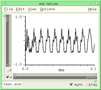 | 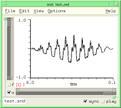 |
Scheme: (env-sound '(0 0 1 1 2 0)) Ruby: env_sound([0.0, 0.0, 1.0, 1.0, 2.0, 0.0]) Forth: '( 0.0 0.0 1.0 1.0 2.0 0.0 ) env-sound | |
As mentioned in sndclm.html, 'env-base' determines how the break-points are connected. If it is 1.0 (the default), you get straight line segments. 'env-base' = 0.0 gives a step function (the envelope changes its value suddenly to the new one without any interpolation). Any other positive value becomes the exponent of the exponential curve connecting the points. 'env-base' < 1.0 gives convex curves (i.e. bowed out), and 'env-base' > 1.0 gives concave curves (i.e. sagging). If you'd rather think in terms of e^-kt, set 'env-base' to (exp k). See env.lisp for a CLM instrument that shows the relation between the connecting curve's exponent and 'env-base'. Here's a brief restatement:
(define (compare-exp k)
(let ((e (make-env (list 0 1 1 (exp (- k))) :base (exp k) :length 11)))
(do ((i 0 (+ 1 i )))
((= i 10))
(snd-print (format #f "~A ~A~%" (env e) (exp (* (- k) (/ i 10.0))))))))
If 'envelope' is a CLM env generator, 'env-base' is ignored.
fft-log-frequency snd chn
This returns whether the spectrum frequency axis is logarithmic (#t) or linear (#f, the default). If logarithmic, the lower end is set by log-freq-start which defaults to 32Hz.
fft-log-magnitude snd chn
This returns whether the spectrum magnitude axis is in decibels (#t) or linear (#f, the default). If in decibels, the minimum displayed is set by min-dB which defaults to -60.
fft-window snd chn
This sets the choice of fft data window (default: blackman2-window)
bartlett-hann-window bartlett-window blackman2-window blackman3-window blackman4-window bohman-window cauchy-window connes-window dolph-chebyshev-window exponential-window flat-top-window gaussian-window hamming-window hann-poisson-window hann-window kaiser-window parzen-window poisson-window rectangular-window riemann-window samaraki-window tukey-window ultraspherical-window welch-window blackman5-window blackman6-window blackman7-window blackman8-window blackman9-window blackman10-window rv2-window rv3-window rv4-window mlt-sine-window papoulis-window dpss-window sinc-window
The Hann window is sometimes called Hanning in the DSP literature, apparently as an in-joke. For an extensive discussion of these windows, see Fredric J. Harris, "On the Use of Windows for Harmonic Analysis with the Discrete Fourier Transform", Proceedings of the IEEE, Vol. 66, No. 1, January 1978, with updates from: Albert H. Nuttall, "Some Windows with Very Good Sidelobe Behaviour", IEEE Transactions of Acoustics, Speech, and Signal Processing, Vol. ASSP-29, 1, February 1981, and of course, Julius Smith's DSP web site.
fft-window-alpha snd chn
The ultraspherical window has two "family" parameters; the one named "mu" is called "beta" here, to parallel its use in related windows; the other one, named "xmu" is named "alpha" here, for no good reason. fft-window-alpha sets the shape of the side lobes; see "Design of Ultraspherical Window Functions with Prescribed Spectral Characteristics", Bergen and Antoniou, EURASIP JASP 2004 (also available on-line) for details.
fft-window-beta snd chn
Some fft windows have a parameter, often named alpha or beta, that chooses one from a family of possible windows. The actual (underlying) beta values are dependent on the window choice, but in Snd, fft-window-beta is scaled to fit the current window's range of values, so its value here should fall between 0.0 and 1.0.
fft-with-phases snd chn
This returns whether the single FFT display includes phase information (the default is #f).
file-name snd
This returns the sound's complete (or "absolute") file name; the directory is included; see short-file-name if you don't want all the directory junk. See examp.scm for many examples.
filter-channel env order beg dur snd chn edpos trunc origin
The regularized version of filter-sound. If the end of the filtered portion is not the end of the sound, the 'trunc' argument determines whether the filtered sound is truncated at that point (the default: #t), or mixed with the overlapping section, similar to the truncate argument to filter-selection. 'env' can be either the frequency response envelope, or a float-vector containing the desired coefficients.
filter-sound env order snd chn edpos origin
filter-sound applies an FIR filter of order 'order' (actually one more than the nominal order) and frequency response 'env' to the given channel. 'env' can also be a float-vector containing the filter coefficients, or any CLM filtering generator (e.g. comb, formant, one-pole, iir-filter, etc). The generator is called in C, not Scheme, so this is the fastest way to apply CLM filtering to a sound. See also clm-channel.
(filter-sound '(0 1 1 0) 1024) ; FIR filter given frequency response (filter-sound (float-vector .1 .2 .3 .3 .2 .1) 6) ; FIR filter given actual coefficients (filter-sound (make-fir-filter 6 (float-vector .1 .2 .3 .3 .2 .1))) ; CLM FIR filter (filter-sound (make-delay 120)) ; CLM delay (same as insert-silence) (filter-sound (make-formant 1200 .99)) ; CLM formant (filter-sound (make-filter 2 (float-vector 1 -1) (float-vector 0 -0.99))) ; remove DC
If you want to use the cascade filter structure, rather than the canonical form of CLM's filter generator:
(define (make-biquad a0 a1 a2 b1 b2) (make-filter 3 (float-vector a0 a1 a2) (float-vector 0.0 b1 b2)))
If you have coefficients for the cascade form, but have no scruples about using some other form, see cascade->canonical in dsp.scm, and the examples that follow.
| Filters |
|---|
filter a sound: filter-sound, filter-channel, and clm-channel |
| Searches |
|---|
find a mark: find-mark |
find-sound filename nth
find-sound returns the sound object of 'filename' or #f if no sound is found that matches 'filename'. If there is (or might be) more than one file open with the given filename, the 'nth' parameter (which defaults to 0) chooses which to return. Leaving aside the 'nth' parameter, find-sound could be defined as:
(define (find-sound name)
(call-with-current-continuation
(lambda (return)
(for-each
(lambda (snd)
(if (or (string=? (short-file-name snd) name)
(string=? (file-name snd) name))
(return snd)))
(sounds))
#f)))
See files-popup-buffer, open-next-file-in-directory, and the "Buffer Menu" code in examp.scm.
finish-progress-report snd chn
This ends an on-going progress report (a visual indication of how far along some time-consuming process is). See progress-report.
framples snd chn edpos
This returns current length in samples of the channel 'chn'. Used with set!, this either truncates the sound or pads it with zeros at the end.
free-player player
free-player frees all resources associated with 'player' and remove it from the play-list.
graph data xlabel x0 x1 y0 y1 snd chn force-display show-axes-choice
This function displays a graph of 'data' in a separate display per channel. The x axis is labelled 'xlabel', the x axis units go from 'x0' to 'x1' (the default is 0.0 to 1.0), the y axis goes from 'y0' to 'y1' (the default fits the data), and the display is associated with channel 'chn' in 'snd'.
(graph (float-vector 0 .1 .2 .3 .4 .3 .2 .1 0) "roof")
The current slider values can be read from x-position-slider, x-zoom-slider, etc. The 'data' argument can be a list of float-vectors; each is graphed at the same time, following the sequence of colors used when channels are superimposed. If 'data' is a list of numbers, it is assumed to be an envelope (a list of breakpoints). If 'force-display' is #f (the default is #t), the graph is not explicitly drawn; this is useful when you're calling graph from the lisp-graph-hook, where the redisplay is automatic. 'show-axes-choice' sets the show-axes choice for the lisp graph.
(define display-energy
;; y-zoom-slider controls the graph amp
(lambda (snd chn)
(let* ((ls (left-sample))
(rs (right-sample))
(datal (make-graph-data snd chn))
(data (if (float-vector? datal) datal (cadr datal)))
(sr (srate snd))
(y-max (y-zoom-slider snd chn)))
(float-vector-multiply! data data)
(graph data "energy" (/ ls sr) (/ rs sr) 0.0 (* y-max y-max) snd chn #f))))
(hook-push lisp-graph-hook (lambda (hook) (display-energy (hook 'snd) (hook 'chn))))
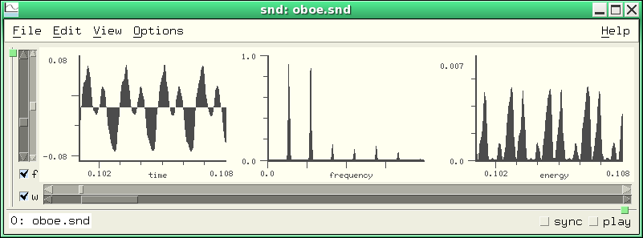
graph-style snd chn
graph-style determines how sound data is displayed (default: graph-lines). The choices are:
graph-lines graph-dots graph-filled graph-lollipops graph-dots-and-lines
In the set! case, if no 'snd' is specified, all graph-styles are set to the new value. If 'snd' is given, the three graph styles for that sound's channels (or channel 'chn') are set. See time-graph-style, lisp-graph-style, and transform-graph-style to override the default for a specific graph.
graphs-horizontal snd chn
This determines whether channel graphs (the time domain, spectrum, and lisp graphs) are arranged vertically or horizontally (the latter is the default).
grid-density snd chn
This controls the spacing of axis ticks; the default is 1.0. If grid-density is less than 1.0, more ticks are squeezed in; if greater than 1.0, fewer ticks are displayed. This mainly affects the grid display (show-grid).
header-type snd
This returns the header type (e.g. mus-aiff) of the file that underlies 'snd'. Snd can read about 60 header types, and write 7 or so. "aiff" and "aifc" come from Apple, "riff" is the Microsoft "wave" header, "rf64" is the European Broadcast Union's 64-bit RIFF replacement, "nist" comes from the NIST-Sphere package, "next" or "sun" is the Next/Sun (".au") header, "ircam" is IRCAM's extension of the Next header, "caf" is Apple's 64-bit AIFC replacement, and "raw" means the sound file has no header. If you change the header type to "raw", any existing header is removed. Each header type has its own peculiarities; if in doubt, use mus-next because it is simple, and can handle any sample type that Snd can write (whereas each of the others is restricted in this regard). The writable header types are mus-next, mus-nist, mus-aiff (obsolete, rarely needed), mus-aifc, mus-riff, mus-rf64, mus-caff, mus-ircam, and mus-raw (no header). For technical descriptions of the headers, see headers.c; for actual sound files, see sf.tar.gz at ccrma-ftp.
To turn a header type number into a string, use mus-header-type-name. To get the header type of some sound file, use mus-sound-header-type. If you set the header-type, the sound file is rewritten with the new header. The default output (new-sound, and save-sound-as) header type is default-output-header-type.
To read or write your own headers (or some header that isn't built-in), I recommend using either open-hook or open-raw-sound-hook: in the latter case, when you open the file with the unsupported header, Snd will throw up its hands and say "maybe it's a raw (headerless) sound"; it will then look at open-raw-sound-hook before trying other fallbacks (such as the Raw File Dialog). See examp.scm or misc.scm (MPEG, OGG, etc).
insert-sample samp value snd chn edpos
This inserts sample 'value' at sample 'samp' in the given channel
| Insertions |
|---|
insert some portion of a channel: insert-channel |
insert-samples samp samps data snd chn edpos auto-delete origin
This inserts 'samps' samples of 'data' (normally a float-vector) starting at sample 'samp' in the given channel. 'data' can be a filename. The regularized version of this is:
(define* (insert-channel data beg dur snd chn edpos) (insert-samples beg dur data snd chn edpos))
To insert a block of samples of a given value: (insert-samples beg dur (make-float-vector dur val)) If 'data' is a file, it is not deleted by Snd unless 'auto-delete' is #t.
insert-silence beg num snd chn
This inserts 'num' zeros at 'beg' in the given channel. pad-channel is the regularized version, with one small change: insert-silence forces 'beg' to be within the current sound, but pad-channel pads out to 'beg' if 'beg' is past the end of the sound. (And, as usual in these cases, insert-silence follows the sync field, whereas pad-channel ignores it).
insert-sound file beg in-chan snd chn edpos auto-delete
This inserts channel 'in-chan' of 'file' at sample 'beg' in the given channel. 'beg' defaults to the cursor position; if 'in-chan' is not given, all channels are inserted. To append one sound to another, padding at the end with some silence:
(define* (append-sound file (silence 1.0)) (insert-sound file (framples)) (insert-silence (framples) (round (* (srate) silence))))
'file' is not deleted by Snd unless 'auto-delete' is #t.
integer->sound i
In olden times, a sound was handled in Snd code as an integer; nowadays, it's an object (although the integer approach still works). This function, and its companion sound->integer, exist mainly to convert old code to the current style.
left-sample snd chn
This returns the position in samples of the left edge of the time domain waveform for the given channel. To get the data currently displayed in the time domain window:
(define (window-samples) (let ((wl (left-sample)) (wr (right-sample))) (samples wl (- (+ wr 1) wl))))
See also move-one-pixel.
| Time Domain Display |
|---|
Built-in keyboard commands: Moving the Window |
lisp-graph? snd chn
lisp-graph? returns #t if the lisp-generated graph is currently displayed ("lisp" here means any extension language). The lisp graph section is also active if there's a drawing function on the lisp-graph-hook.
lisp-graph-style snd chn
This determines how lisp-generated data is displayed. The choices are:
graph-lines graph-dots graph-filled graph-lollipops graph-dots-and-lines
make-player snd chn
This function makes a new player associated with the given channel. A player is a sort of wrapper for a channel of a sound that supports all the control-panel functions. Once created, you can set these fields, then call add-player to add this channel to the list of channels either being played (if a play is in progress) or about to be played. Once some player is in the play-list, you can start the play with start-playing, and stop it prematurely with either stop-player or stop-playing. These functions make it possible to build custom control panels. Here's an example that plays a sound with individual amplitudes for the channels:
(define play-with-amps
(lambda (sound . amps)
(let ((chans (channels sound)))
(do ((chan 0 (+ 1 chan)))
((= chan chans))
(let ((player (make-player sound chan)))
(set! (amp-control player) (amps chan))
(add-player player)))
(start-playing chans (srate sound)))))
(play-with-amps 0 1.0 0.5) ;plays channel 2 of stereo sound at half amplitude
See play-with-envs in enved.scm, play-syncd-marks in marks.scm, start-dac in play.scm, and add-amp-controls in snd-motif.scm.
make-variable-graph container name length srate
make-variable-graph is a part of the variable-display mechanism in snd-motif.scm. It creates the sound/channel pair that displays a graph or spectrum of the arbitrary data accessed via channel-data.
map-channel func beg dur snd chn edpos origin
map-channel is one of the standard ways to change a sound. It applies 'func' to each sample replacing the current value with whatever 'func' returns. As usual, 'beg' defaults to 0, 'dur' defaults to the full length of the sound, 'snd' and 'chn' default to the currently selected sound, and 'edpos' to the current edit history list position. 'origin' is the edit history name of the current operation.
'func', a procedure of one argument (the current sample), can return #f, which means that the data passed in is deleted (replaced by nothing), or a number which replaces the current sample, or #t which halts the mapping operation, leaving trailing samples unaffected, or a float-vector the contents of which are spliced into the edited version, effectively replacing the current sample with any number of samples. This sounds more complicated than it is! Basically, a map-channel function receives each sample and returns either #f (no corresponding output), a number (the new output), or a bunch of numbers. If every value returned for a given channel is #f, the data is not edited. Here we add 0.2 to every sample in a channel:
Scheme:
> (map-channel (lambda (y) (+ y 0.2)))
0
Ruby:
>map_channel(lambda do |y| y + 0.2 end)
-0.0015869140625
Forth:
>lambda: <{ y }> y 0.2 f+ ; map-channel
-0.00158691
In the next sequence, we replace a sound by the difference between successive samples (a high-pass effect), then undo that by adding them back together, then check to see how close our reconstruction is to the original:
> (let ((y0 0.0)) (map-channel (lambda (y) (let ((diff (- y y0))) (set! y0 y) diff)))) 0 > (let ((y0 0.0)) (map-channel (lambda (y) (let ((add (+ y y0))) (set! y0 add) add)))) 0 > (let ((rd (make-sampler 0 0 0 1 0))) (map-channel (lambda (y) (- y (rd))))) 0 ; the sampler is reading the unedited form of the sound > (maxamp) ; i.e. how big is the biggest difference 0.0
(define* (cosine-channel (beg 0) dur snd chn edpos)
(let ((fnc (let* ((samps (or dur (framples snd chn)))
(incr (/ pi samps))
(angle (* -0.5 pi)))
(lambda (y)
(let ((val (* y (cos angle))))
(set! angle (+ angle incr))
val)))))
(map-channel fnc beg dur snd chn edpos)))
Here's a slightly more involved example; we define a function that finds silent portions and replaces them with something:
(define (map-silence in-silence replacement)
(let ((buffer (make-moving-average 128))
(silence (/ in-silence 128)))
(lambda (y)
(if (> (moving-average buffer (* y y)) silence) y replacement))))
(map-channel (map-silence .01 0.0)) ; squelch background noise
(map-channel (map-silence .001 #f)) ; remove silences altogether
Here we're using 'buffer', a CLM moving-average generator, to track the RMS value of the last 128 input samples. When that falls below the argument 'silence', we replace the current sample with 'replacement'. It may be easier in complex cases to use with-sound rather than map-channel. See step-src for example.
It is possible to break out of a map, flushing any edits, via call-with-current-continuation:
(define ctr 0)
(call-with-current-continuation
(lambda (return)
(map-channel (lambda (val)
(set! ctr (+ 1 ctr))
(if (> ctr 100)
(return "quitting!")
val)))))
It is also possible to stop, then continue map-channel:
(define go-on #f)
(map-channel (lambda (y)
(call-with-current-continuation
(lambda (stop)
(if (> y 1.0)
(begin
(set! go-on stop)
(error 'oops)))))
.2))
If this hits a sample > 1.0, it will print 'oops and put the continuation in the variable 'go-on'. (go-on) will continue where you left off. (I'm not sure how far this can be pushed, or whether it's a good idea — you may end up with unclosed files and so on).
If the editing action is not mapping something over the current sound, it is safest to write a temp file with the new data, then pass that to set-samples with the 'trunc' argument set to #t. This way you don't assume the new sound will fit in memory (as in using float-vector->channel for example). Use snd-tempnam to get a temporary filename that reflects the current temp-dir setting. The env-sound-interp function in examp.scm is an example of this.
(define* (map-sound-chans proc (beg 0) dur snd edpos origin)
(do ((i 0 (+ i 1)))
((= i (channels snd)))
(map-channel proc beg dur snd i edpos origin)))
An esoteric aside: map-channel sets up the sampler before calling the procedure, so if that procedure edits the sound itself (independent of map-channel), the result will be all such edits after the current edit, then the map-channel result applied to the original (not the newly edited) data. That is,
(let ((first #t))
(map-channel (lambda (y)
(if first (set! (sample 0) 1.0))
(set! first #f)
(* y 2))))
will return with two edits registered in the edit history list; the map-channel result will be the original data doubled;
the preceding edit in the list will be the (set! (sample 0) 1.0) which the map-channel ignores.
maxamp snd chn edpos
This returns the max amp of the given channel, or the overall maxamp of snd if no channel argument is given. Used with set!, it is equivalent to scale-to.
(define maxamp-all
(let ((+documentation+ "(maxamp-all) returns the current maxamp of all currently open sounds"))
(lambda ()
(apply max (map (lambda (snd) (apply max (maxamp snd #t))) (sounds))))))
| Maxamps |
|---|
Sound file maxamp: mus-sound-maxamp |
maxamp-position snd chn edpos
This gives the location (sample number) of the maximum sample in the given channel.
max-transform-peaks snd chn
This returns the maximum number of transform peaks reported. The default is 100. max-transform-peaks affects both the fft display (if show-transform-peaks) and the peaks function.
min-dB snd chn
This sets the minimum dB value displayed in various graphs (the default is -60.0). Due to problems with arithmetic underflows in sqrt, the spectrum functions set the lowest actual dB value calculated to -140.0 or -180.0 (depending on which function is called and so on).
new-sound :file :channels :srate :sample-type :header-type :comment :size
new-sound creates a new sound named 'file'. The following function opens a new sound named "test.snd", extends it to 'dur' samples, and initializes all samples to 'val':
(define (init-sound val dur)
(let ((ind (new-sound "test.snd" :size dur)))
(map-channel (lambda (y) val))
ind))
If the 'header-type' and other arguments are not specified, they default to the current default-output-header-type and related settings. sample types are (b=big-endian, l=little, u=unsigned):
mus-bshort mus-lshort mus-mulaw mus-alaw mus-byte mus-ubyte mus-bfloat mus-lfloat mus-bint mus-lint mus-b24int mus-l24int mus-bdouble mus-ldouble mus-ubshort mus-ulshort
Header-types are:
mus-next mus-aifc mus-riff mus-rf64 mus-nist mus-raw mus-ircam mus-aiff mus-soundfont mus-bicsf mus-voc mus-svx mus-caff
To be informed whenever a new sound is created, use new-sound-hook (see ws.scm).
normalize-channel norm beg dur snd chn edpos
normalize-channel scales (changes the amplitude) of a sound so that its new peak amplitude is 'norm'. This is the "regularized" form of scale-to. The multichannel version is normalize-sound in extensions.scm.
open-raw-sound :file :channels :srate :sample-type
This opens 'file' as a raw (no header) sound in the layout specified. If the file has a header, it is not ignored (use (set! (sample-type ...)) and friends to get around this). If the header is messed up, you can override its settings by giving the correct values in the call to open-raw-sound.
(define mpg
(let ((+documentation+ "(mpg file tmpname chans) converts file from MPEG-3 to raw 16-bit samples using mpg123"))
(lambda (mpgfile rawfile chans)
(system (format #f "mpg123 -s ~A > ~A" mpgfile rawfile))
(open-raw-sound rawfile 1 44100 (if (little-endian?) mus-lshort mus-bshort)))))
There's a more elaborate version of this function in examp.scm. See also open-raw-sound-hook.
open-sound filename
open-sound opens 'filename' and returns the sound object; this is equivalent to the File:Open option. view-sound opens a sound read-only, or you can set read-only by hand. close-sound closes a file opened by open-sound. There are a variety of hooks that are invoked during the sound opening process: during-open-hook, open-hook, after-open-hook, initial-graph-hook, open-raw-sound-hook. The sequence of actions is:
bad header?: bad-header-hook — can cancel request
no header?: open-raw-sound-hook — can cancel request
file ok:
open-hook — can change filename
file opened (no data read yet)
during-open-hook (can set prescaling etc)
data read, no graphics yet
after-open-hook
initial-graph-hook
There are other ways to get at sound file data: make-sampler can be given a filename, rather than a sound; file->float-vector in examp.scm; and a variety of CLM-based functions such as file->sample and file->array.
pad-channel beg dur snd chn edpos
pad-channel inserts 'dur' zeros at 'beg' in the given channel. This is the regularized version of insert-silence. To set a block of samples to zero, use scale-channel with a scaler of 0.0. To insert a block of arbitrary-valued samples:
(define* (block-channel value (beg 0) dur snd chn edpos) (pad-channel beg dur snd chn edpos) ; insert 'dur' samples (map-channel (lambda (y) value) beg dur snd chn))
pausing
pausing is #t if sound output is currently paused. You can unpause the sound by setting pausing to #f, and pause it by setting pausing to #t. If you pause a sound (via C-click of the play button, for example), then call play (via a key binding perhaps), the sound remains paused by default. To cancel the current pause and restart with the new play command:
(bind-key (char->integer #\p) 0
(lambda ()
(if (pausing) (stop-playing))
(play)))
peaks file snd chn
peaks displays fft peak information. If 'file' is not null, it writes the information to that file, otherwise it posts the data in a help window. The maximum number of peaks reported is set by max-transform-peaks.
(hook-push after-transform-hook
(lambda (hook)
(peaks))) ; post a detailed list of peaks after each FFT
play object :start :end :channel :edit-position :out-channel :with-sync :wait :stop :srate :channels
play plays 'object'. If no arguments are passed, it plays the currently selected sound. 'object' can be a string (sound filename), a sound object or index, a mix, a region, the selection object, #f, a procedure, or a player. Not all the keyword arguments apply in all cases, though I hope to fill in the table of possibilities eventually. 'start' is where to start playing (a sample number, defaults to 0). 'end' is where to stop playing. 'channel' is which channel to play (the default is to play all channels). 'edit-position' is which edit history list entry to play, where that is relevant. The default is the current entry. 'out-channel' is which DAC channel to send the samples to. 'with-sync' sets whether to include all objects sync'd to the current one (default is no, #f). 'wait' sets whether the function call should wait until the play is complete before returning (default is no, #f). 'stop' is a procedure called when the play completes. 'srate' and 'channels' are for one special case, described below.
(play) ; play current sound, all chans from start to end (play 0 :channel 1) ; play just the second channel of sound 0 (play ((selected-sound) cursor)) ; play starting from the cursor (play (integer->sound 1) (round (* 3.0 (srate))) :channel 3) ; play snd 1, chan 3 (4th chan), start at 3.0 secs (play (selected-sound) 0 :with-sync #t) ; play sync'd sounds (play (selected-sound) 0 :end (round (* 3.0 (srate)))) ; play from start for 3.0 secs (play (selected-sound) 0 :edit-position 2) ; play the version at edit history position 2 (play (integer->sound 0) 0 :channel 2 :out-channel 0) ; play chan 2, but send it to DAC chan 0 (play (selected-sound) (mark-sample (integer->mark 0)) :end (mark-sample (integer->mark 1))); play between marks 0 and 1 (play (selection)) ; play the selection (play #f :srate 44100 :channels 2) ; open DAC and run, stop with stop-playing (play "1a.snd") ; play 1a.snd (play "1a.snd" 1000 4000) ; play 1a.snd from sample 1000 to 4000
If 'stop' is a procedure of one argument, it is called when the play process stops. The argument passed to the stop procedure provides the reason the play is stopping; it will be 0 if the play completed normally. This is intended mainly for looping plays, as in play-often.
(play (selected-sound) 0 :stop (lambda (reason) ; if interrupted, say so in the listener
(if (not (= reason 0))
(snd-print ";play interrupted"))))
The 'edit-position' argument makes it easier to try "A:B" comparisons; this plays the version before the latest edit:
(play (selected-sound) :edit-position (- (edit-position) 1))
The following code binds the "p" key to play all channels of the current sound from the cursor, and the "P" key to play the previous version of the current sound:
(define (play-from-cursor current) (play (selected-sound) (cursor) :edit-position (and (not current) (- (edit-position) 1)))) (bind-key (char->integer #\p) 0 (lambda () "play from cursor" (play-from-cursor #t) keyboard-no-action)) (bind-key (char->integer #\P) 0 (lambda () "play previous version from cursor" (play-from-cursor #f) keyboard-no-action))
And here we play from the cursor with a moving ("tracking") cursor:
(define (pfc)
(let ((old-tracking (with-tracking-cursor)))
(set! (with-tracking-cursor) #t)
(hook-push stop-playing-hook
(lambda (hook)
(set! (with-tracking-cursor) old-tracking)))
(play (selected-sound) (cursor))))
If 'object' is #f, the :srate and :channels arguments set up the DAC. The DAC then stays open until you call stop-playing. This is useful when you're using bind-key and play to trigger sounds, but want the output to have more channels than the various inputs.
(bind-key #\o 0
(lambda () ; send oboe.snd to chan 0
(play "oboe.snd" :out-channel 0)))
(bind-key #\p 0
(lambda () ; send pistol.snd to chan 1
(play "pistol.snd" :out-channel 1)))
;;; Now open a sound (so you have a non-listener pane to type to)
(play #f :srate 22050 :channels 2) ; srate 22050, 2 output chans
;;; this holds the DAC open indefinitely
;;; Now type o and p in the sound pane until you want to quit, then
(stop-playing)
Finally, if 'object' is a function, it is called on every sample; if it returns a number, that number is sent to the DAC; if it returns #f, it stops. play-mixes uses this function option to time the playing of each mix in a sequence of mixes. Another example is play-sine:
(define play-sine
(let ((+documentation+ "(play-sine freq amp) plays a 1 second sinewave at freq and amp"))
(lambda (freq amp)
(let ((len 22050)
(osc (make-oscil freq)))
(play (lambda ()
(set! len (- len 1))
(and (positive? len) ; we've sent 22050 samples, so it's time to stop
(* amp (oscil osc)))))))))
Here's another example that plays a sound file, skipping any portion that looks like silence:
(define (play-skipping-silence file)
(let ((buffer (make-moving-average 128))
(silence (/ .001 128))
(rd (make-sampler 0 file))
(sum-of-squares 0.0)
(y 0.0))
(play (lambda ()
(let loop ()
(set! y (rd))
(set! sum-of-squares (moving-average buffer (* y y)))
(and (not (sampler-at-end? rd))
(if (> sum-of-squares silence)
y
(loop))))))))
| Play |
|---|
play from cursor: C-q and example above |
The "reasons" that might be passed to the stop-procedure are:
0 play completed normally 1 file is being closed 2 play button unset 3 stop-playing function called 4 C-g 5 DAC error (no available channel) 6 play error (audio setup problem) 7 apply requested (control panel) 8 file edited 9 C-t
The hooks called during a play operation are:
when a play request occurs: start-playing-hook — can cancel the request,
also start-playing-selection-hook
(any number of sounds can be playing at once)
as each sound ends: stop-playing-hook, stop-playing-selection-hook
player-home player
This returns a list of the sound and channel number associated with player.
playing
This returns #t if sound output is currently in progress. You can also start playing by setting playing to #t (equivalent to calling start-playing with default arguments), and stop by setting it to #f (equivalent to stop-playing).
players
This returns a list of currently active players.
player? obj
This returns #t if 'obj' is an active player.
position->x xpos snd chn axis
This returns the x axis value that corresponds to the graph (screen pixel) position 'xpos'. To find the sample that the mouse is pointing at, given the current mouse position,
(round (* (srate snd) (position->x x snd chn)))
position->y ypos snd chn axis
This returns the y axis value that corresponds to the graph (screen pixel) position 'ypos'.
progress-report pct snd chn
The functions start-progress-report, progress-report, and finish-progress-report handle the animated hour-glass icon that hopes to amuse the idle user while some long computation is in progress. The 'pct' argument is a float between 0.0 and 1.0 which indicates how far along we are in the computation; there are only 20 separate icons, so there's no point in calling this more often than that. start-progress-report posts the initial icon, and finish-progress-report removes it. If the icons are not available, a message is posted in the sound's status area using 'name' to identify itself.
ramp-channel rmp0 rmp1 beg dur snd chn edpos
ramp-channel is a slight extension of scale-channel. It scales samples in the given sound/channel between 'beg' and 'beg' + 'dur' by a (linear) ramp going from 'rmp0' to 'rmp1'.
read-only snd
This returns #t if 'snd' is read-only, #f otherwise. If you open a file with view-sound, read-only is set to #t. read-only does not reflect (or affect) the write permission state of the underlying file; it is a way to keep from accidentally clobbering an otherwise writable file. If it is #t (or if the file is not writable), a lock icon is displayed beside the file name.
redo edits snd chn
This re-activates 'edits' edits (the default is 1) in the given channel. Redo follows the sync field if it is not 0. The following might be a more reasonable redo function:
(define* (redo-channel (edits 1) snd chn)
(if (and snd (not (= (sync snd) 0)) chn)
(set! (edit-position snd chn) (+ (edit-position snd chn) edits))
(redo edits snd)))
redo moves forward in the edit history list, whereas undo backs up, and revert-sound resets the current edit position to the start of the list. For more about the edit history list, see Edit Lists.
In Ruby, redo is a part of the loop handling, so Snd's redo is renamed redo_edit. redo-edit also exists in Scheme, for consistency.
reverse-channel beg dur snd chn edpos
reverse-channel is the regularized version of reverse-sound.
| Reversing |
|---|
reverse channel: reverse-channel, reverse-sound |
reverse-sound snd chn edpos
reverse-sound reverses the sound data in the given channel. There are some interesting non-causal effects you can get with this: take a voice sound, reverse it, reverberate it, reverse it again, and you get the original with reversed reverb. As a hack, you can reverse a sound (modulo a one sample rotation) by doing two ffts (DSP-ers call this a "flip"):
(define* (silly-reverse snd)
(let* ((len (framples snd 0))
(fsize (expt 2 (ceiling (log len 2))))
(rl (channel->float-vector 0 fsize snd 0))
(im (make-float-vector fsize)))
(mus-fft rl im fsize)
(mus-fft rl im fsize)
(float-vector-scale! rl (/ 1.0 fsize))
(float-vector->channel (float-vector-subseq rl (- fsize len) fsize) 0 len snd 0)))
revert-sound snd
This reverts 'snd' to its saved (unedited) state. A channel-specific version:
(define* (revert-channel snd chn) (set! (edit-position snd chn) 0))
right-sample snd chn
This returns the position (in samples) of right edge of the time domain waveform. See left-sample, move-one-pixel, and many examples in examp.scm.
sample samp snd chn edpos
This function gives the value of sample 'samp' in the given channel.
Scheme: (set! (sample 100) .5) Ruby: set_sample(100, 0.5) Forth: 100 0.5 set-sample
'samp' defaults to the current cursor location. If 'chn' is #t, sample returns a list of all the samples at 'samp', so:
(define* (frample samp snd edpos) (apply float-vector (sample samp snd #t edpos)))
samples samp samps snd chn edpos
This returns a float-vector of 'samps' samples starting at 'samp' in the given channel. 'samp' defaults to 0. 'samps' defaults to framples - 'samp' (i.e. read to the end of the data). 'pos' is the edit history position to read (it defaults to the current position). This is settable (as is sample):
> (samples 1000 10) #<float-vector[len=10]: 0.033 0.035 0.034 0.031 0.026 0.020 0.013 0.009 0.005 0.004> > (set! (samples 1000 10) (make-float-vector 10 .1)) #<float-vector[len=10]: 0.100 0.100 0.100 0.100 0.100 0.100 0.100 0.100 0.100 0.100>
sample-type snd
This returns the sound's sample type — the encoding used for the sound samples (e.g. mus-bshort).
The standard formats nowadays are mus-bshort (big-endian 16-bit integers), mus-bfloat (32-bit big-endian floats), and mus-bint (32-bit big-endian integers), and the corresponding little-endian versions: mus-lshort, mus-lfloat, and mus-lint. If you're using an Intel-style PC, you're using a little-endian machine; Old macs (PowerPC Macs) and Suns use big-endian (NeXT, SGI, and Atari also used it in the good old days). If you write a Next file and use little-endian data, some programs other than Snd may complain; similarly, RIFF wants little-endian and AIFC wants big-endian data (both can handle the other kind, but most sound-related programs don't know that). In the old days, when disk space was at a premium, 8-bit formats were used a lot: mus-mulaw and mus-alaw (kludges for a kind of 8-bit float), mus-byte and mus-ubyte (8-bit ints, unsigned in the latter case). A few DACs want a particular kind of data, but Snd handles that conversion internally. Anything less than 12 bits will sound bad — Perry Cook's book "Real Sound Synthesis" has examples.
If you encounter a file with an unknown format, or a header that has the wrong format, you can set this field to force Snd to interpret the data in any way you like. Similar remarks apply to the srate, data-location, header-type, and channels fields. There are ambiguities in some header specifications, usually involving big/little endian or signed/unsigned data confusion. If you encounter a sound that is clipping crazily or is just a burst of noise, try changing these settings. Some NeXT/Sun (au) header files using byte-wide data assume the byte is unsigned, whereas most others assume it is signed. Sndlib treats it as signed by default, so to make one of the unsigned-byte files playable,
(set! (sample-type) mus-ubyte)
mus_float_t data is another source of confusion;
there is apparently no agreement on whether the data is between -1.0 and 1.0, or -32768.0 and 32767.0 or anything else.
In this case, Snd assumes -1.0 to 1.0 (except in one special case involving IRCAM headers), and you may have to
set y-bounds to see the actual data.
Yet another gotcha: files with 32-bit integers. Some programs (Glame, apparently, and perhaps Ardour) assume the fraction is
31 bits wide, others (Snd) use whatever its sample width is configured to be; there is no correct or standard
placement of the fixed point, but not to worry! Your data is ok:
(set! (y-bounds) (list -256.0 256.0)).
There are several ways you can handle
these files automatically in Snd. Perhaps the simplest is to use one of the open hooks:
(hook-push after-open-hook
(lambda (hook)
;; this could also (alternatively) set the y-bounds as above
(if (= (sample-type (hook 'snd)) mus-lint)
(set! (sample-type (hook 'snd)) mus-lintn))))
or (an alternative that sets the underlying database entry, rather than the current in-Snd choice):
(hook-push open-hook
(lambda (hook)
(if (= (mus-sound-sample-type (hook 'name)) mus-lint)
(set! (mus-sound-sample-type (hook 'name)) mus-lintn))))
If you set any of these fields, the sound's index may change (there can be an embedded update-sound). To deal with MPEG, OGG, Flac, or Speex files, see examp.scm (mpg) or misc.scm (mpg123 and ogg123). Octave/WaveLab ASCII files can be translated by read-ascii (examp.scm).
To turn a sample-type number into a string, use mus-sample-type-name. To get the sample type of some sound file, use mus-sound-sample-type. The default output (new-sound, and save-sound-as) sample-type is default-output-sample-type. To change a sound file's sample-type, use save-sound-as.
save-sound snd
save-sound saves 'snd', writing the current state of the sound to its underlying sound file, (like the File menu's Save option). save-hook is invoked upon save-sound. After save-sound, the sound has no undoable edits in its edit history (this is different from Emacs, but I find Emac's way of handling this very confusing, and it's never what I want).
| Saving |
|---|
save sound: save-sound |
save-sound-as :file :sound :srate :sample-type :header-type :channel :edit-position :comment
This saves 'sound' as 'file' (like the 'File:Save as' menu option). If 'channel' is specified, only that channel is saved (it is extracted if necessary from the multichannel original). 'edit-position', if given, specifies which edit history position to save. The :srate argument refers only to the new sound file's header's srate field; the data is not resampled. If you want to resample the data as it is saved, see the example under before-save-as-hook. If :sample-type is given, the sound file is written using that sample type. Any omitted argument's value is taken from the sound being saved. save-sound-as returns the new file name.
(save-sound-as "test.snd" :sample-type mus-bdouble :header-type mus-aifc)
saves the currently selected sound as an AIFC file using big-endian doubles for the samples.
To start a parallel editing branch on a given file, you could:
(save-sound-as "test.snd") (open-sound "test.snd")
To define an explicit channel extraction function:
Scheme:
(define (extract-channel filename snd chn) (save-sound-as filename snd :channel chn))
Ruby:
def extract_channel(filename, snd, chn) save_sound_as(filename, snd, :channel, chn) end
Forth:
: extract-channel { filename snd chn } filename snd :channel chn save-sound-as ;
The hooks called during a save operation are:
before-save-as-hook — can cancel the request or set its output parameters
save-hook
sound saved
if any sample is clipped during save, clip-hook
after-save-as-hook
scale-by scalers snd chn
scale-by scales the amplitude of 'snd' by 'scalers'. Unlike most of these functions,
scale-by follows the 'sync' buttons and affects all currently sync'd
channels. 'scalers' can be either a float, a list, or a float-vector.
In the latter case, the values are used one by one, applying each as
scale-by moves through the channels. If 'sync' is off, channel 'chn'
is scaled (it defaults to the currently selected channel). (scale-by 2.0) doubles all samples.
scale-channel scl beg dur snd chn edpos
scale-channel scales (changes the amplitude) of a sound by 'scl'. channel-polynomial is a generalization of the idea. There are approximately a bazillion ways to scale samples in Snd; here's a potpourri of increasingly silly choices:
(scale-channel 2.0)
(scale-by 2.0)
(map-channel (lambda (val) (* val 2.0)))
(set! (maxamp) (* 2 (maxamp)))
(env-sound '(0 2 1 2))
(env-channel (make-env '(0 1 1 1) :scaler 2.0 :length (framples)))
(clm-channel (make-one-zero :a0 2.0 :a1 0.0))
(filter-channel (float-vector 2.0) 1)
(float-vector->channel (float-vector-scale! (channel->float-vector) 2.0) 0)
(begin (select-all) (mix-selection 0))
(begin (select-all) (scale-selection-by 2.0))
(begin (save-sound-as "temp.snd") (mix "temp.snd" 0) (delete-file "temp.snd"))
(let ((flt (make-float-vector 8)))
(set! (flt 0) 2.0)
(let ((cnv (make-convolve :filter flt))
(sf (make-sampler 0)))
(map-channel
(lambda (val)
(convolve cnv (lambda (dir)
(read-sample sf)))))))
(float-vector->channel (poly* (channel->float-vector 0 (framples)) (float-vector 2.0))) ; poly.scm (sound = polynomial coeffs)
(let* ((len (framples))
(fsize (expt 2 (ceiling (/ (log len) (log 2)))))
(rl (channel->float-vector 0 fsize))
(im (make-float-vector fsize)))
(mus-fft rl im fsize)
(mus-fft rl im fsize)
(mus-fft rl im fsize)
(mus-fft rl im fsize)
(float-vector->channel (float-vector-scale! rl (/ 2.0 (* fsize fsize))) 0 len))
(do ((i 0 (+ i 1)))
((= i (framples)))
;; don't actually do this! — it involves a separate edit on each sample
(set! (sample i) (* 2 (sample i))))
(let ((make-scaler
(lambda (start end)
(letrec ((ctr start)
(us (lambda (them)
(set! (sample ctr) (* 2.0 (sample ctr)))
(set! ctr (+ ctr 2))
(if (<= ctr end)
(them us)))))
us))))
((make-scaler 0 (framples))
(make-scaler 1 (framples))))
scale-to norms snd chn
scale-to normalizes 'snd' to 'norms' (following sync as in scale-by). (scale-to 0.5) scales the current channel so that its maxamp is 0.5. If all the sound's samples are 0.0, scale-to returns #f and does not perform any edit. 'norms' can be a number, a list of numbers, or a float-vector.
scan-channel func beg dur snd chn edpos
scan-channel is obsolete; use a do loop with a sampler:
(define* (scan-channel func (beg 0) dur snd chn edpos)
(let ((end (if dur (min (+ beg dur) (framples snd chn)) (framples snd chn)))
(rd (make-sampler beg snd chn 1 edpos)))
(do ((pos beg (+ pos 1)))
((or (>= pos end)
(func (next-sample rd)))
(and (< pos end)
pos)))))
scan-channel "scans" the data in the specified channel between the given sample numbers (the default is the entire sound) by applying 'func' to each sample. If 'func' returns something other than #f, the scan is halted, and the current sample number is returned. The following call scans the current channel looking for any sample greater than .1:
> (scan-channel (lambda (y) (> y .1))) 4423
selected-channel snd
This gives the selected channel in 'snd'; you can set it to select a channel. It returns #f is no channel is selected in 'snd'.
selected-sound
This returns the currently selected sound; you can set it to select a sound. It returns #f is there is no selected sound.
(or (selected-sound)
(and (pair? (sounds))
(car (sounds))))
returns the currently selected sound, if any, and failing that, any other sound that is currently open.
select-channel chn
This selects channel 'chn' in the currently selected sound; equivalent to (set! (selected-channel) chn). See also select-channel-hook.
select-sound snd
This selects sound 'snd' (a sound object or an index); equivalent to (set! (selected-sound) snd). See also select-sound-hook.
set-samples samp samps data snd chn trunc edname infile-chan edpos auto-delete
set-samples (and its equivalent form (set! (samples...)...)) set the given channel's samples starting from
sample 'samp' for 'samps' samples to the values in 'data'.
(set! (samples 0 100) (make-float-vector 100 .1)) (set-samples 0 100 (make-float-vector 100 .1))
both change all samples between 0 and 100 to be 0.1. If 'samp' is beyond the end of the file, the file is first zero-padded to reach it. 'data' can be a filename.
(set-samples 10000 20000 "oboe.snd")
replaces 10000 samples with data from oboe.snd. If 'data' is a float-vector, set-samples is identical to float-vector->channel. If 'trunc' is #t and 'samp' is 0, the sound is truncated (if necessary) to reflect the end of 'data'. If the in-coming data file has more than one channel, 'infile-chan' sets which input file to read. The in-coming data file is not deleted by Snd unless 'auto-delete' is #t. (If you write a temporary sound as an edit, it can be non-obvious when it is safe to delete that file; 'auto-delete' set to #t asks Snd to handle cleanup).
The form (set! (samples samp samps 'snd chn trunc edname infile-chan edpos auto-delete') data) can also be used.
(define (step-src)
(let* ((rd (make-sampler 0))
(o (make-oscil 2205.0))
(s (make-src :srate 0.0))
(incr (+ 2.0 (oscil o)))
(tempfile (with-sound (:output (snd-tempnam) :srate (srate) :to-snd #f)
(do ((samp 0 (+ 1 samp)))
((sampler-at-end? rd))
(out-any samp (src s incr (lambda (dir) (read-sample rd))) 0)
(if (= (modulo samp 2205) 0)
(set! incr (+ 2.0 (oscil o))))))))
(set-samples 0 (- (mus-sound-framples tempfile) 1) tempfile #f #f #t "step-src" 0 #f #t)))
short-file-name snd
This returns the brief (no directory) form of the sound's filename.
> (open-sound "oboe.snd") #<sound 0> > (file-name (integer->sound 0)) "/home/bil/cl/oboe.snd" > (short-file-name (integer->sound 0)) "oboe.snd"
show-axes snd chn
This determines what axes are displayed. If show-axes is show-all-axes (the default), both the x and y axes are displayed; if it is show-x-axis, just one (bottom) x axis is displayed, reducing screen clutter. show-no-axes omits both x and y axes. To remove the x axis label, use either show-x-axis-unlabelled or show-all-axes-unlabelled. To omit all the x axis labels and ticks (but include the y axis as usual) use show-bare-x-axis. This is the View:Axes choice.
show-grid snd chn
If show-grid is #t (the default is #f), a background grid is displayed (default is #f). See also grid-density.
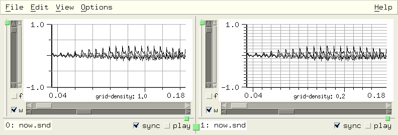show-marks snd chn
If show-marks is #t (the default), marks are displayed. This is the 'Show marks' View menu option.
show-mix-waveforms snd chn
If show-mix-waveforms is #t (the default), a mixed sound is displayed as a separate waveform above the main data. The rectangular tag at the start of the waveform can be dragged to move the mix, or clicked to select it for the mix dialog.
show-sonogram-cursor snd chn
If show-sonogram-cursor is #t (the default is #f), the cursor is also displayed in the sonogram.
show-transform-peaks snd chn
If show-transform-peaks is #t (the default is #f), transform peak information is included in the transform display. This is the 'peaks' button in the Transform options dialog.
show-y-zero snd chn
If show-y-zero is #t (the default is #f), the y=0 axis is displayed. This is the 'Show Y=0' View menu option.
smooth-channel beg dur snd chn edpos
smooth-channel is the regularized version of smooth-sound.
| Smoothing |
|---|
smooth channel: smooth-channel |
smooth-sound beg num snd chn
smooth-sound applies a smoothing function to the indicated data. This produces a sinusoid between the end points:
(define (smoother y0 y1 num)
(do ((v (make-float-vector (+ 1 num)))
(angle (if (> y1 y0) pi 0.0))
(off (* .5 (+ y0 y1)))
(scale (* 0.5 (abs (- y1 y0))))
(i 0 (+ i 1)))
((= i num) v)
(set! (v i) (+ off (* scale (cos (+ angle (* i (/ pi num)))))))))
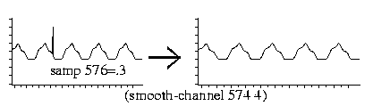
For a fancier version, see fft-smoother in examp.scm. See also remove-clicks in examp.scm.
sound? snd
sound? returns #t if 'snd' refers to an open sound.
soundfont-info snd
This returns a list of lists describing 'snd' as a soundfont. Each inner list consists of the sound name, start point, loop start, and loop end.
> (soundfont-info)
(("BrSteel_E4" 0 65390 65458) ("BrSteel_B2" 65490 131458 131637) ...)
To set a named mark at the start of each sound with un-named marks at the loop points:
(define (mark-sf2)
(for-each (lambda (vals)
(let ((m1 (add-mark (cadr vals))))
(set! (mark-name m1) (car vals)))
(add-mark (caddr vals))
(add-mark (cadddr vals)))
(soundfont-info)))
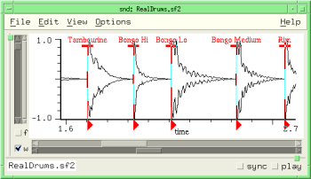
See also explode-sf2 in examp.scm.
sound->integer sound
This is the counterpart to integer->sound.
sound-loop-info snd
This gives info about loop points from the sound's header. The loop info is a list of up to 4 points, the first two (start, end) refer to the sustain loop, the second two to the release. The 5th and 6th list entries are the base note and detune values. For historical reasons, the 7th and 8th entries are the sustain and release modes. This is similar to mus-sound-loop-info (but it's settable). See explode-sf2 in examp.scm.
> (sound-loop-info) (24981 144332 0 0 60 0 1 0)
sound-properties snd
This is a property list associated with the given sound. It is set to () at the time a sound is opened. The accessor is sound-property. There are several examples of using it in snd-motif.scm and autosave.scm.
sound-property key snd
sound-property provides access to a sound's property list. These properties are saved when Snd's state is saved (via save-state or the Options:Save session menu). To omit a given property at that time, add its name (a symbol) to the property 'save-state-ignore (a list of symbols); see 'inset-envelope in extensions.scm.
sounds
sounds returns a list of currently active sounds. A common Snd trope is (map func (sounds)):
(map maxamp (sounds))
Or, if the return value is not needed:
(for-each (lambda (snd) (display (short-file-name snd))) (sounds))
This can be extended to provide a complete list of sounds and channels (since many Snd functions take the "snd chn" arguments):
(define (all-chans)
(let ((sndlist ())
(chnlist ()))
(for-each (lambda (snd)
(do ((i (- (channels snd) 1) (- i 1)))
((< i 0))
(set! sndlist (cons snd sndlist))
(set! chnlist (cons i chnlist))))
(sounds))
(list sndlist chnlist)))
(apply map maxamp (all-chans))
spectrum-end snd chn
This is the amount of the frequency domain to include in the spectrum display (the default is 1.0 = all of it). spectrum-end the slider labelled '% of spectrum' in the View Orientation dialog. See zoom-fft in examp.scm.
spectro-hop snd chn
This is the distance (in pixels) moved between successive spectrogram traces (default is 4). spectro-hop is the 'hop' slider in the Color/Orientation dialog.
spectrum-start snd chn
This is the start point of the frequency domain in the spectrum display (default is 0.0). See zoom-fft in examp.scm.
spectro-x-angle snd chn
This is the spectrogram x-axis viewing angle (the default is 90.0 except in GL where it is 300.0). See snd-gl.scm.
spectro-x-scale snd chn
This is the scaler (stretch amount) along the spectrogram x axis (the is default 1.0, in GL: 1.5).
spectro-y-angle snd chn
This is the spectrogram y axis viewing angle (the default is 0.0, in GL: 320.0).
spectro-y-scale snd chn
This is the scaler (stretch amount) for the spectrogram y axis (the default is 1.0).
spectro-z-angle snd chn
This is the spectrogram viewing angle for the z axis (the default is 358.0, in GL: 0.0).
spectro-z-scale snd chn
This is the scaler (stretch amount) for the z axis (the default is 0.1, in GL: 1.0).
squelch-update snd chn
This is #t if graphic updates are currently squelched (turned off). If you're doing a sequence of edits where intermediate states aren't of great interest, you can save time by turning off redisplays.
(define (without-graphics thunk)
(set! (squelch-update) #t)
(let ((val (catch #t thunk (lambda args (car args)))))
(set! (squelch-update) #f)
val))
srate snd
This is the sound's sampling rate. If you set this to a new value, update-sound is called to reflect the new srate, but any current edits are flushed. This is consistent with the other header fields (sample-type, etc), but it can be annoying.
There are several srates floating around in Snd.
(srate snd) returns the sampling rate of a particular (currently open) sound.
(mus-sound-srate filename)
returns a sound file's sampling rate.
*clm-srate* (also known as mus-srate) is associated with the CLM package (setting the implicit srate for oscil etc).
default-output-srate is the default sampling rate used when opening new files.
enved-srate is a constant that can be assigned to the envelope editor's enved-target (to apply an envelope to the sampling rate).
region-srate is the sampling rate associated with a region.
src-channel num-or-env beg dur snd chn edpos
src-channel preforms sampling rate conversion using 'warped sinc interpolation'. The argument 'num-or-env' can be a number, an envelope, or a CLM env generator. (src-channel 2.0) makes the sound go twice as fast. This is the regularized version of src-sound.
> (framples) ; current duration 50828 > (src-channel 2.0) ; make it half as long 2.0 > (framples) 25415 > (src-channel '(0 .5 1 1)) ; start slow and speed up (0 0.5 1 1) > (framples) 35235 > (src-channel (make-env '(0 .5 1 1) :length 20000)) ; stick at 1 after sample 20000 #<env linear, pass: 35236 (dur: 20000), index: 1, scaler: 1.0000, offset: 0.0000, ...> > (framples) 42964
| Resampling |
|---|
resample channel: src-channel |
src-sound num-or-env base snd chn edpos
src-sound performs sampling rate conversion using 'warped sinc interpolation'. The argument 'num-or-env', which sets the ratio between the old and the new srate, can be either a number or an envelope. In the latter case, 'base' sets the segment base (the default is 1.0 = linear). A value greater than 1.0 causes the sound to be transposed up. A value less than 0.0 causes the sound to be reversed. (src-sound 2.0) speeds the sound up by a factor of 2 (transposes it up an octave), whereas (src-sound 0.5) slows it down by the same factor (transposes it down an octave). (src-sound '(0 1 1 2)) starts at the original speed, then gradually increases until, at the end of the sound, it is going twice as fast.
'num-or-env' can also be a CLM env generator (its duration should be the same as the original sound, and its segments should not pass through 0.0). The following function can be used to predict how long the resultant note will be given an src envelope:
;;; find new duration of sound after using env as srate.
;;; the envelope gives the per-sample increment, so the "tempo"
;;; is the inverse of that. To get the total new duration,
;;; we need to integrate the inverse envelope, but a straight
;;; line in the increment envelope becomes a 1/x curve in the
;;; tempo curve, so we use log(x) as integral of 1/x and
;;; take into account the local notion of "x".
(define (src-duration e)
(let* ((len (length e))
(all-x (- (e (- len 2)) (e 0)))) ; last x - first x
(do ((dur 0.0)
(i 0 (+ i 2)))
((>= i (- len 2)) dur)
(let* ((x0 (e i))
(x1 (e (+ i 2)))
(y0 (e (+ i 1))) ; 1/x x points
(y1 (e (+ i 3)))
(area (if (< (abs (- y0 y1)) .0001)
(/ (- x1 x0) (* y0 all-x))
(/ (* (- (log y1) (log y0)) (- x1 x0))
(* (- y1 y0) all-x)))))
(set! dur (+ dur (abs area)))))))
;;; (src-duration '(0 1 1 2)) -> 0.693147180559945
:;; (src-duration '(0 1 1 .5)) -> 1.38629436111989
;;; (src-duration '(0 .5 .5 3 .6 1 .7 .1 .8 1.5 1 1)) -> 1.02474349685432
;;; here we're using this in the Snd listener:
> (framples)
220501
> (src-duration '(0 1 1 2))
0.693147180559945
> (src-sound '(0 1 1 2)) ; should be about .693 * 220500 framples
(0 1 1 2)
> (framples)
152842
> (/ 152842.0 220501)
0.693157854159392 ; tada!
The inverse, so to speak, of this is src-fit-envelope:
(define (src-fit-envelope e target-dur) (scale-envelope e (/ (src-duration e) target-dur)))
start-playing chans srate background
If a play-list is waiting, this starts it. 'chans' defaults to 1, 'srate' defaults to 44100, 'background' defaults to #t. See play.scm or marks.scm.
start-progress-report snd chn
This starts a progress-report.
status-report msg snd
This posts 'msg' in the sound's status area. The status area is the text widget between the sound's filename and the buttons on the right, beneath the graph. If 'snd' is not a currently open sound, the message is sent to the listener, if it is open. If there is no sound or listener, 'msg' is sent to stderr.
stop-player player
This removes 'player' from the current play-list (see make-player).
stop-playing snd
If 'snd' is playing, this stops it. If no argument is given, it stops all playback. See play.scm, stop-playing-hook, or stop-playing-selection-hook.
swap-channels snd1 chn1 snd2 chn2 beg dur edpos0 edpos1
This swaps the indicated channels, between 'beg' and 'beg' + 'dur'. In simple cases, this is a virtual operation. swap-channels can be used to change channel order arbitrarily. For example, the following function reverses the channel order:
(define* (reverse-channels snd)
(let* ((ind (or snd (selected-sound) (car (sounds))))
(chns (channels ind))
(swaps (floor (/ chns 2))))
(as-one-edit
(lambda ()
(do ((i 0 (+ i 1))
(j (- chns 1) (- j 1)))
((= i swaps))
(swap-channels ind i ind j))))))
Channel rotation is similar, though slightly more work; see scramble-channels in examp.scm. Since swap-channels is a virtual operation in many cases, it's worth using it even where just a channel copy is desired; mono->stereo in extensions.scm for an example. Another example is swap-selection-channels in examp.scm.
sync snd
sync returns the sound's 'sync' value (an integer, 0 = not sync'd). Several functions (scale-by, for example), apply to the currently selected sound and also to any other sounds that share its sync value. (I later decided that this was a bad idea, hence the regularized replacements). Sounds that share a given sync value move together when you drag an x-axis slider and so on.
sync-max
This is the maximum sync setting seen so far — it provides a painless way to get a sync value that is guaranteed to be unique. To sync all currently open sounds:
(let ((new-sync (+ 1 (sync-max)))) (for-each (lambda (snd) (set! (sync snd) new-sync)) (sounds)))
time-graph? snd chn
This is #t if the time domain graph is being displayed (the 'w' button).
time-graph-style snd chn
This determines how time-domain data is displayed. The choices are:
graph-lines graph-dots graph-filled graph-lollipops graph-dots-and-lines (set! (time-graph-style 0 4) graph-lollipops)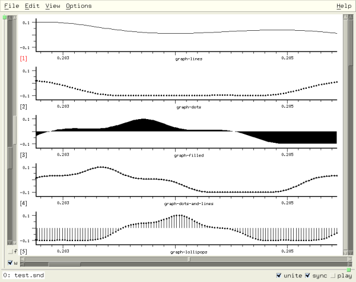
time-graph-type snd chn
If time-graph-type is graph-as-wavogram, the time domain waveform is displayed as a 'wavogram'. The default is graph-once. See also wavo-hop and wavo-trace.
tracking-cursor-style snd chn
This is the cursor-style in effect when the cursor is tracking playback (with-tracking-cursor). tracking-cursor-style can be cursor-cross or cursor-line (the default). If you want some other shape, use the function choice for cursor-style (that function's third argument can tell you when you're tracking).
transform-framples snd chn
This returns either 0 if there is no transform, transform-size if transform-graph-type is graph-once, or (list spectrum-end time-slices fft-bins) if either a sonogram or a spectrogram is being displayed.
> (set! (transform-graph?) #t) ; turn on fft display #t > (transform-framples) 512 > (set! (transform-graph-type) graph-as-sonogram) 1 ; 1 = graph-as-sonogram > (transform-framples) (1.0 375 256) ; 1.0 -> full spectrum displayed > (set! (transform-graph?) #f) ; turn off fft display #f > (transform-framples) 0
transform-graph? snd chn
This is #t if the given channel is displaying a spectrum (the 'f' button).
transform-graph-style snd chn
This determines how frequency-domain data is displayed. The choices are:
graph-lines graph-dots graph-filled graph-lollipops graph-dots-and-lines
transform-graph-type snd chn
This determines the choice of spectral display. The choices are (default) graph-once (a single FFT), graph-as-sonogram, and graph-as-spectrogram. The sonogram is a set of FFTS taken at regular time intervals displayed as time vs frequency, using the width or color of the spectral portion to indicate its amplitude. The spectrogram is similar, but uses a 3D effect where the height of the line corresponds to its amplitude. Currently, the fft-log-frequency and transform-normalization choices are ignored by the spectrogram display. If you've included openGL in Snd, the spectrogram will use openGL if with-gl is #t (the default).
transform-normalization snd chn
This is the transform normalization choice (default: normalize-by-channel). If it is normalize-by-channel or normalize-by-sound, spectral data is normalized to 1.0 before display. If dont-normalize, you get the raw data values, which can reflect amplitude changes — Snd tries to choose a y axis limit that makes successive displays move smoothly. The other choice is normalize-globally (i.e. across all sounds).
transform-sample bin slice snd chn
This is the current value of the transform (if any) in 'bin' and (if a sonogram or spectrogram) 'slice' in the given channel.
transform-size snd chn
This is the fft size (the default size is 512). It should be a power of 2. If your version of Snd was built with FFTW, and you set transform-size too large (on my machine, with 2 GBytes of memory, (expt 2 26) is apparently too large), FFTW exits Snd! There is currently no way to trap the error. Also, FFTW assumes the fft size is a (signed) int — 2^30 is probably the transform-size limit.
transform-type snd chn
This is the spectrum transform type (the default is fourier-transform).
fourier-transform wavelet-transform haar-transform autocorrelation walsh-transform cepstrum
transform->float-vector snd chn v
This returns a float-vector with the transform data from the given channel. If 'v' (a float-vector) is provided, it is filled, rather than creating a new one. See fft-peak for an example.
undo edits snd chn
This undoes 'edits' edits (the default is 1) in the given channel. Undo follows the sync field if it is not 0. The following might be a more reasonable undo function:
(define* (undo-channel (edits 1) snd chn)
(if (and snd (not (= (sync snd) 0)) chn)
(set! (edit-position snd chn)
(max 0 (- (edit-position snd chn) edits)))
(undo edits snd)))
See also undo-hook. Since redo collides with Ruby, forcing me to change its name to redo_edit, undo can also be accessed under the name undo_edit (in Scheme, undo-edit).
| Undo |
|---|
undo edit: undo and undo-channel |
update-lisp-graph snd chn
This forces Snd to redisplay 'chn's' lisp graph. See enved.scm which uses the lisp graph as a local envelope editor.
update-sound snd
This causes Snd to update 'snd' (it re-reads the data from disk, flushing any pending edits). In some cases (primarily involving a change in the number of channels), update-sound can change the index of the sound referred to by 'snd'. See update-hook for a way to deal with the index confusion.
update-time-graph snd chn
This forces Snd to redisplay 'chn's' time domain graph. See color-samples in draw.scm.
update-transform-graph snd chn
This forces Snd to redisplay 'chn's' fft graph. For historical reasons, it also forces the current transform to completion.
variable-graph? index
This returns #t if 'index' refers to a variable graph (see make-variable-graph).
view-sound filename
This opens 'filename' read-only (you can edit the sound within Snd, but you can't overwrite the original sound).
wavelet-type snd chn
If transform-type is wavelet-transform, wavelet-type selects which wavelet is used. The list of available wavelets is in the Transform Dialog. There are around 48 choices, so this variable goes from 0 to 47 (the default is 0).
wavo-hop snd chn
This sets the distance upward (in pixels) between wavogram traces; that is, the smaller this number, the more traces can be displayed (the default is 3). See time-graph-type.
wavo-trace snd chn
This sets the length (in samples) of each wavogram trace (the default is 64). See time-graph-type.
with-verbose-cursor snd chn
If with-verbose-cursor is #t, the cursor's position and other information is constantly displayed in the status area. This is the View:Verbose cursor option (default: #f).
x-axis-label snd chn context
This is the current x axis label. 'context' is one of time-graph (the default), lisp-graph, or transform-graph.
> (x-axis-label) "time" > (set! (x-axis-label) "tempus") "tempus"
x-axis-style snd chn
x-axis-style is the View menu 'X-axis units' option (the default value is x-axis-in-seconds). The x axis labelling of the time domain waveform can be in seconds (x-axis-in-seconds), in samples (x-axis-in-samples), expressed as a percentage of the overall duration (x-axis-as-percentage, useful in envelope definitions), as a beat number (x-axis-in-beats), as a measure number (x-axis-in-measures), or in digital clock format (DD:HH:MM:SS.ddd) (x-axis-as-clock, useful in very large files). When the x axis labelling is in measures, the label has the form M(B)F or M(B) where M is the one-based measure number (that is, the first measure, at time 0.0, is measure 1), B is the one-based beat number within that measure, and F (if present) is the location within that beat on a scale of 0.0 to 1.0. If a major tick marks a measure beginning, and there are non-measure minor ticks, then the measure is distinguished from the beat by having a longer tick mark.
x-bounds snd chn axis
This returns (list x0 x1), the current x axis bounds in seconds. To display the entire sound:
(set! (x-bounds) (/ (framples) (srate)))
x->position x snd chn axis
This returns the graph (screen pixel) position that corresponds to the x axis value 'x'. 'axis' is one of time-graph (the default), lisp-graph, or transform-graph. See draw.scm for an example.
x-position-slider snd chn
This is the value of x axis position slider. See zoom-fft in examp.scm.
x-zoom-slider snd chn
This is the value of x axis zoom slider. See zoom-one-pixel.
xramp-channel rmp0 rmp1 base beg dur snd chn edpos
xramp-channel is a slight extension of ramp-channel. It scales samples in the given sound/channel between 'beg' and 'beg' + 'dur' by an exponential ramp going from 'rmp0' to 'rmp1' with the connecting segment curvature set by 'base'.
(xramp-channel 0.0 1.0 32.0)
y-axis-label snd chn context
This is the current y axis label. 'context' is one of time-graph (the default), lisp-graph, or transform-graph.
y-bounds snd chn axis
This returns (list y0 y1), the current y axis bounds. To set the bounds to reflect the channel's maxamp, use (set! (y-bounds) ()). To set all channels at once using the selected sound's maxamp:
(let ((maxval (apply max (maxamp #f #t))))
(do ((i 0 (+ i 1)))
((= i (channels)))
(set! (y-bounds #f i) (list (- maxval) maxval))))
Or to set each channel to its own maxamp:
(do ((i 0 (+ i 1)))
((= i (channels)))
(let ((maxval (maxamp #f i)))
(set! (y-bounds #f i) (list (- maxval) maxval))))
y->position y snd chn axis
This returns the graph (screen pixel) position that corresponds to the y axis value 'y'. 'axis' is one of time-graph (the default), lisp-graph, or transform-graph. This is used in samples-via-colormap in draw.scm to draw the time domain samples in many colors.
y-position-slider snd chn
This is the value of y axis position slider. See zync in snd-motif.scm.
y-zoom-slider snd chn
This is the value of y axis zoom slider. See display-energy, or zync in snd-motif.scm.
zero-pad snd chn
zero-pad is the fft zero pad size as a multiple of the fft size; (set! (zero-pad) 1) gives you half data, half zeros (the default value is 0). The data length is determined by the nominal transform-size. Zero padding causes interpolation of the fft points, making the display look smoother.
(bind-key (char->integer #\p) 0
(lambda ()
(set! (zero-pad) (+ (zero-pad) 1))
(update-transform-graph)))
(bind-key (char->integer #\m) 0
(lambda ()
(set! (zero-pad) (- (zero-pad) 1))
(update-transform-graph)))
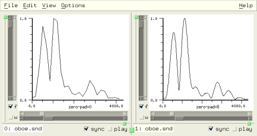
The control panel makes it easy to try out various sound effects without editing anything. You can change volume ('amp'), pitch ('speed'), tempo ('expand'), reverb amount ('reverb'), simulated room size ('reverb len'), brightness ('contrast'), and dullness ('filter'). To treat a current setting as an edit operation, call apply-controls. For more on the effects themselves (and a pretty picture!), see the discussion in snd.html.
The control panel normally processes samples as follows: if the sampling rate conversion is on (the 'Speed' control is not 1.0), it applies srate conversion to the incoming sample; the next stage is the expansion function, if the 'Expand' toggle button is set; this value is passed next to the Contrast function, if it is running, and then the result is scaled by the Amp slider's value. The filter is run next, if it's on, and finally the sample is scaled by the reverb slider and passed to the reverb, if any, which adds its result to the sample; the final result is sent to the speakers. The control panel procedures are:
amp-control snd chn
The current amp value. It is possible to use these controls (in "real-time") in your own functions. See amprt in examp.scm for an example, or add-amp-control in snd-motif.scm. As an experiment, I added the optional 'chn' argument; if it is specified, the channel's local amp-control value is set instead of the sound's. This affects apply-controls and playback.
amp-control-bounds snd
The amp-control min and max amounts as a list. The default is (list 0.0 8.0). The value 1.0 should be in the given range, since it is placed in the middle of the slider's range. If no 'snd' argument is given, this also affects the Mix and View:Files dialogs.
apply-controls snd target beg dur
Apply the current control panel state as an edit. 'target' can be 0=sound, 1=channel, 2=selection. 'beg' sets where in samples the apply starts: (apply-controls 0 0 (mark-sample m)) starts from the given mark. 'dur', if given, sets how many samples to run through the apply process (the input duration). apply-controls can be used in conjunction with the various control panel variables:
(define (expnd amt) (set! (expand-control?) #t) (set! (expand-control) amt) (apply-controls)) |
def expnd(amt) set_expand_control? true set_expand_control amt apply_controls end |
: expnd ( amt -- ) { amt }
#t set-expand-control? drop
amt set-expand-control drop
apply-controls
;
|
For many examples see new-effects.scm.
controls->channel settings beg dur snd chn origin
This sets up the sound's controls to reflect 'settings' (unspecified settings are not changed), then applies the controls as an edit of channel 'chn'. The 'settings' argument is a list where each entry can also be #f or an empty list:
(list amp speed (list contrast contrast_amp) (list expand expand_length expand_ramp expand_hop expand_jitter) (list reverb_scale reverb_length reverb_feedback reverb_low_pass reverb_decay) (list filter_order filter_env))
contrast-control snd
The contrast amount. The contrast-enhancement algorithm treats this variable as a kind of modulation index (the higher, the brighter), whereas contrast-control-amp below prescales the in-coming signal to be closer to -1.0 to 1.0 (the brightening effect works best if it has a full amplitude signal to work with).
contrast-control-amp snd
The contrast-control-amp (a prescaler on the contrast-enhancement to get the full effect of the compander).
contrast-control-bounds snd
The contrast-control min and max amounts as a list. The default is (list 0.0 10.0).
contrast-control? snd
#t if the contrast button is set (i.e. the contrast compander is active).
expand-control snd
The expansion amount. This sets the ratio between the output and input grain spacing. If it is greater than 1.0, the result is longer.
expand-control-bounds snd
The expand-control min and max amounts as a list. The default is (list 0.001 20.0).
expand-control-hop snd
The expansion hop amount in seconds (the distance between successive grains).
expand-control-jitter snd
The expansion grain timing jitter. This defaults to .1; if you set it to too small a number (0.0 for example), you'll probably notice (presumably unwanted) notch-filter effects.
expand-control-length snd
The expansion segment (grain) length in seconds. The longer the grain, the more reverberated or slurred the effect.
expand-control-ramp snd
The expansion ramp amount (between 0 and .5). This affects the smoothness of the grain overlaps — .001 gives a rattling effect.
expand-control? snd
#t if the expand button is set (i.e. the expansion effect is active).
filter-control-coeffs snd
The filter coefficients (read-only currently). It is a float-vector suitable for use with the filter generator or with filter-sound.
filter-control-envelope snd
The filter (frequency response) envelope (a list of breakpoints).
filter-control-in-dB snd
The filter dB button. If #t, the filter (frequency) envelope graph is displayed in dB.
filter-control-in-hz snd
If #t, the filter frequency response envelope x axis is in Hz, otherwise 0 to 1.0 (where 1.0 corresponds to srate/2).
filter-control-order snd
The filter order. This affects how much computing is needed to run the filter, and how close the filter can get to the desired frequency response envelope.
filter-control-waveform-color
The filter frequency response waveform color.
filter-control? snd
#t if the filter button is set (i.e. the filter is active).
reset-controls snd
Set all the controls to their default state.
restore-controls snd
Set all the controls to the last saved state.
reverb-control-decay snd
The length (in seconds) of the reverberation after the sound has finished (default: 1.0).
reverb-control-feedback snd
The reverb feedback coefficient. The more feedback, the happier Elvis.
reverb-control-length snd
The reverb delay line length scaler. Longer reverb simulates, to some extent, a bigger hall.
reverb-control-length-bounds snd
The reverb-control-length min and max amounts as a list. The default is (list 0.0 5.0).
reverb-control-lowpass snd
The reverb low pass filter coefficient. (This filter is in the feedback loop).
reverb-control-scale snd
The reverb amount (the amount of the direct signal sent to the reverb). You can never have enough reverb.
reverb-control-scale-bounds snd
The reverb-control-scale min and max amounts as a list. The default is (list 0.0 4.0).
reverb-control? snd
#t if the reverb button is set (i.e. the reverberator is active).
save-controls snd
This remembers the current control settings for a later restore-controls. In new-effects.scm, the effects that use the control panel internally (post-expsrc-dialog, for example) save and restore the current state via:
(save-controls) (reset-controls) ;;; now set the ones that are of interest for the current effect (apply-controls) (restore-controls)
show-controls snd
#t if the sound's control panel is currently open. If set to #t, the sound's control panel is opened, else it is closed.
speed-control snd
current speed (sampling rate conversion factor). A speed of 2 plays the sound twice as fast.
speed-control-bounds snd
The speed-control min and max amounts as a list. The default is (list 0.05 20.0). If no 'snd' argument is given, this also affects the Mix, and View:Files dialogs.
speed-control-style snd
The speed control can be interpreted as a float, (speed-control-as-float, the default), as a ratio of relatively small integers (speed-control-as-ratio), or as a step in a microtonal scale (speed-control-as-semitone). In the various speed controls, you can click the number to cycle through the speed style choices.
speed-control-tones snd
The number of tones per octave in the speed-control-as-semitone speed style (default: 12).
The Options:Controls menu option
starts a dialog to handle the controls that aren't handled by
the control panel (expand-control-hop, expand-control-length, expand-control-ramp,
contrast-control-amp, reverb-control-lowpass, and reverb-control-feedback).
The control panel itself is accessible as ((sound-widgets) 2).
You can add or remove controls; add-amp-controls
in snd-motif.scm sets up a separate amp slider for each channel in the current sound.
disable-control-panel disables (hides) the
entire panel.
An edit list (in other editors this is called an "edit decision list", I guess because it sounds decisive) describes the edit history of a channel. When, for example, you type C-d, nothing actually happens to any data, despite the fact that the graph no longer shows that sample, it's omitted when you play the channel, and so on. Instead, a descriptor is appended to the edit history of that channel saying "sample n was deleted". Undo and redo move around in this list (they just move the pointer to the current edit history position); all the positions are accessible just like the current one, and are exposed in many functions described above via the 'pos' or 'edpos' arguments. The edit list functions are:
as-one-edit func origin
call 'func', a function of no arguments, treating it as one edit (in all channels) in the edit history mechanism. Graphics redisplays are squelched during as-one-edit. as-one-edit returns the result of 'func'.
as_one_edit(lambda do || set_sample(100, 0.1) set_sample(200, 0.2) end) |
lambda: 100 .1 set-sample drop 200 .2 set-sample drop ; 0 make-proc as-one-edit |
See mix.scm for many examples. If you want to save and restore Snd's state after using as-one-edit, you need to set 'origin' to some string that can restore the effect of the as-one-edit; the default is to copy the last edit history string and use its associated bounds — unlikely to be what you want.
display-edits snd chn edpos
This returns the current edit list contents as a string. If 'edpos' is specified, only that position is described.
> (open-sound "oboe.snd") #<sound 0> > (scale-channel 2.0) 2.0 > (pad-channel 100 200) 100 > (display-edits 0 0 1) ; show just edit 1 (the scale-channel call) " (scale 0 50828) ; scale-channel 2.000 0 #f [1:2]: (at 0, cp->sounds[0][0:50827, 2.000]) [file: /home/bil/cl/oboe.snd[0]] (at 50828, end_mark) "
edit-fragment edpos snd chn
This returns a list similar to that displayed in the edit history window giving the origin of the specified edit, its type (delete, insert, etc), its begin sample, and the number of samples affected. If 'edpos' is omitted, edit-fragment returns the currently active edit.
> (edit-fragment 2 0 0) ; continuing example above
("pad-channel" "zero" 100 200)
edit-list->function snd chn start end
This returns a function encapsulating the current edit history list, providing a way to save an edit sequence and re-apply it in some other context. For example, you can back up to some earlier point, save the edit list, make a change, then re-run the saved edit sequence. The function returned takes 2 arguments, a sound and a channel number.
> (define our-edits (edit-list->function)) ; same example as above #<unspecified> > our-edits #<procedure our-edits ((snd chn) (scale-channel 2.0 0 #f snd chn) (pad-channel 100 200 snd chn))> > (undo 2) 2 > (our-edits 0 0) 100
In Ruby:
:open_sound "oboe.snd"
0
:scale_channel 2.0
2.0
:pad_channel 100, 200
100
:our_edits = edit_list2function
#<Proc:0x40c713ec@(eval):2>
:our_edits.source
Proc.new {|snd, chn| scale_channel(2.000, 0, false, snd, chn); pad_channel(100, 200, snd, chn) }
:undo 2
2
:our_edits.call(0, 0)
100
In Forth:
snd> "oboe.snd" open-sound
0
snd> 2.0 scale-channel
2.0
snd> 100 200 pad-channel
100
snd> 0 0 edit-list->function value our-edits
nil
snd> our-edits proc-source-ref
lambda: { snd chn } 2.000 0 #f snd chn scale-channel drop 100 200 snd chn pad-channel drop ; 2 make-proc
snd> 2 undo
2
snd> our-edits '( 0 0 ) run-proc
#f
edit-position snd chn
The current position in the edit history list; it can be set: (set! (edit-position) 0) is equivalent to (revert-sound) in a mono sound. See make-sampler.
edit-properties snd chn edpos
Each entry in a channel's edit history list has a property list (similar to the channel-properties list). If you have information that changes with the edit lists, these property lists might simplify the access code.
edit-property key snd chn edpos
edit-property returns the value associated with 'key' in the given channel's edit history list property list at edit location 'edpos'. To add or change a property, use set! with this procedure as in channel-property. The edit list property list is convenient because the associated information goes away automatically when the given edit is no longer accessible.
edits snd chn
This returns a list with the number of undo-able edits and redo-able edits. That is, if we have 2 undo-able edits and no redo-able edits, (edits) returns (list 2 0).
edit-tree snd chn edpos
This returns a list of lists completely describing current edit list. Each inner list has the form
(list global-position data-number local-position local-end scaler ramp0 ramp1 type)
If 'data-number' is -2, it marks the end of the list. In our example above (the scale-channel/pad-channel sequence):
> (edit-tree)
((0 0 0 99 2.0 0.0 0.0 0) (100 -1 0 199 0.0 0.0 0.0 1)
(300 0 100 50827 2.0 0.0 0.0 0) (51028 -2 0 0 0.0 0.0 0.0 0))
save-edit-history filename snd chn
This function saves the current edit lists in 'filename'. If 'chn' is omitted, all of the sound's channels are saved; if 'snd' is omitted, all edit lists are saved. If the underlying files are not subsequently changed, you can load this file to restore the current edit list state. save-edit-history returns #t if all went well. The following function makes an exact copy of the state (edit lists and all) of the given sound, providing a way to fork an edit path (geez, what jargon!). The idea here is to copy the complete edit state into a new sound so that two or more edit sequences can be compared.
(define sfile 0)
(define* (clone-sound-as new-name snd)
(let* ((tmpf (snd-tempnam))
(scm (string-append (substring tmpf 0 (- (string-length tmpf) 3)) "scm"))
(oldsnd (or snd (selected-sound))))
(if (not (string? (save-dir))) (set! (save-dir) "/tmp"))
(save-edit-history scm oldsnd)
(copy-file (file-name oldsnd) new-name)
(set! sfile (open-sound new-name))
(load scm)
(delete-file scm)
sfile))
We can also use save-edit-history (with some trouble) to split a sound off into an independent Snd process:
(define* (separate-sound snd)
(let* ((tmpf (snd-tempnam))
(scm (string-append (substring tmpf 0 (- (string-length tmpf) 3)) "scm"))
(scm1 (string-append (substring tmpf 0 (- (string-length tmpf) 4)) "-1.scm"))
(oldsnd (or snd (selected-sound)))
(name (file-name oldsnd)))
(if (string=? (save-dir) "") (set! (save-dir) "/tmp"))
(save-edit-history scm oldsnd)
(close-sound oldsnd)
(with-output-to-file
scm1
(lambda ()
(format () "(define sfile (open-sound ~S))~%" name)
(format () "(load ~S)~%" scm)))
(system (format #f "snd ~A &" scm1))))
It is sometimes more convenient to edit the edit history lists directly, than to run Snd and invoke the "Save session" menu option. These lists are Scheme, Ruby, or Forth programs, just like anything else discussed in this document. You could even write them from scratch. Say we want to make a stereo file that consists of four mono files mixed at various points; we know where they should go, and we have religious objections to using a graphical user interface. So we create myfile.scm, and put in it something like:
(let ((myfile (new-sound "mysound.snd" 2 44100 mus-bshort mus-aifc "this is my sound"))) ;; this is equivalent to the New file menu option (mix "oboe.snd" 0 0 myfile 0) ;; this mixes in the mono file oboe.snd at sample 0 in channel 0 ;; use (mix "oboe.snd" 0 0 myfile 0 #f) to forego the editable mix (mix "pistol.snd" 0 0 myfile 1) ;; now pistol.snd is at sample 0 in channel 1 (mix "fyow.snd" 10000 0 myfile 0) ;; add in fyow.snd at sample 10000 in the first channel (mix "cardinal.snd" 20000 0 myfile 1) ;; etc )
Now start Snd: snd -l myfile.scm and voila! Files like this can contain any arbitrary code, calling anything in Snd or anywhere else for that matter; you have a CLM-like notelist reader to describe sound file edits. Similarly, when you save Snd's state (via the Save session menu option or by calling the function save-state), the result is a program that can be edited just like any other such text.
Most of the transform functions and variables have been treated above, so they are only mentioned here.
add-transform name xlabel lo hi transform
add-transform adds a transform to the transform choices (alongside fourier-transform, etc). 'name' is the name to use in the transform dialog. 'xlabel' is the x axis label of the resultant graph. 'lo' and 'hi' set which portion of the returned data to graph (normally 0.0 to 1.0). 'proc' is a function of two arguments, the length of the desired transform, and a sampler that can be used to get the current data. Do not free the sampler! The function should return a float-vector containing the transform data. add-transform returns the new transform's transform-type (an object). Here's an example that displays a histogram of the current values in 16 bins:
(add-transform "histogram" "bins" 0.0 1.0
(lambda (len fd)
(do ((v (make-float-vector len))
(steps (/ len 16))
(step (/ 1.0 len))
(i 0 (+ i 1)))
((= i len) v)
(let ((val (read-sample fd)))
(do ((bin (floor (* (abs val) 16.0)))
(j 0 (+ j 1)))
((= j steps))
(set! (v (+ j bin)) (+ step (v (+ j bin)))))))))
If GSL is included in Snd, the following code ties in the (slow) Hankel transform:
(add-transform "Hankel" "Hankel" 0.0 1.0
(lambda (n rd)
(let ((v (make-float-vector n)))
(do ((i 0 (+ i 1))) ((= i n)) (set! (v i) (rd)))
(gsl-dht n v 1.0 1.0)
v)))
delete-transform type
This removes a transform that was added via add-transform.
fft rl im sgn
This performs an FFT on float-vectors 'rl' and 'im' (the real and imaginary parts of the input data). 'sgn' is 1 for an FFT, -1 for an inverse FFT; (the default is 1). The CLM fft function is called mus-fft in Snd. The only difference between the two is that Snd's fft determines the fft size from the size of the float-vectors passed to it, whereas CLM's takes the size as an argument. Here's an example that uses the fft to produce a sum of sinusoids each with arbitrary amplitude and initial-phase:
(define (fft->sines amps phases)
(let* ((len (length phases))
(fft-size (expt 2 (+ 10 (ceiling (log len 2)))))
(rl (make-float-vector fft-size))
(im (make-float-vector fft-size)))
(do ((i 0 (+ i 1)))
((= i len))
(let ((amp (amps i))
(phase (phases i)))
(set! (rl (+ i 1)) (* amp (sin phase)))
(set! (im (+ i 1)) (* amp (cos phase)))))
(fft rl im -1)
rl))
integer->transform i
This function returns the transform (type object) corresponding to a given integer.
snd-spectrum data window length (linear #t) (beta 0.0) in-place (normalized #t)
This returns the spectrum (as a float-vector) of 'data' (also a float-vector) using the fft window 'win'. 'length' is the number of samples of data.
(let ((spectr (snd-spectrum data rectangular-window (transform-size)))) ...)
If 'linear' is #f (its default is #t), the spectrum is in dB. 'beta' is the fft data window family parameter; it is scaled internally so here it should be between 0.0 and 1.0. If 'in-place' is #t, the spectrum is in 'data', otherwise snd-spectrum returns a new float-vector.
transform->integer transform-object
This function returns the integer corresponding to a given transform type object (e.g. fourier-transform).
transform? object
This returns #t if 'object' is a transform object.
Other related variables and functions:
transform-graph? show-transform-peaks transform-sample fft-window-beta show-selection-transform transform->float-vector after-transform-hook spectrum-end transform-framples fft-log-frequency spectro-hop transform-type fft-log-magnitude spectrum-start update-transform-graph transform-size spectro-x-angle transform-normalization transform-graph-type spectro-x-scale zero-pad fft-window spectro-y-angle wavelet-type max-transform-peaks spectro-y-scale spectro-z-scale min-dB spectro-z-angle
Some FFT-based effects and editing functions:
| FFTs |
|---|
CLM fft function: mus-fft |
The built-in dialogs, accessible from the main menu, provide the standard, but sometimes clumsy ways to open and save sounds, edit envelopes and headers, and set various global variables. In addition, many other dialogs are implemented in various Scheme/Ruby/Forth files. The following functions refer to the built-in dialogs. They were aimed originally at semi-internal needs like saving the current Snd state, but might be useful elsewhere. Functions such as color-orientation-dialog normally create and start the dialog in question; that is, (color-orientation-dialog) puts the color/orientation dialog on the screen. If you're trying instead to customize the dialog in some way (in your initialization file, for example), you want the dialog to be created (so that the various widget children exist), but don't want it to pop up on the screen ('managed' in X jargon). So, most of the dialog functions have a 'managed' argument that defaults to #t. If #f, the dialog is created, if need be, but not started. install-searcher-with-colors in snd-motif.scm, which adds customized file filtering code to the File:Open dialog, first makes sure the dialog exists with (open-file-dialog #f).
add-directory-to-view-files-list dir dialog [Motif only]
This adds the sound files in directory 'dir' to the list of files in the View:Files dialog.
add-file-to-view-files-list file dialog [Motif only]
This adds 'file' to the list of files in the View:Files dialog.
add-file-filter name func
This adds 'func' to the file filter list under the name 'name'. The file filter list is a list of functions, accessed from drop-down menus in the various file-related dialogs. Each such function filters the list of files displayed by the dialog, so that only some interesting subset is posted. The built-in filter is just-sounds which uses the sound file extension tables to decide which files are sounds, omitting all others from the file lists. You can add your own filters to this menu with add-file-filter. The 'name' appears as the menu item label corresponding to the function. The function should take one argument, a file name, and return #t to retain that file in the file list. add-file-filter returns an integer to identify 'func' in other contexts.
(add-file-filter "mono files" (lambda (a) (and (sound-file? a) (= (channels a) 1))))
add-file-sorter name func [Motif only]
This adds 'func' to the file-sorter list under the name 'name'. Some dialog file lists include a "sort" menu to reorder the files in the file list. You can add your own sort functions to this menu with add-file-sorter. The 'name' appears as the menu item label corresponding to the function. The new sorter's index is returned; it is an integer for use with functions such as view-files-sort. The function should take two arguments, each a filename, and return a strcmp-like number describing how to sort the pair. The following adds a sorter named "duration" that sorts files from shorter to longer:
(add-file-sorter
"duration"
(lambda (a b)
(let ((dur1 (mus-sound-duration a))
(dur2 (mus-sound-duration b)))
(cond ((> dur1 dur2) 1)
((< dur1 dur2) -1)
(else 0)))))
add-sound-file-extension ext
This adds 'ext' to the list of (case sensitive) sound file extensions used by sound-files-in-directory. The initial list is ("snd" "aiff" "aif" "wav" "au" "aifc" "voc" "wve" "WAV" "sf2" "rf64" "caf"). To add "ogg" as a recognized extension:
(add-sound-file-extension "ogg")
The list itself is sound-file-extensions. See also add-sound-file-extension-1.
add-to-main-menu menu-label update-callback
This adds a new top-level menu named 'menu-label' and returns its menu index. The index identifies the menu for add-to-menu and others. 'update-callback' is a procedure of no arguments that is called each time the menu is displayed.
Scheme:
(define new-menu (add-to-main-menu "New Menu"))
(add-to-menu new-menu "First Item" (lambda () (snd-print ";item 1")))
(add-to-menu new-menu "Second Item" (lambda () (snd-print ";item 2")))
Ruby:
new_menu = add_to_main_menu("New Menu")
add_to_menu(new_menu, "First Item", lambda do | | snd_print("item 1") end)
add_to_menu(new_menu, "Second Item", lambda do | | snd_print("item 2") end)
Forth:
"New Menu" add-to-main-menu constant new-menu drop
new-menu "First Item" lambda: <{ }> "item1" snd-print ; undef add-to-menu drop
new-menu "Second Item" lambda: <{ }> "item2" snd-print ; undef add-to-menu drop
add-to-menu top-menu menu-label callback position
This adds the menu 'menu-label' to the top-level menu whose index is 'top-menu' with the callback function 'callback', then returns the new menu label widget. The built-in Snd menus are numbered from 0 ('File') to 4 ('Help'). If the label and callback are #f, a separator is added to the menu. 'position' sets the position of the new menu option; it defaults to the end of the menu. See new-effects.scm for many examples.
(add-to-menu 1 "Stop Playing" stop-playing)
(add-to-menu 5 "Reduce height"
(lambda () (set! (window-height) (/ (window-height) 2))))
channel-widgets
channel-widgets returns a list of various widgets associated with a given channel:
0: graph ;drawing area for all 3 graphs (time, fft, lisp) 1: w-button 2: f-button 3: x-position slider 4: y-position slider 5: x-zoom slider 6: y-zoom slider 7: edit history list 8: right(united-chans) y-position slider 9: right y-zoom slider 10: main pane for channel ------ the rest only in Gtk+ 11..16: adjustment widgets associated with the zoom and position sliders
clear-listener
This deletes all listener text from the beginning to the cursor position (C-M-g is bound to this function).
color-orientation-dialog managed
This creates and (if 'managed' which defaults to #t) activates the Color/Orientation dialog; it returns the dialog widget.
define-envelope name data (base 1.0)
This adds an envelope to the envelope editor's list, under the name 'name', using the list of breakpoints 'data', and the optional 'base'.
Scheme: (define-envelope ramp '(0 0 1 1))
Ruby: define_envelope("ramp", [0, 0, 1, 1])
Forth: $" ramp" '( 0.0 0.0 1.0 1.0 ) 1.0 define-envelope
delete-file-filter index
This removes the file filter function associated with 'index' from the file filter list.
delete-file-sorter index [Motif only]
This removes the file sorter function associated with 'index' from the file sorter list.
dialog-widgets
dialog-widgets returns a list of dialog widgets (or lists thereof, or #f if none yet):
0: View: Color/Orientation dialog 2: Edit: EnvelopeEditor dialog 3 and 4: unused 5: Options: Transform dialog 6: File: Open dialog 7: File: Save as dialog 8: View: Files dialog 9: raw data dialog (activated when raw sound opened, sometimes) 10: File: New sound dialog 11: File: Mix dialog 12: Edit: Edit header dialog 13: Edit: Find dialog 14: Help dialog 16: View: Mixes dialog 17: File: Print dialog 19: View: Regions dialog 20: info dialog (activated by info-dialog function) 21: more controls dialog 22: Edit: Selection Save as dialog 23: File: Insert file dialog 24: region save as dialog (from regions dialog save button) 25: Options: Preferences dialog
edit-header-dialog snd
This starts the Edit Header dialog on 'snd', returning the dialog widget.
enved-base
This is the envelope editor exponential base value.
enved-clip?
This reflects the state of the envelope editor 'clip' button.
enved-dialog
This starts the envelope editor dialog, returning the dialog widget.
enved-envelope
This is the envelope (a list of breakpoints) in the envelope editor's graph window.
enved-filter
This reflects the type of the envelope editor's filter (the default #t means FIR; #f is FFT). To get the FFT display in the envelope editor as the default:
(set! (enved-filter) #f) (set! (enved-wave?) #t) (set! (enved-target) enved-spectrum)
enved-filter-order
This is the order of the envelope editor's FIR filter (the default is 40).
enved-in-dB
This reflects the state of the envelope editor 'dB' button (it defaults to #f).
enved-power
This is the envelope editor's base scale range (it defaults to 3.0).
enved-style
This is the envelope editor choice for connecting breakpoints. It can be envelope-linear (the default), or envelope-exponential.
enved-target
This determines how the envelope editor's current envelope is applied to the selected data. The choices are enved-amplitude, enved-srate and enved-spectrum. The first treats the envelope as an amplitude envelope, the second as an srate curve (changing speed), and the last as a frequency response envelope for a filter.
enved-waveform-color
This is the color of the waveform displayed in envelope editor (the default is blue).
enved-wave?
This reflects the state of the envelope editor 'wave' button. The wave shown is the time domain display, even when filtering.
find-dialog managed text
This creates and (if 'managed' which defaults to #t) starts the Edit:Find dialog, returning the dialog widget.
focus-widget widget
This gives 'widget' "focus" — it becomes the active widget, receiving keystrokes and so on.
gl-graph->ps file (type 0) snd chn
This creates a Postscript picture of the current openGL display in snd's channel chn (a spectrogram). 'file' defaults to eps-file. 'type' can be 0: eps, 1: ps, 2: pdf, 3: tex, 4: svg, or 5: pgf. This function is available only if OpenGL and gl2ps have been loaded (via the --with-gl and --with-gl2ps configuration switches).
goto-listener-end
This moves the cursor to the end of the listener text, and scrolls the window so that it is visible.
graph->ps file
This creates a Postscript picture of the current display. 'file' defaults to eps-file. See also eps-bottom-margin, eps-left-margin, and eps-size.
help-dialog subject help-string xrefs urls
This starts the help dialog with the title 'subject' and help area text 'help', returning the dialog widget. 'xrefs' is an optional list of strings to post in the "related items" list. 'urls' is a corresponding list of urls. There are many examples in new-effects.scm.
(define-macro (with-snd-help form) ;; if an error occurs while evaluating form, try to start the help dialog with some relevant help `(catch #t (lambda () ,form) (lambda args (if (and args (cadr args) (string? (cadr args))) (let* ((func (if (string=? "set!" (substring (cadr args) 0 4)) (substring (cadr args) 5) (cadr args))) (help (snd-help func))) (if help (help-dialog func help)))) args)))
hide-widget widget
This hides (unmanages) 'widget'. To remove the y-position slider (which is only there for looks):
(hide-widget ((channel-widgets) 4))
info-dialog subject info
This starts the info dialog with the title 'subject' and body 'info' returning the dialog widget.
insert-file-dialog managed
This creates and (if 'managed' which defaults to #t) activates the File:Insert dialog, returning the dialog widget.
listener-color
This is the background color of listener.
(set! (listener-color) (make-color 0 0 0))
listener-colorized
This determines whether the listener displays the code with syntax highlights in the Gtk version of Snd. The colors can be changed with colorizer-colors.
listener-font
This is the listener font.
listener-prompt
This is the listener prompt which defaults to ">". I like ":" better (as you can see in many of the examples in this file), so in ~/.snd_s7 I have this line:
(set! (listener-prompt) ":")
listener-selection
listener-selection returns the currently selected text in the listener, or #f if there isn't any. The following code starts the help dialog with help related to the selection if "h" is typed in the graph:
(bind-key #\h 0
(let ((+documentation+ "start help dialog based on listener selected text"))
(lambda ()
(let ((subject (listener-selection)))
(if (string? subject)
(help-dialog subject (snd-help subject)))))))
listener-text-color
This is the text color in the listener. For red text on a black background:
(set! (listener-color) (make-color 0 0 0)) ; in Gtk, maybe a bad idea — the cursor remains black... (set! (listener-text-color) (make-color 1 0 0))
main-menu menu
main-menu returns the top-level menu associated with its integer argument:
0: File menu 1: Edit menu 2: View menu 3: Options menu 4: Help menu and others as added by add-main-menu
main-widgets
main-widgets returns a list of the top-level widgets in Snd (#f if not created):
0: top-level-application ; XtAppContext in Motif, top level window in Gtk+ 1: top-level-shell 2: main-pane ; outer paned window top window (holds sounds) 3: main-sound-pane 4: listener-pane ; outer paned window bottom window 5: notebook-outer-pane
For example, to get at Snd's main shell widget:
Scheme: (cadr (main-widgets)) Ruby: main_widgets.cadr Forth: main-widgets cadr
In Gtk 3.1 or later, we can use this to fire up a modal font chooser dialog:
> (define (get-font)
(with-let *gtk*
(let ((fonts (gtk_font_chooser_dialog_new "fonts" (GTK_WINDOW (cadr (main-widgets))))))
(let ((response (gtk_dialog_run (GTK_DIALOG fonts)))) ; don't return until a choice is made
(let ((name (if (= response GTK_RESPONSE_OK) ; (cancel = GTK_RESPONSE_CANCEL)
(gtk_font_chooser_get_font (GTK_FONT_CHOOSER fonts))
'no-font-selected))) ; perhaps pass in the current value instead?
(gtk_widget_destroy (GTK_WIDGET fonts)) ; clean up after the dialog
name))))) ; return new font
get-font
> (set! (listener-font) (get-font))
"Monospace Bold Italic 10"
menu-widgets
menu-widgets returns the top-level menu widgets (cascade menus in Motif or menu bars in Gtk+) as a list:
0: top-level-menu-bar 1: file-menu 2: edit-menu 3: view-menu 4: options-menu 5: help-menu
See snd-motif.scm, snd-gtk.scm, and new-effects.scm for various examples. Manipulating menus can be tricky in both Motif and Gtk; if I were to try to explain submenus and whatnot here, I'd only get tangled up in half-forgotten complications. When I have to deal with this stuff, I always go to a working example.
mix-dialog-mix
This is the id (mix object) of the mix displayed by the mix dialog.
mix-file-dialog managed
This creates and (if 'managed' which defaults to #t) activates the File:Mix dialog, returning the dialog widget.
new-sound-dialog managed
This creates and (if 'managed' which defaults to #t) starts the File:New sound dialog, returning the dialog widget.
open-file-dialog managed
This creates and (if 'managed' which defaults to #t) activates the File:Open dialog, returning the dialog widget.
preferences-dialog
This activates the Options:Preferences dialog.
print-dialog managed direct-to-printer
This creates and (if 'managed' which defaults to #t) activates the File:Print dialog, returning the dialog widget.
remove-from-menu top-menu menu-label
This removes the menu 'menu-label' from the top top-level menu whose index is 'top-menu'. See examp.scm or snd-motif.scm.
reset-listener-cursor
This resets the listener cursor to the default pointer shape.
save-as-dialog-auto-comment
This is the 'auto' button in the Save-as dialogs. If set, a comment is automatically generated for the new file.
save-as-dialog-src
This is the 'src' button in the Save-as dialogs. If set, sampling rate conversion is performed if the output srate does not match the original srate.
save-envelopes filename
This saves the envelope editor envelopes in 'filename'.
save-listener filename
This saves the listener contents in 'filename'.
save-region-dialog managed
This creates and (if 'managed' which defaults to #t) starts the Region Save-as dialog (to save the current Region browser region), returning the dialog widget.
save-selection-dialog managed
This creates and (if 'managed' which defaults to #t) starts the Edit:Save selection as dialog (to save the current selection), returning the dialog widget.
save-sound-dialog managed
This creates and (if 'managed' which defaults to #t) starts the File:Save as dialog (to save the currently selected sound), returning the dialog widget.
show-listener
If show-listener is set to #t, Snd opens the listener pane; otherwise it closes the listener.
show-widget widget
This shows (manages) 'widget'.
sound-file-extensions
This is the list of sound file extensions used by the "just-sounds" buttons and sound-files-in-directory to try to recognize sound files. It is settable: a list of extensions as strings:
(set! (sound-file-extensions) (list "snd" "aiff" "aif" "wav" "au" "aifc" "voc" "wve" "WAV" "sf2" "rf64" "caf"))
sound-file? filename
This returns #t if 'filename' has an extension that matches one in the sound-file-extensions list.
> (sound-file? "oboe.snd") #t > (sound-file? "extsnd.html") #f
sound-files-in-directory dir
This returns a list of the sound files found in 'dir'. A file is considered a sound if it has data and its extension is on the sound file extension list (see add-sound-file-extension). The directory name defaults to the current directory. This is useful for batch processing of sounds. The following prints the names of all the stereo AIFC files it finds:
(for-each
(lambda (filename)
(if (and (= (mus-sound-header-type filename) mus-aifc)
(= (channels filename) 2))
(snd-print (format #f "~%~A" filename))))
(sound-files-in-directory))
See also map-sound-files in extensions.scm.
sound-widgets
sound-widgets returns a list of various widgets specific to a given sound:
0: main-pane 1: name-label ; sound's file name 2: control-panel 3: status area 4: play button 5: filter-graph ; control panel drawing area for filter envelope 6: unite button ; invisible in mono sounds 8: name-icon ; hour-glass or whatever 9: sync button
For example, we can read and write the status area:
Scheme:
> (status-report "this is a test")
"this is a test"
> (widget-text ((sound-widgets) 3))
"this is a test"
Ruby:
:status_report("this is a test")
this is a test
:widget_text(sound_widgets()[3])
this is a test
Forth:
snd> "this is a test" status-report
this is a test
snd> 0 sound-widgets 3 list-ref widget-text
this is a test
stdin-prompt
This is the stdin prompt which defaults to "".
transform-dialog managed
This creates and (if 'managed' which defaults to #t) activates the Options:Transform dialog, returning the dialog widget.
view-files-amp dialog [Motif only]
This is the value of the amplitude slider in the View:Files dialog.
view-files-amp-env dialog [Motif only]
This is the amplitude envelope displayed in the View:Files dialog.
view-files-dialog managed [Motif only]
This creates and (if 'managed' which defaults to #t) activates a View:Files dialog and returns the dialog widget.
view-files-files dialog [Motif only]
This is the file list (a list of strings) of a View:Files dialog.
view-files-selected-files dialog [Motif only]
This is the list of selected files (a list of strings) in a View:Files dialog.
view-files-sort dialog [Motif only]
This is the sort function choice in a View:Files dialog. Initially there are 6 sort choices: a..z, z..a (sort by file name), new..old, old..new (sort by file write date), and small..big, big..small (sort by file size). The default is 0 (a..z). If you set view-files-sort without giving the dialog argument, it just affects the startup state of subsequent new View:Files dialogs. To set the sort choice in the current dialog:
(set! (view-files-sort ((dialog-widgets) 8)) 2) ; 2=new..old
view-files-speed dialog [Motif only]
This is the value of the speed slider in a View:Files dialog.
view-files-speed-style dialog [Motif only]
This is the speed style choice in a View:Files dialog. It is one of speed-control-as-float (the default), speed-control-as-ratio, or speed-control-as-semitone.
view-mixes-dialog
This creates and activates the View:Mixes Dialog, returning the dialog widget.
view-regions-dialog
This starts the region browser (a no-op if there are no regions), and returns the dialog widget.
widget-position widget
This returns a list giving the widget's x and y coordinates (in pixels). It can be set to reposition the widget. See nb.scm where it uses the current window position to try to find a convenient place for the help dialog.
widget-size widget
This returns a list giving the widget's width and height (in pixels). It can be set to resize the widget. See nb.scm and examp.scm.
(set! (widget-position (cadr (main-widgets))) (list 300 100))
widget-text widget
This returns the text widget's text. It can be set.
abort
This exits Snd via "abort", presumably to fall into the C debugger. To stop some on-going Snd operation, use C-g.
add-source-file-extension ext
add-source-file-extension adds 'ext' to the list of source file extensions.
(add-source-file-extension "rbs")
bes-j0 x bes-j1 x bes-jn n x bes-y0 x bes-y1 x bes-yn n x bes-i0 n x bes-i1 n x ; from GSL bes-in n x bes-k0 x bes-k1 x bes-kn n x
If the Bessel functions are available from the math library (or GSL), these are J0 and friends.
bind-key key state func extended origin
bind-key causes 'key' (an integer or a key name) with modifiers 'state' (and preceding C-x if 'extended') to evaluate 'func' when the graph is receiving keysrokes. If bind-key seems to be a no-op, try clicking in the graph to force it to take the focus. If 'origin' is included, it is the name reported if an error occurs. The default is a description of the key.
The function ('func' above) should take zero or one arguments and return one of the cursor choices telling Snd what action (if any) to take after evaluating 'code'. Possible return values are:
cursor-in-view cursor-on-left cursor-on-right cursor-in-middle keyboard-no-action
If the function takes one argument, that argument is the count (the C-u number prefixed to the keyboard command) defaulting to 1 if no prefix is typed.
The modifier 'state' is a combination of control = 4 and meta = 8. If the key argument is a string (a key name) it has to match exactly one of the known key names. In X, these can be found in <X11/xkeysymdef.h>, and in Gtk in gdk/gdkkeysyms.h; in both cases, remove the XK_ or GDK_ prefix. So, for example, the key marked "Page Down" is named "Page_Down" in both tables. Similarly "+" is "plus".
Scheme: (bind-key "End" 0 (lambda () "view full sound" (set! (x-bounds) (list 0.0 (/ (framples) (srate))))))
Ruby: bind_key("End", 0, lambda do || set_x_bounds([0.0, framples.to_f / srate.to_f]) end)
Forth: "End" 0 lambda: 0.0 #f #f #f framples #f srate f/ 2 >list set-x-bounds ; 0 make-proc bind-key
(bind-key "Home" 0
(lambda ()
(let ((ed (edit-fragment)))
(status-report (format #f "~A" ed))
(set! (cursor) (caddr ed))
cursor-in-view)))
(bind-key #\p 0
(lambda ()
cursor-on-left)
#f "#\\p->cursor-on-left")
(bind-key #\v 4
(lambda ()
(if (< (right-sample) (framples))
(set! (left-sample) (right-sample)))
keyboard-no-action))
(bind-key #\v 0
(lambda ()
(set! (sample (cursor)) (* 0.5 (+ (sample (- (cursor) 1)) (sample (+ 1 (cursor))))))
cursor-in-view))
We can use bind-key to turn the keyboard into a sort of extended piano:
(bind-key #\o 0
(lambda ()
(play "oboe.snd")
keyboard-no-action))
(bind-key #\p 0
(lambda ()
(play "pistol.snd")
keyboard-no-action))
Now each time we hit "o", "oboe.snd" plays, etc. Or say we want to move forward two samples in the graph each time we type "l":
(bind-key #\l 0
(lambda ()
(set! (left-sample 0 0) (+ 2 (left-sample 0 0)))
keyboard-no-action))
Or, more useful perhaps, have C-c set the cursor at a particular sample:
(bind-key #\c 4
(lambda (arg)
(set! (cursor) arg)
cursor-in-middle))
A similar set rebinds the arrow keys to give much more precise window position and size control:
(define (move-one-pixel s c right)
(let* ((ax (axis-info s c time-graph))
(lo (ax 0))
(hi (ax 1))
(lo-pix (ax 10))
(hi-pix (ax 12))
(samps-per-pixel (max 1 (round (/ (- hi lo) (- hi-pix lo-pix)))))
(change (if right
(- (min (+ hi samps-per-pixel) (framples s c)) hi)
(- (max 0 (- lo samps-per-pixel)) lo))))
(set! (left-sample) (+ lo change))
keyboard-no-action))
(bind-key "Left" 0 ;left arrow
(lambda ()
(move-one-pixel (selected-sound) (selected-channel) #f)))
(bind-key "Right" 0 ;right arrow
(lambda ()
(move-one-pixel (selected-sound) (selected-channel) #t)))
(define (zoom-one-pixel s c in)
(let* ((ax (axis-info s c time-graph))
(lo (ax 0))
(hi (ax 1))
(lo-pix (ax 10))
(hi-pix (ax 12))
(samps-per-pixel (max 1 (round (/ (- hi lo) (- hi-pix lo-pix)))))
(len (framples s c)))
(if in
(if (> (- hi-pix lo-pix) samps-per-pixel)
(begin
(set! (left-sample) (+ lo samps-per-pixel))
(set! (x-zoom-slider)
(* 1.0 (round (/ (max samps-per-pixel (- hi lo (* 2 samps-per-pixel))) len))))))
(begin
(set! (left-sample) (max 0 (- lo samps-per-pixel)))
(set! (x-zoom-slider)
(* 1.0 (round (/ (min len (+ (- hi lo) (* 2 samps-per-pixel))) len))))))
keyboard-no-action))
(bind-key "Up" 0 ;up arrow
(lambda ()
(zoom-one-pixel (selected-sound) (selected-channel) #f)))
(bind-key "Down" 0 ;down arrow
(lambda ()
(zoom-one-pixel (selected-sound) (selected-channel) #t)))
The key bindings set by bind-key are active only when the active widget is a graph; when the listener is receiving key strokes, the underlying text widget interprets them itself (using Emacs as a vague guide). You can change the listener's interpretation in the following manner (this assumes you're using Motif and have the xm module loaded):
(XtAppAddActions (car (main-widgets)) (list (list "hiho" (lambda args (snd-print "hiho"))))) (XtOverrideTranslations ((main-widgets) 4) (XtParseTranslationTable "Ctrl <Key>i: hiho()\n"))
Since neither Motif nor Gtk explicitly support an Emacs-like extended mode, we have to go to a bit of trouble to add an extended command to the listener. The following implements C-x C-f in either Motif or Gtk:
;;; Motif version:
(define extended #f) ; our extended mode flag
(XtAddEventHandler ((main-widgets) 4) KeyPressMask #f
(lambda (w context event go)
(let* ((bits (.state event))
(keysym (XKeycodeToKeysym (XtDisplay w)
(.keycode event)
(if (not (= (logand bits ShiftMask) 0)) 1 0))))
(if (= (logand bits ControlMask) 0)
(set! extended #f)
;; got C-<something>
(if (= (cadr keysym) 120) ; C-x
(set! extended #t)
(begin
(if (and extended
(= (cadr keysym) 102)) ; C-x C-f
(open-file-dialog))
(set! extended #f)))))))
;;; Gtk version:
(define extended #f) ; our extended mode flag
(let ((listener ((main-widgets) 4)))
(g_signal_connect_closure_by_id
(GPOINTER listener)
(g_signal_lookup "key_press_event" (G_OBJECT_TYPE (G_OBJECT listener)))
0
(g_cclosure_new (lambda (w event data)
(let ((bits (.state (GDK_EVENT_KEY event)))
(key (.keyval (GDK_EVENT_KEY event))))
(if (= (logand bits GDK_CONTROL_MASK) 0)
(set! extended #f)
;; got C-<something>
(if (= key 120) ; C-x
(set! extended #t)
(begin
(if (and extended
(= key 102))
(open-file-dialog))
(set! extended #f))))
#f))
#f #f)
#f))
break
In s7, this places a breakpoint at the current code location. If you hit the breakpoint, the listener prompt reflects the current function name (if any), and any typing at that point is evaluated in the local environment (so you have access to function arguments and local variables). To continue from the breakpoint, (break-ok). To exit back to the top level, (break-exit):
c-g?
This checks for C-g to interrupt an on-going computation, and lets other UI events through. It is obsolete in s7.
erf x erfc n x
These are the erf and erfc functions from the math library.
exit exit-value
This exits Snd. Scheme's exit function is renamed %exit. In Forth, this function is snd-exit. The hooks associated with this function are:
before-exit-hook — can cancel exit request exit-hook Snd cleans up and exits
fmod x y
fmod is mod with float arguments:
> (fmod 2.5 1.4) 1.1
In Scheme, fmod is a synonym for modulo.
gc-off
gc-off turns garbage collection off, if possible.
gc-on
gc-on turns garbage collection on.
in ms thunk
'ms' milliseconds from now, evaluate 'thunk', a function of no arguments. In Ruby, this is named "call_in".
(in 5000 (lambda () (snd-print "boo!")))
(define (at hour minute func)
(let* ((cur-time (localtime (current-time)))
(cur-minute (cur-time 1))
(cur-hour (cur-time 2))
(now (+ (* cur-hour 60) cur-minute))
(then (+ (* hour 60) minute)))
(in (* 60000 (- then now)) func)))
(at 15 11 (lambda () (snd-print "it's 3:11 pm!")))
key key state snd chn
This executes the keyboard command 'key' with modifier keys 'state'. 'state' is a combination of control = 4 and meta = 8.
key-binding key (state 0) extended
This returns the user-defined (not built-in) procedure, if any, currently bound to 'key' with 'state' and 'extended' flags. 'state' is a combination of control = 4 and meta = 8. 'extended' is #t if the command is preceded by C-x.
> (key-binding "Right" 0) #<procedure #f (() "move one pixel forward" (move-one-pixel (selected-sound) (selected-channel) #t))>
lgamma x
This is the lgamma function from the math library.
little-endian?
This returns #t if underlying machine is little endian.
save-state filename
This saves the current state of Snd in 'filename'. The saved-state file is a Scheme/Ruby/Forth program that when loaded into Snd, recreates the state of Snd (as far as possible) at the point of the save. save-state-hook is called during the saving process (once on each temp file), and after-save-state-hook is called afterwards. 'filename' defaults to save-state-file which itself defaults to "saved-snd.scm" or some variant thereof.
There are a variety of limitations to this process; the worst is that save-state does not try to save hook values or global variable values. If you call save-state with active regions, and have the region browser running all the time, and subsequently want to back up to the saved state, it's safer to delete all the regions first (via forget-region), then load the saved-state file.
script-arg
This is the current startup argument number (normally 1). See Snd as a script engine and snd-test.scm.
script-args
This returns the startup arguments as a list of strings. See Snd as a script engine and snd-test.scm.
snd-error str
This throws 'snd-error with the error message 'str'. It provides a way to dive directly into Snd's error handling mechanism. See also mus-error-hook and snd-error-hook.
snd-help obj (formatted #t)
This returns the help text associated with 'obj':
Scheme:
> (snd-help 'open-sound) ; or "open-sound"
"(open-sound filename) opens filename (as if opened from File:Open menu option),
and returns the new sound's index"
Ruby:
:snd_help("close_sound") ; or :open_sound
close_sound((snd false)): close snd
Forth:
snd> "revert-sound" snd-help
(revert-sound (snd #f)): revert snd to its unedited state (undo all)
If no help string can be found, or if the name doesn't come close to any currently defined name, snd-help runs through the current load path searching *.scm (or *.rb) files for a definition of that name. So, if you haven't loaded dsp.scm:
> (snd-help "volterra-filter") "volterra-filter is not defined; it appears to be defined in: /home/bil/cl/dsp.scm:1936> (define (volterra-filter flt x) and documented at sndscm.html#volterrafilter"
snd-help tries to be smart about minor mispellings:
> (snd-help "close-soud") "(close-sound (snd #f)): close snd Other possibilities: close-sound is defined; it is documented at extsnd.html#closesound"
To go to the HTML documentation for a given object, load index.scm and use the html function.
Normally snd-help adds carriage-returns to fit the current size of the listener; to get the raw string instead, set the argument 'formatted' to #f (or use s7's help function).
snd-version
This is a string giving the current Snd version.
*snd-opened-sound*
When a sound file is opened, Snd looks for a file with the same name but with an appended ".scm" extension. If such a file is found, it is loaded automatically. The variable *snd-opened-sound* is set to the newly opened sound (the object). This supports the snd-memo feature in the CL version of CLM, but can be used independently of CLM to store marks, selections, or whatever that you want associated with a particular sound. Confusingly enough, this is a variable, unlike all the others — that is, you refer to it directly, not as a procedure call. Say we have a sound file "now.snd", and we want it to use the grid-graph whenever it is viewed. We make "now.snd.scm" and put in it: (set! (show-grid *snd-opened-sound*) #t). When "now.snd" is opened, "now.snd.scm" is loaded automatically with *snd-opened-sound* holding the sound object of "now.snd".
snd-print str
This displays 'str' in the listener, then returns 'str'.
snd-tempnam
This returns a new temp file name using Snd's temp-dir.
> (temp-dir) "/home/bil/zap/tmp" > (snd-tempnam) "/home/bil/zap/tmp/snd_7000_2.snd"
snd-url name
This is the url (in the Snd documentation) corresponding to 'name'; 'name' can be a string or a symbol.
> (snd-url 'open-sound) "extsnd.html#opensound"
snd-urls
This returns a list of lists, each inner list containing a Snd function name (as a string) and its associated url in the Snd documentation.
> (assoc "open-sound" (snd-urls))
("open-sound" . "extsnd.html#opensound")
snd-warning str
This posts a 'str' in the status area and returns 'str'. See also snd-warning-hook.
unbind-key key state extended
This causes 'key' with modifiers 'state' and 'extended' to revert to its built-in default.
Sndlib (see sndlib.html for a complete list):
mus-next mus-aifc mus-riff mus-rf64 mus-nist mus-raw mus-ircam mus-aiff mus-bicsf mus-soundfont mus-voc mus-svx mus-caff mus-bshort mus-lshort mus-mulaw mus-alaw mus-byte mus-ubyte mus-bfloat mus-lfloat mus-bint mus-lint mus-b24int mus-l24int mus-bdouble mus-ldouble mus-ubshort mus-ulshort mus-out-format
Time domain graph type (time-graph-type):
graph-once graph-as-wavogram
Transform graph type (the Transform Options Display choice, transform-graph-type):
graph-once graph-as-sonogram graph-as-spectrogram
Transform type (transform-type):
fourier-transform wavelet-transform cepstrum haar-transform autocorrelation walsh-transform
Transform normalization (transform-normalization):
dont-normalize normalize-by-channel normalize-by-sound normalize-globally
FFT Window type (fft-window):
rectangular-window hann(ing)-window welch-window parzen-window bartlett-window hamming-window blackman2-window blackman3-window blackman4-window exponential-window riemann-window kaiser-window cauchy-window poisson-window gaussian-window tukey-window dolph-chebyshev-window hann-poisson-window connes-window samaraki-window ultraspherical-window bartlett-hann-window bohman-window flat-top-window blackman5-window blackman6-window blackman7-window blackman8-window blackman9-window blackman10-window rv2-window rv3-window rv4-window mlt-sine-window papoulis-window dpss-window sinc-window
Zoom Focus style (zoom-focus-style):
zoom-focus-left zoom-focus-right zoom-focus-active zoom-focus-middle
X-axis Label (x-axis-style):
x-axis-in-seconds x-axis-in-samples x-axis-as-percentage x-axis-in-beats x-axis-in-measures x-axis-as-clock
Speed Control style (speed-control-style, view-files-speed-style):
speed-control-as-float speed-control-as-ratio speed-control-as-semitone
Channel Combination style (channel-style):
channels-separate channels-combined channels-superimposed
Envelope Editor target (enved-target):
enved-amplitude enved-spectrum enved-srate
Envelope Editor ramp choice (enved-style):
envelope-linear envelope-exponential
Graph Line style (graph-style):
graph-lines graph-dots graph-filled graph-lollipops graph-dots-and-lines
Key binding cursor action (bind-key):
cursor-in-view cursor-on-left cursor-on-right cursor-in-middle keyboard-no-action
Cursor style (cursor-style):
cursor-cross cursor-line
Axis placement choice (show-axes):
show-all-axes show-no-axes show-x-axis show-all-axes-unlabelled show-x-axis-unlabelled show-bare-x-axis
Graph id (for y->position etc):
time-graph transform-graph lisp-graph
Colormap choice (colormap):
black-and-white-colormap gray-colormap hot-colormap cool-colormap bone-colormap copper-colormap pink-colormap jet-colormap prism-colormap autumn-colormap winter-colormap spring-colormap summer-colormap rainbow-colormap flag-colormap phases-colormap
Graphics context choice (graph-data)
copy-context cursor-context selection-context mark-context
When something goes awry, the various functions can throw an error (a symbol) which is normally caught by the default error handler (this is a kind of goto but without the embarrassment). It prints out some message, and sometimes appends a stack trace. So, as an example, selection-position throws 'no-active-selection if there isn't a selection:
> (selection-position) selection-position: no-active-selection > asdf Unbound variable: asdf
But there are cases where you'd rather handle an error (or all errors) specially. In the case of 'no-active-selection, we set up our own handler for that as follows:
> (catch 'no-active-selection
(lambda ()
(+ 1 (selection-position)))
(lambda (tag val) 0))
0
Here we've caught 'no-active-selection (if it occurs within the first thunk's body), and return 0 if it occurs; otherwise we return (+ 1 (selection-position)). Scheme has a number of errors such as 'out-of-range, 'wrong-type-arg, 'numerical-overflow, etc. The Snd-specific errors are:
'no-such-channel 'no-such-sound 'no-such-mark 'no-such-mix 'no-such-menu 'no-such-file 'no-such-region 'no-such-sample 'no-such-edit 'cannot-save 'no-such-envelope 'no-active-selection 'no-such-widget 'mus-error 'bad-arity 'cannot-print 'no-such-axis 'no-such-player 'no-such-graphics-context 'no-such-color 'no-such-widget 'no-such-plugin 'no-data 'gsl-error 'no-such-key 'no-such-direction 'cannot-parse 'no-such-colormap
bad-arity is jargon indicating that a procedure has been passed the wrong number of arguments. gsl-error indicates that the GSL library is the source of the error. The symbol #t stands for all errors in this case, so we can run rough-shod over any error with:
(define-macro (without-errors func)
`(catch #t
(lambda ()
,func)
(lambda args
(car args))))
You can use these errors in your code, if you like, or add your own. The following throws the error 'no-such-file:
(define look-for-file
(lambda (file)
(or (file-exists? file)
(error 'no-such-file (list "look-for-file" file)))))
There is one special catch: 'snd-top-level. This is used by the debuggers to exit the current context, returning up a level in the stack of listeners. Normally that means you jump out of a breakpoint or whatever and find yourself back at the top level. (throw 'snd-top-level).
When s7 hits an error, it prints out a stacktrace as well as the error message. The owlet has additional info. You can also trace functions, and place breakpoints. See s7.html for further details.
See the debugging section in the fth documentation.
$DEBUG = true turns on the Ruby debugger.
If you hit a bug in Snd's C code, you'll need to use gdb to track it down, or mail me the gory details; if the error is a segfault, there is probably a file named "core" or "core.nnnn" on the current directory:
gdb snd core where
The "where" command displays the stack at the point of the error. "up", and "down" move around in the stack, and "info locals" prints out the current frame's variables. If it's not a segfault, you can
gdb snd run
Then get the error to happen, at which point you should fall into gdb where you can type "where" and so on. If the problem involves X, you may need to run -sync. If Gtk, run --g-fatal-errors. If Snd gets hung and you need to type C-C to get out (that is, C-g doesn't interrupt the loop),
gdb snd break exit run
Snd's overall appearance is controlled first by the startup switches that choose the outermost widget; normally this is a paned window with a sound in each pane; -separate puts each sound in a separate window, and -notebook puts each sound on a separate page of a notebook widget. Similarly -horizontal and -vertical determine which way the outer panes are laid out. There are a variety of functions and variables related to widget colors and so forth.
A color in Snd is an object with three fields representing the rgb (red green blue) settings as numbers between 0.0 and 1.0. A color object is created via make-color:
> (define blue (make-color 0 0 1))
This declares the Scheme variable "blue" and gives it the value of the color whose rgb components include only blue in full force. The X11 color names are defined in rgb.scm. The overall widget background color is basic-color.
> (set! (basic-color) blue)
The color variables are:
axis-color black color of axes basic-color ivory2 main Snd color. combined-data-color black color of channel data if channels-combined cursor-color red graph cursor color. data-color black color of data in unselected graph. enved-waveform-color blue color of waveform displayed in envelope editor. filter-control-waveform-color blue color of control panel filter waveform. graph-color white background color of unselected graph. highlight-color ivory1 highlighting color. listener-color aliceblue background color of listener. listener-colorized #f is syntax highlighting in effect. listener-text-color black text color in listener. mark-color red color of mark indicator. mix-color darkgray color of mix waveforms. position-color ivory3 position slider color sash-color lightgreen color of paned window sashes. selected-data-color black color of data in currently selected graph. selected-graph-color white background color of currently selected graph. selection-color lightsteelblue1 color of selected portion of graph. text-focus-color white color of text field when it has focus. zoom-color ivory4 zoom slider color.
I have these lines in my ~/.snd_s7 file:
(define beige (make-color 0.96 0.96 0.86)) (define blue (make-color 0 0 1)) (set! *selected-graph-color* beige) (set! *selected-data-color* blue)
In Forth (~/.snd_forth) this is:
0.96 0.96 0.86 make-color ( beige ) set-selected-graph-color drop 0.00 0.00 1.00 make-color ( blue ) set-selected-data-color drop
And in Ruby (~/.snd_ruby):
beige = make_color 0.96, 0.96, 0.86 blue = make_color 0, 0, 1 set_selected_graph_color beige set_selected_data_color blue
combined-data-color is slightly special. It takes two arguments, the sound and channel number, and applies to the channel's data only if the graphs are superimposed, when channel-style is channels-combined.
| Colors |
|---|
Other color-related stuff: |
Fonts in Snd are strings containing a description of the desired font. These can be the abbreviated forms such as "8x14" or a full X font name such as "-misc-fixed-bold-r-normal--*-140-*-*-*-*-*-*". In Gtk, the font names resemble "Monospace 10", etc. The font variables are:
axis-label-font used in axis labels axis-numbers-font used in axis tick numbers bold-peaks-font used by fft peaks display peaks-font used by fft peaks display listener-font listener font tiny-font smallest font used
(set! (listener-font) "9x15") (set! (axis-label-font) "-*-times-medium-r-normal-*-18-*-*-*-*-*-*-*") (set! (axis-numbers-font) "9x15")
See also current-font below. If the requested font can't be loaded, the set! statement returns the old (unchanged) font name.
> (set! (axis-label-font) "8x14") "-*-times-medium-r-normal-*-18-*-*-*-*-*-*-*"
add-colormap name func
add-colormap adds a new colormap to the colormap table, returning the colormap object (for use with colormap or colormap-ref). 'name' is the name displayed in the Color/Orientation Dialog's list of colormaps. 'func' is a function of one argument, the desired colormap size; it will be called whenever the new colormap's values are needed or the colormap size changes, so that the colormap needs to be recomputed. It should return a list of three float-vectors, each float-vector containing 'size' values representing respectively the red, green, and blue values (each a number between 0.0 and 1.0). In the following code, the fields are set from envelopes (this is a loose translation of FractInt's royal colormap):
(add-colormap "purple"
(lambda (size)
(do ((r (make-float-vector size))
(g (make-float-vector size))
(b (make-float-vector size))
(incr (/ 256.0 size))
(er (list 0 60 60 116 128 252 192 252 256 60))
(eg (list 0 0 64 0 128 252 192 252 256 0))
(eb (list 0 80 128 252 192 0 256 80))
(i 0 (+ i 1))
(x 0.0 (+ x incr)))
((= i size)
(list r g b))
(set! (r i) (/ (envelope-interp x er) 256.0)) ; from env.scm
(set! (g i) (/ (envelope-interp x eg) 256.0))
(set! (b i) (/ (envelope-interp x eb) 256.0)))))
;;; another amusing colormap from FractInt:
(add-colormap "cos"
(lambda (size)
(do ((r (make-float-vector size))
(g (make-float-vector size))
(b (make-float-vector size))
(incr (/ 3.14159 size))
(i 0 (+ i 1))
(x 0.0 (+ x incr)))
((= i size)
(list r g b))
(set! (r i) (abs (sin (* 1.5 x))))
(set! (g i) (abs (sin (* 3.5 x))))
(set! (b i) (abs (sin (* 2.5 x)))))))
| 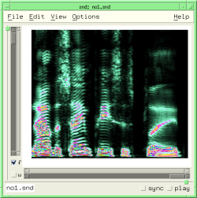 | 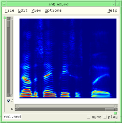 | |
background-gradient
In Gtk versions of Snd, this is the amount of background color gradient in the channel graphs (0.0, the default, means no gradient).

color? obj
This returns #t if 'obj' is a color (a Pixel in xm jargon); see make-color.
color->list obj
This returns the rgb color components of 'obj' in a list.
> (color->list (make-color 1 0 0)) (1.0 0.0 0.0)
color-cutoff
In spectra, this sets the lowest data value that will be colored (the default is 0.003). Anything less than that is rendered in the background color. This is the "data cutoff" slider in the View:Color/Orientation dialog.
color-inverted
This reflects the 'invert' button in the View:Color/Orientation dialog. If the colormap is inverted, the order of colors is reversed.
color-scale
color-scale reflects the darkness setting in the View:Color/Orientation dialog. The mapping between the slider in the dialog and the color-scale value is not linear, and is currently different in Gtk and Motif.
colormap
This is the colormap choice for various displays, most prominently the transform sonogram and spectrogram, and the wavogram. The built-in maps are: black-and-white-colormap, gray-colormap, hot-colormap, cool-colormap, bone-colormap, copper-colormap, pink-colormap, jet-colormap, prism-colormap, autumn-colormap, winter-colormap, spring-colormap, summer-colormap, rainbow-colormap, flag-colormap, and phases-colormap.
colormap-name index
colormap-name returns the specified colormap's name.
> (colormap-name (colormap)) "hot"
colormap-ref map pos
colormap-ref returns the rgb values of the colormap 'map' at position 'pos', suitable for use with make-color. 'pos' should be a float between 0.0 and 1.0. See the example above, or samples-via-colormap in draw.scm.
colormap-size
colormap-size returns (or sets) the current number of colors in each colormap. The default is 512.
colormap->integer colormap-object
This function returns the integer corresponding to a given colormap.
colormap? object
colormap? returns #t if 'object' is a usable colormap.
copy-context
This is the graphics mode (an integer in Snd, not a function) to use to draw over whatever is currently in a graph. The "contexts" refer to graphics contexts used throughout Snd; the copy-context copies into the current graph, whereas the cursor-context uses XOR. The error thrown for an unimplemented context is 'no-such-graphics-context.
current-font snd chn context
This is the current font (a Font in Motif, a PangoFontDescription* in Gtk+).
cursor-context
This is the graphics mode (an integer in Snd, not a function) for XOR drawing in the cursor color (for cursors, normally). See x-cursor or foreground-color.
delete-colormap object
delete-colormap deletes the memory associated with the given colormap.
draw-axes wid gc label x0 x1 y0 y1 style axes cr
This draws axes in the widget 'wid', using the graphics context 'gc', with the x-axis label 'label' going from 'x0' to 'x1' (floats) along the x axis, 'y0' to 'y1' along the y axis, with x-axis-style 'style' (x-axis-in-seconds etc). Whether axes are actually displayed or just implied depends on 'axes', which defaults to show-all-axes. In Gtk, the 'cr' argument is not optional; it is ignored in Motif. draw-axes returns a list of the actual (pixel) axis bounds.
draw-dot x0 y0 dot-size snd chn context cr
This draws a dot at ('x0 y0') of diameter 'dot-size' pixels in the specified context. See musglyphs.scm.
draw-dots positions dot-size snd chn context cr
This draws dots of size 'dot-size' from the (x y) pairs in the vector 'positions' in the specified context. draw-dots, draw-lines, and fill-polygon take vectors, rather than float-vectors (which would be more consistent with the rest of Snd) because the values passed are supposed to be short ints.
draw-line x0 y0 x1 y1 snd chn context cr
This draws a line from ('x0 y0') to ('x1 y1') in the specified context.
draw-lines lines snd chn context cr
This draws lines following the (x y) pairs in the vector 'lines' in the specified context. make-bezier-1 in musglyphs.scm can be used to draw Bezier curves.
draw-string text x0 y0 snd chn context cr
This draws a string ('text') in the current font and foreground color starting at ('x0 y0') in the specified context. The next procedures use the channel-property list to maintain a list of sample-oriented comments, displaying a given comment if its associated sample is currently in the time-domain graph:
(define* (add-comment sample comment snd1 chn1)
(let* ((snd (or snd1 (selected-sound)))
(chn (or chn1 (selected-channel)))
(old-comments (or (channel-property 'comments snd chn) ())))
(set! (channel-property 'comments snd chn)
(cons (list sample comment)
old-comments))))
(define (show-comments snd chn)
(let ((comments (or (channel-property 'comments snd chn) ())))
(for-each
(lambda (comment)
(let* ((samp (car comment))
(text (cadr comment))
(text-width (* 6 (string-length text)))
(ls (left-sample snd chn))
(rs (right-sample snd chn)))
(if (and (< ls samp)
(> rs samp))
(let ((xpos (x->position (/ samp (srate))))
(ypos (y->position (sample samp)))
(cr (make-cairo (car (channel-widgets snd chn)))))
(draw-line xpos 20 xpos (- ypos 4) snd chn time-graph cr)
(draw-string text (- xpos (/ text-width 2)) 18 snd chn time-graph cr)
(free-cairo cr)))))
comments)))
(hook-push after-graph-hook
(lambda (hook)
(show-comments (hook 'snd) (hook 'chn))))
fill-rectangle x0 y0 width height snd chn context erase cr
This draws a filled rectangle in the current foreground color from ('x0 y0') of size ('width height'). If 'erase' is #t, this function erases the rectangular area. See draw.scm and snd-motif.scm.
fill-polygon points snd chn context cr
This draws a filled polygon whose vertices are in the vector 'points'.
(define (-> x0 y0 size snd chn cr)
;; draw an arrow pointing (from the left) at the point (x0 y0)
(let ((points (make-vector 8)))
(define (point i x y)
(set! (points (* i 2)) x)
(set! (points (+ (* i 2) 1)) y))
(define (arrow-head x y)
(point 0 x y)
(point 1 (- x (* 2 size)) (- y size))
(point 2 (- x (* 2 size)) (+ y size))
(point 3 x y)
(fill-polygon points snd chn time-graph cr))
(arrow-head x0 y0)
(fill-rectangle (- x0 (* 4 size))
(floor (- y0 (* .4 size)))
(* 2 size)
(floor (* .8 size))
snd chn time-graph #f cr)))
musglyphs.scm has some elaborate examples that use fill-polygon to draw music notation symbols.
foreground-color snd chn context
This is the current foreground color. The following gives us a green cursor:
(set! (foreground-color 0 0 cursor-context) (make-color 1 0 1))
glSpectrogram data gl-list cutoff use-dB min-dB scale br bg bb
glSpectrogram takes spectrogram data and passes it to openGL.
graph-data data snd chn context low high graphics-style cr
graph-data displays 'data' in the time domain graph of the sound's channel 'chn' using the graphics context 'context' (normally copy-context), placing the data in the recipient's graph between points 'low' and 'high' in the drawing mode 'graphics-style'. With this function and make-graph-data, we can overlay sounds, overlay different versions of the same sound, place a portion of a sound over another at an arbitrary point, and so on (see draw.scm).
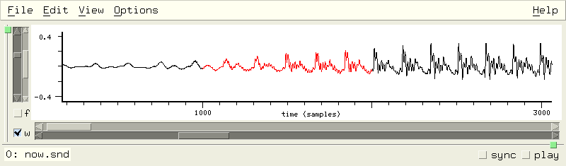integer->colormap i
This function returns the colormap corresponding to a given integer.
make-color red green blue (alpha 1.0)
make-color returns a color object using the rgb values 'red', 'green', and 'blue'. Each argument is a float between 0.0 (none of that color) and 1.0 (full value for that color). So,
(make-color 1 0 0)
returns a red color object. Two colors are equal (i.e. equal? returns #t) if their rgb values are the same. The 'alpha' argument only matters in Gtk.
make-graph-data snd chn edit-position low-sample high-sample
Use make-graph-data to get the currently displayed data (i.e. the waveform displayed in the graph, which can be based on an overall peak envelope rather than the individual samples). It returns either a float-vector (if the graph has one trace), or a list of two float-vectors (the two sides of the peak envelope graph). 'edit-position' defaults to the current edit history position, 'low-sample' defaults to the current window left sample, and 'high-sample' defaults to the current rightmost sample. The result can be used in the lisp graph:
(define display-db
(lambda (snd chn)
(let ((datal (make-graph-data snd chn)))
(if datal
(let* ((data (if (float-vector? datal) datal (cadr datal)))
(len (length data))
(sr (srate snd)))
(define (dB val)
(if (< val .001)
-60.0
(* 20.0 (log10 val))))
(do ((i 0 (+ i 1)))
((= i len))
(set! (data i) (+ 60.0 (dB (abs (data i))))))
(graph data "dB"
(/ (left-sample snd chn) sr) (/ (right-sample snd chn) sr)
0.0 60.0
snd chn))))))
(hook-push lisp-graph-hook
(lambda (hook)
(display-db (hook 'snd) (hook 'chn))))
Here we are taking whatever is displayed in the time domain, and presenting the same thing in dB in the lisp graph. display-energy in draw.scm is another example. But the real power of this function comes from its use with graph-data. The latter takes its argument (either a float-vector or a list of two float-vectors), and displays it in any channel's time domain graph using its current graph-style.
mark-context
This is the graphics context used to draw a mark (XOR mode). (It is an integer, not a function).
selection-context
This is the graphics context for XOR drawing in the selection color. (An integer, not a function).
snd-color choice
snd-color returns a Snd built-in color (as a Pixel/GdkPixel); it simplifies code that wants to follow whatever the current Snd color choices are. The choices are:
0: white 12: listener-color 1: black 13: listener-text-color 25: sash-color 2: red 14: basic-color 3: yellow 15: selection-color 4: green 16: zoom-color 5: light-blue 17: position-color 6: lighter-blue 18: highlight-color 7: data-color 19: enved-waveform-color 31: grid-color 8: selected-data-color 20: cursor-color 32: selected-grid-color 9: mark-color 21: text-focus-color 33: axis-color 10: graph-color 22: filter-control-waveform-color 11: selected-graph-color 23: mix-color
snd-font choice
snd-font returns a Snd built-in font (as a raw pointer, suitable for current-font but not much else); it simplifies code that wants to follow whatever the current Snd font choices are, but is really aimed at code that wants to use just built-in functions like current-font, and not rely on the xm or xg modules. The choices are:
0: peaks-font 1: bold-peaks-font 2: tiny-font 3: axis-label-font 4: axis-numbers-font 5: listener-font
See display-bark-fft in dsp.scm for an example.
snd-gcs
snd-gcs returns a list of Snd's graphics contexts:
0: bg=graph-color, fg=data-color 1: bg=selected-graph-color, fg=selected-data-color 2: bg=graph-color, fg=data-color, fg changes for superimposed graphs 3: bg=graph-color, fg=cursor-color, XOR (for cursor) 4: bg=selected-graph-color, fg=cursor-color, XOR (for cursor in selection) 5: bg=graph-color, fg=selection-color, XOR (for selection highlighting) 6: bg=selected-graph-color, fg=selection-color, XOR (selection highlighting) 7: bg=data-color, fg=graph-color (to erase data) 8: bg=selected-data-color, fg=selected-graph-color (erase data in selected channel) 9: bg=graph-color, fg=mark-color, XOR (for marks) 0: bg=selected-graph-color, fg=mark-color, XOR (marks in selected channel) 1: bg=graph-color, fg=mix-color 2: bg=selected-graph-color, fg=mix-color 3: bg=basic-color, fg=black 4: bg=basic-color, fg=filter-waveform-color
These graphics-contexts make it easier to fit in with whatever color scheme is currently in use. For example, in to make sure the font color reflects whether we're in the selected channel:
(XSetFont dpy ((if (= chn (selected-channel snd)) cadr car) (snd-gcs)) (.fid fs))
with-gl
If with-gl is #t and GL is loaded, use GL where possible (the default is #t if HAVE_GL). You can find out at run-time whether GL is loaded via (provided? 'gl).